Typical Prompt:
You are given 5 rigid lengths of pipe, each 5 meters long and 10cm in diameter.
One pipe is fixed with its center at the origin (0,0) and a rotation of 0, meaning its length is along the x-axis, and it
spans from -2.5,-0.05 to 2.5, 0.05.
Arrange the remaining 4 pipes on a 2D plane such that the the pipes resemble a "H" shape 10m high when viewed from above.
Pipes can not intersect each other, and should only touch at their ends.
Return a 5 element array of where each of the pipes are located:
You are given 5 rigid lengths of pipe, each 5 meters long and 10cm in diameter.
One pipe is fixed with its center at the origin (0,0) and a rotation of 0, meaning its length is along the x-axis, and it
spans from -2.5,-0.05 to 2.5, 0.05.
Arrange the remaining 4 pipes on a 2D plane such that the the pipes resemble a "H" shape 10m high when viewed from above.
Pipes can not intersect each other, and should only touch at their ends.
Return a 5 element array of where each of the pipes are located:
Prompt remains constant
Typical Prompt:
You have an unlimited number of lego(tm) bricks, each of individual size 31.8mm * 15.8mm * 11.4mm but when assembled they are
32mm * 16mm * 9.6mm due to interlocking studs and voids.
Assemble the bricks such that they resemble a 3D hemispherical shell, with inner radius 4cm and outer radius 7cm,
the centre of the hemisphere is at the origin (0,0,0).
Since it's impossible to create a perfect curve, the best score is one which is closer to the ideal curve, with
scoring being calculated based on the volume difference between the ideal curve and the actual brick structure.
The structure needs to be buildable in 3D, so bricks can not overlap or be floating in mid air. A great answer does not
contain any holes or missing bricks.
Return a list of the bricks (location in xyz mm relative to the origin and rotation in degrees).
You may also provide your reasoning in a seperate field, but it is not graded.
You have an unlimited number of lego(tm) bricks, each of individual size 31.8mm * 15.8mm * 11.4mm but when assembled they are
32mm * 16mm * 9.6mm due to interlocking studs and voids.
Assemble the bricks such that they resemble a 3D hemispherical shell, with inner radius 4cm and outer radius 7cm,
the centre of the hemisphere is at the origin (0,0,0).
Since it's impossible to create a perfect curve, the best score is one which is closer to the ideal curve, with
scoring being calculated based on the volume difference between the ideal curve and the actual brick structure.
The structure needs to be buildable in 3D, so bricks can not overlap or be floating in mid air. A great answer does not
contain any holes or missing bricks.
Return a list of the bricks (location in xyz mm relative to the origin and rotation in degrees).
You may also provide your reasoning in a seperate field, but it is not graded.
Inner and outer radius parameters increase progressively across subpasses
Typical Prompt:
You can output polyhedrons in a json format. This is a simple cube, every face has 4 vertices, and there are 6 faces:
{
"polyhedron":
{
"vertex":[{"xyz":[-1.0,-1.0,-1.0]},{"xyz":[1.0,-1.0,-1.0]},{"xyz":[1.0,1.0,-1.0]},{"xyz":[-1.0,1.0,-1.0]},{"xyz":[-1.0,-1.0,1.0]},{"xyz":[1.0,-1.0,1.0]},{"xyz":[1.0,1.0,1.0]},{"xyz":[-1.0,1.0,1.0]}],
"faces":[{"vertex":[3,2,1,0]},{"vertex":[4,5,6,7]},{"vertex":[0,1,5,4]},{"vertex":[7,6,2,3]},{"vertex":[3,0,4,7]},{"vertex":[1,2,6,5]}}]
}
}
Now you've learnt the format, use it to solve the following problem:
You are given a solid rectangular prism of size 10cm * 20cm * 30cm, translated such that it's centre of mass is at 5cm, 5cm, 5cm.
You are also given a solid cube with single side dimension 15cm, translated such that it's centre of mass is at -5cm, -5cm, -5cm.
Return a polyhedron that is the union of the two solid objects.
- Ensure faces have normals encoded in a consistent direction.
- Ensure no geometry occurs inside the polyhedron, and no faces cross through it.
- Note that some faces may have more than 4 vertices.
- Your output should have no degenerate faces or redundant vertices.
- The task is a failure if the output is not watertight.
You can output polyhedrons in a json format. This is a simple cube, every face has 4 vertices, and there are 6 faces:
{
"polyhedron":
{
"vertex":[{"xyz":[-1.0,-1.0,-1.0]},{"xyz":[1.0,-1.0,-1.0]},{"xyz":[1.0,1.0,-1.0]},{"xyz":[-1.0,1.0,-1.0]},{"xyz":[-1.0,-1.0,1.0]},{"xyz":[1.0,-1.0,1.0]},{"xyz":[1.0,1.0,1.0]},{"xyz":[-1.0,1.0,1.0]}],
"faces":[{"vertex":[3,2,1,0]},{"vertex":[4,5,6,7]},{"vertex":[0,1,5,4]},{"vertex":[7,6,2,3]},{"vertex":[3,0,4,7]},{"vertex":[1,2,6,5]}}]
}
}
Now you've learnt the format, use it to solve the following problem:
You are given a solid rectangular prism of size 10cm * 20cm * 30cm, translated such that it's centre of mass is at 5cm, 5cm, 5cm.
You are also given a solid cube with single side dimension 15cm, translated such that it's centre of mass is at -5cm, -5cm, -5cm.
Return a polyhedron that is the union of the two solid objects.
- Ensure faces have normals encoded in a consistent direction.
- Ensure no geometry occurs inside the polyhedron, and no faces cross through it.
- Note that some faces may have more than 4 vertices.
- Your output should have no degenerate faces or redundant vertices.
- The task is a failure if the output is not watertight.
Cube and rectangle move further apart in x.
Typical Prompt:
Here is the points and faces of a regular tetrahedron with all sides equal 1, resting on the Z=0 plane and with an edge along the X=0 plane:
polyhedron(
points = [
[0, 0, 0], // 0
[1, 0, 0], // 1
[0.5, sqrt(3)/2, 0], // 2
[0.5, sqrt(3)/6, sqrt(2/3)] // 3 (apex)
],
faces = [
[0, 2, 1], // base (oriented outward)
[0, 1, 3],
[1, 2, 3],
[2, 0, 3]
],
convexity = 4
);
We define a 7-part rigid transform of (x,y,z,q0,q1,q2,q3), where q0,q1,q2,q3 is a normalised quaternion, and x, y, z are the translation.
Rotation is defined around the 0,0,0 point (Which is NOT THE CENTRE), and is performed before translation.
We create a scene with mulitple tetrahedra, each with a different transform. Return the transforms of such a scene
such that a shadow projected vertically (onto the Z=0 plane) fully covers a square of side length 4, centered at the origin.
Use as many tetrahedra as you need, scoring is based on shadow coverage, not the number of tetrahedra used.
Score will be deducted for:
- any shadow outside of the square
- reduntant tetrahedra
- non-normalised quaternions
- intersection tetrahedra
Here is the points and faces of a regular tetrahedron with all sides equal 1, resting on the Z=0 plane and with an edge along the X=0 plane:
polyhedron(
points = [
[0, 0, 0], // 0
[1, 0, 0], // 1
[0.5, sqrt(3)/2, 0], // 2
[0.5, sqrt(3)/6, sqrt(2/3)] // 3 (apex)
],
faces = [
[0, 2, 1], // base (oriented outward)
[0, 1, 3],
[1, 2, 3],
[2, 0, 3]
],
convexity = 4
);
We define a 7-part rigid transform of (x,y,z,q0,q1,q2,q3), where q0,q1,q2,q3 is a normalised quaternion, and x, y, z are the translation.
Rotation is defined around the 0,0,0 point (Which is NOT THE CENTRE), and is performed before translation.
We create a scene with mulitple tetrahedra, each with a different transform. Return the transforms of such a scene
such that a shadow projected vertically (onto the Z=0 plane) fully covers a square of side length 4, centered at the origin.
Use as many tetrahedra as you need, scoring is based on shadow coverage, not the number of tetrahedra used.
Score will be deducted for:
- any shadow outside of the square
- reduntant tetrahedra
- non-normalised quaternions
- intersection tetrahedra
Prompt parameters change between subpasses (increasing difficulty)
Typical Prompt:
Generate a 16 * 16 ASCII art maze.
The maze must use the following characters:
# - Wall
. - Correct solution path
A - Start
B - End
- Untaken path (space)
The maze must be solvable, there must be only one solution, the annotated path must not have any loops or branches, and shortest path
from A to B must cover at least 10% of the maze area. The path threw the maze can only be 1 cell wide, and solvable with
only horizontal or vertical moves.
The maze must be 'watertight', that is have walls touching the border of the grid all around, A and B must be within the maze.
Return the maze as a string, with newlines between rows.
Every row and column of your output must be 16 characters long, and your output must be 16 rows long.
Outputting anything else than the maze will obviously result in a score of 0.
Generate a 16 * 16 ASCII art maze.
The maze must use the following characters:
# - Wall
. - Correct solution path
A - Start
B - End
- Untaken path (space)
The maze must be solvable, there must be only one solution, the annotated path must not have any loops or branches, and shortest path
from A to B must cover at least 10% of the maze area. The path threw the maze can only be 1 cell wide, and solvable with
only horizontal or vertical moves.
The maze must be 'watertight', that is have walls touching the border of the grid all around, A and B must be within the maze.
Return the maze as a string, with newlines between rows.
Every row and column of your output must be 16 characters long, and your output must be 16 rows long.
Outputting anything else than the maze will obviously result in a score of 0.
Prompt parameters change between subpasses (increasing difficulty)
Typical Prompt:
Position 50 voxels in a cubic grid of 6 voxels per side, such that the orthographic projection to all 3 planes is
solid (no holes in the projection), and there are no trivial symmetries (rotations or reflections that leave the shape unchanged).
0,0,0 is the bottom left grid cell and indices increase up and to the right.
Position 50 voxels in a cubic grid of 6 voxels per side, such that the orthographic projection to all 3 planes is
solid (no holes in the projection), and there are no trivial symmetries (rotations or reflections that leave the shape unchanged).
0,0,0 is the bottom left grid cell and indices increase up and to the right.
Progressively larger grids with more voxels across subpasses
Typical Prompt:
Here is a heightmap platform maze, in which A is located at height 5, and B is located at height 0.
The maze represents a 3D space where movement is constrained by height differences.
Characters can only move to adjacent cells if the height difference is at most 1, or jump over gaps.
A555
2B20
3015
4555
The character can move:
- 1 cell horizontally or vertically, so long as the height is within 1 unit.
- Can jump 2 cells horizontally or vertically, so long as:
- source and destination heights are the same
- the height of the cell between the source and destination is lower than the source height (jump over gaps, not through walls!)
In this case, the character:
- starts at A, which is at level 5
- walks flat for a bit,
- jumps over a gap of height 0 to another level 5 block.
- walks flat for a bit
- descends until level 2, then jumps over B to level 2,
- and then continues down to level 0, reaching B.
The maze must use only 0-9, A & B to represent height, and must only have one solution.
A & B must appear in the grid once each.
The path must visit at least 20% of all cells.
No single elevation can occupy more than 20% of the grid.
Create a maze of size 5x5 that has A at level 5 and B at level 0, and at least 2 jumps.
Your output must be ONLY the maze's heightmap, nothing else.
Your output must be 5 rows long, and every row must be 5 characters long.
The maze must be your only output - Extra text above or below the maze itself corrupt your work.
Here is a heightmap platform maze, in which A is located at height 5, and B is located at height 0.
The maze represents a 3D space where movement is constrained by height differences.
Characters can only move to adjacent cells if the height difference is at most 1, or jump over gaps.
A555
2B20
3015
4555
The character can move:
- 1 cell horizontally or vertically, so long as the height is within 1 unit.
- Can jump 2 cells horizontally or vertically, so long as:
- source and destination heights are the same
- the height of the cell between the source and destination is lower than the source height (jump over gaps, not through walls!)
In this case, the character:
- starts at A, which is at level 5
- walks flat for a bit,
- jumps over a gap of height 0 to another level 5 block.
- walks flat for a bit
- descends until level 2, then jumps over B to level 2,
- and then continues down to level 0, reaching B.
The maze must use only 0-9, A & B to represent height, and must only have one solution.
A & B must appear in the grid once each.
The path must visit at least 20% of all cells.
No single elevation can occupy more than 20% of the grid.
Create a maze of size 5x5 that has A at level 5 and B at level 0, and at least 2 jumps.
Your output must be ONLY the maze's heightmap, nothing else.
Your output must be 5 rows long, and every row must be 5 characters long.
The maze must be your only output - Extra text above or below the maze itself corrupt your work.
Prompt parameters change between subpasses (increasing difficulty)
Typical Prompt:
Here is an 8x8 grid representing a space partition:
###.....
##......
##......
###.....
####....
#####...
#######.
########
0, 0 is the top left, x is horizontal, y is vertical. Coordinates are in integers.
Using the formula:
let cell =
# if f(x,y) > 0
. if f(x,y) <= 0
where f(x,y) is a polynomial of whatever degree you need to solve this. You can include cross terms like x*y, x**2*y, x*y**2, etc.
Return the formula as python function f(x,y) that uses ONLY:
- arithmetic operations (+, -, *, /)
- powers (**)
- parentheses for grouping
- integer coordinates x, y
- the words "def" and "return"
Do not use type annotations, casts, conditionals, branches, additional variables, comments or anything else.
You can use the following example as a template:
def f(x, y):
return x**2 + 3*y**2 - 4*x*y - 145
DO NOT OUTPUT ANYTHING ELSE THAN THE FUNCTION.
Here is an 8x8 grid representing a space partition:
###.....
##......
##......
###.....
####....
#####...
#######.
########
0, 0 is the top left, x is horizontal, y is vertical. Coordinates are in integers.
Using the formula:
let cell =
# if f(x,y) > 0
. if f(x,y) <= 0
where f(x,y) is a polynomial of whatever degree you need to solve this. You can include cross terms like x*y, x**2*y, x*y**2, etc.
Return the formula as python function f(x,y) that uses ONLY:
- arithmetic operations (+, -, *, /)
- powers (**)
- parentheses for grouping
- integer coordinates x, y
- the words "def" and "return"
Do not use type annotations, casts, conditionals, branches, additional variables, comments or anything else.
You can use the following example as a template:
def f(x, y):
return x**2 + 3*y**2 - 4*x*y - 145
DO NOT OUTPUT ANYTHING ELSE THAN THE FUNCTION.
Prompt parameters change between subpasses (increasing difficulty)
Typical Prompt:
You have a 4*4 grid of unit squares, with cell coordinates (x, y) where 1 <= x <= 4, 1 <= y <= 4.
Draw a single closed path that:
- Moves from cell to cell using only side-adjacent moves.
- Visits every cell exactly once.
- Returns to its starting cell (so the path is a loop).
- The last cell in your list must be side-adjacent to the first.
Answer format:
Give an ordered list of the 16 cell coordinates for the loop, starting anywhere, for example:
1,1
1,2
1,3
...
2,1
You have a 4*4 grid of unit squares, with cell coordinates (x, y) where 1 <= x <= 4, 1 <= y <= 4.
Draw a single closed path that:
- Moves from cell to cell using only side-adjacent moves.
- Visits every cell exactly once.
- Returns to its starting cell (so the path is a loop).
- The last cell in your list must be side-adjacent to the first.
Answer format:
Give an ordered list of the 16 cell coordinates for the loop, starting anywhere, for example:
1,1
1,2
1,3
...
2,1
Grid size increases across subpasses, with a missing chunk in the final subpass
Typical Prompt:
You are a painter, you have a canvas of size 16 * 16 pixels.
You are painting a scene from the north east, at a 45 degree angle looking down. You are using an orthographic projection.
The scene contains 5 axis aligned cubes, each with a side length of 1 unit. The cubes bottom-centres are placed at the vertices of a
regular pentagram of side length 5 units, centred at the origin, aligned so it's 'pointing' positive y,
and is centred in the middle of your painting.
Your painting is zoomed such that the outer edges of the cubes touch the edges of the canvas.
Return the canvas as a string, with:
- # representing a surface facing up (the top plane of a cube)
- " representing a surface facing east or west.
- ' representing a surface facing north or south.
- (space) representing unpainted pixels, the ground, sky, pentagram or anything else.
You are a painter, you have a canvas of size 16 * 16 pixels.
You are painting a scene from the north east, at a 45 degree angle looking down. You are using an orthographic projection.
The scene contains 5 axis aligned cubes, each with a side length of 1 unit. The cubes bottom-centres are placed at the vertices of a
regular pentagram of side length 5 units, centred at the origin, aligned so it's 'pointing' positive y,
and is centred in the middle of your painting.
Your painting is zoomed such that the outer edges of the cubes touch the edges of the canvas.
Return the canvas as a string, with:
- # representing a surface facing up (the top plane of a cube)
- " representing a surface facing east or west.
- ' representing a surface facing north or south.
- (space) representing unpainted pixels, the ground, sky, pentagram or anything else.
Higher and higher resolution ASCII art.
Typical Prompt:
Do you remember the snake game, where you have to direct a snake around a 2D space to avoid hitting itself? This is hyper-snake!
You are a snake in a 3D space grid of size (4,4,4). You can move to any adjacent cell in the grid, along any of the
available 3 dimensions, but you can not move to a cell which you have visited before, nor can you move "diagonally",
that is, you can not move in more than one dimension at a time.
The game ends when you run out of space to move, when you hit the boundary, or when you run into yourself.
Return the path of the snake as a list of cells, the first element of which is [0, 0,0], and going for as long as you can.
Do you remember the snake game, where you have to direct a snake around a 2D space to avoid hitting itself? This is hyper-snake!
You are a snake in a 3D space grid of size (4,4,4). You can move to any adjacent cell in the grid, along any of the
available 3 dimensions, but you can not move to a cell which you have visited before, nor can you move "diagonally",
that is, you can not move in more than one dimension at a time.
The game ends when you run out of space to move, when you hit the boundary, or when you run into yourself.
Return the path of the snake as a list of cells, the first element of which is [0, 0,0], and going for as long as you can.
Dimensions increase from 3D to 6D
Typical Prompt:
You have 3 1m lengths of pipe, and an square area of side length 1 to play with.
Lay the pipe out to form a closed loop, using all the pipe, and returning to the starting point.
You can not cross existing pipe, you can not re-use vertices, and you can not cross the boundary of the area. You do not need to
stick to axis aligned paths.
Return the loop as a list of the pipe endpoints. Note that N pipes requires N+1 verticies to describe a path, but since the
first and last vertices are the same, you only need to return N points.
You have 3 1m lengths of pipe, and an square area of side length 1 to play with.
Lay the pipe out to form a closed loop, using all the pipe, and returning to the starting point.
You can not cross existing pipe, you can not re-use vertices, and you can not cross the boundary of the area. You do not need to
stick to axis aligned paths.
Return the loop as a list of the pipe endpoints. Note that N pipes requires N+1 verticies to describe a path, but since the
first and last vertices are the same, you only need to return N points.
Increasing pipe length and square size.
Typical Prompt:
You have a building at the origin, axis aligned, 2 meters wide and deep, and 10 meters tall.
A sniper is located at (100,100,20) and is looking at the building.
Position a crowd of 4 people (represented by a 0.5*0.5*2m axis aligned bounding box resting on the z=0 plane)
in such a way that:
- the sniper can not see any of them due to the building blocking their line of sight.
- the people must be positioned entirely on the ground (z=0).
- the people must not overlap with the building or each other.
- nobody is more than 30 meters away from the building's center.
You have a building at the origin, axis aligned, 2 meters wide and deep, and 10 meters tall.
A sniper is located at (100,100,20) and is looking at the building.
Position a crowd of 4 people (represented by a 0.5*0.5*2m axis aligned bounding box resting on the z=0 plane)
in such a way that:
- the sniper can not see any of them due to the building blocking their line of sight.
- the people must be positioned entirely on the ground (z=0).
- the people must not overlap with the building or each other.
- nobody is more than 30 meters away from the building's center.
Varying crowd size and building dimensions
Typical Prompt:
You are given the following grid of cells:
....B.....
..........
..........
..........
..........
..........
......A...
..........
.......C..
..........
Partition this space such that each cell contains exactly one of the letters.
Use lines of the form ax+b =0 to partition the space. The topleft of the grid is (0,0) and cell cooridinates are integers.
Return the lines as a list of (a,b) tuples.
You can create a horizontal line by setting a=0 and b to the y coordinate of the line. Giving an equation of the form y=b.
You can create a vertical line by setting a to +/- infinity and b to the x coordinate of the line, which although not mathematically
rigerous, is a common convention in computer graphics. Giving an "equation" that simplifies to the form x=b.
You are given the following grid of cells:
....B.....
..........
..........
..........
..........
..........
......A...
..........
.......C..
..........
Partition this space such that each cell contains exactly one of the letters.
Use lines of the form ax+b =0 to partition the space. The topleft of the grid is (0,0) and cell cooridinates are integers.
Return the lines as a list of (a,b) tuples.
You can create a horizontal line by setting a=0 and b to the y coordinate of the line. Giving an equation of the form y=b.
You can create a vertical line by setting a to +/- infinity and b to the x coordinate of the line, which although not mathematically
rigerous, is a common convention in computer graphics. Giving an "equation" that simplifies to the form x=b.
Bigger grids with more regions
Typical Prompt:
You are playing Tetris(tm), and are cursed to only get the L-shaped tetrimino for all time.
The L shaped piece initially arrives in this orientation (with indent representing grid position):
###
#
It can be rotated in 90 degree increments clockwise, and moved left and right. The centre of rotation is the corner of the L.
Two units of movement to the right looks like this (noting indent):
###
#
Three units of movement to the right and a 90 degree clockwise rotation looks like this (noting indent):
##
#
#
2 units of movement to the right, and a 180 degree clockwise rotation looks like this (noting indent):
#
###
Blocks spawn at position 0,0, the top left of the grid. The grid is 10 cells wide and 30 cells high.
When a row is filled, it is removed from the grid, and all blocks above it are shifted down by one row.
Position blocks by moving them left and right, and rotating them in clockwise 90 degree increments for as long as possible.
When you get bored, run out of token limits, mistakenly truncate your output, or make too many mistakes,
the game will end and your score will be tallied. You solution must remove at least 10 rows to pass.
You are playing Tetris(tm), and are cursed to only get the L-shaped tetrimino for all time.
The L shaped piece initially arrives in this orientation (with indent representing grid position):
###
#
It can be rotated in 90 degree increments clockwise, and moved left and right. The centre of rotation is the corner of the L.
Two units of movement to the right looks like this (noting indent):
###
#
Three units of movement to the right and a 90 degree clockwise rotation looks like this (noting indent):
##
#
#
2 units of movement to the right, and a 180 degree clockwise rotation looks like this (noting indent):
#
###
Blocks spawn at position 0,0, the top left of the grid. The grid is 10 cells wide and 30 cells high.
When a row is filled, it is removed from the grid, and all blocks above it are shifted down by one row.
Position blocks by moving them left and right, and rotating them in clockwise 90 degree increments for as long as possible.
When you get bored, run out of token limits, mistakenly truncate your output, or make too many mistakes,
the game will end and your score will be tallied. You solution must remove at least 10 rows to pass.
Increasing grid size and row target
Typical Prompt:
You are given the following rectangular prisms:
7 prisms of 5x3x2
and have to pack them as efficiently as possible into the smallest volume possible.
You can rotate the prisms as you see fit, return a list of min/max xyz coordinates.
You are given the following rectangular prisms:
7 prisms of 5x3x2
and have to pack them as efficiently as possible into the smallest volume possible.
You can rotate the prisms as you see fit, return a list of min/max xyz coordinates.
Adds additional prisms for each run
Typical Prompt:
A very fine sand in a laminar flow is falling from a 25NB pipe whose opening sits 200ft above the floor of a silo.
5 cubic yards are sitting in the silo at the start.
1500 cubic feet of sand is piped in from trucks.
Then a 100 cubic meters train is unloaded.
Then 20 drums of sand are emptied, each 44-gallons. (UK Imperial Gallons)
The grain size and moisture content results in an angle of repose of 33 degrees.
The silo is 10 yards in dimeter, and negligible internal wind / air current.
Return an OpenSCAD file containing the shape of the sand pile: Use metric within OpenSCAD. 1 unit = 1 meter.
Keep the OpenSCAD file as simple as possible, using the fewest number of lines possible.
Do not output anything else than the OpenSCAD file, as commentary doesn't compile.
A very fine sand in a laminar flow is falling from a 25NB pipe whose opening sits 200ft above the floor of a silo.
5 cubic yards are sitting in the silo at the start.
1500 cubic feet of sand is piped in from trucks.
Then a 100 cubic meters train is unloaded.
Then 20 drums of sand are emptied, each 44-gallons. (UK Imperial Gallons)
The grain size and moisture content results in an angle of repose of 33 degrees.
The silo is 10 yards in dimeter, and negligible internal wind / air current.
Return an OpenSCAD file containing the shape of the sand pile: Use metric within OpenSCAD. 1 unit = 1 meter.
Keep the OpenSCAD file as simple as possible, using the fewest number of lines possible.
Do not output anything else than the OpenSCAD file, as commentary doesn't compile.
Prompt remains constant
Typical Prompt:
A pharoh is building a pyramyd to rest on top of his tomb and protect him for the afterlife.
He has an army of 100,000 men who are honour bound to assist him in the project.
Pyramids must face north, which is +y, and is centred over the future tomb.
Pharoh has 20,000 cut large stones, each a 50cm side-length cube.
Each stone needs 10 men to move.
When placed on top of other stones, each stone must have all 4 base
corners sitting in the middle of another stone. Any other arrangements will result in collapse.
The pyramid does not have any internal voids for this reason.
The final facade will be done with wedges of marble, and the local stonemason requires precise plans to cut
marble such that each external large stone is covered and the resulting pyamid is smooth.
Generate an OpenSCAD plan showing the tallest pyramid the pharoh can build with his budget
of stone. This plan must be precise with its volume accurate to the milimeter including every step
yet optimised enough to be viewable on the stonemason's CAD software.
Use Metric SI units in all working and in the final OpenSCAD file.
Do not output anything else than the OpenSCAD file, as that will cause compilation errors.
A pharoh is building a pyramyd to rest on top of his tomb and protect him for the afterlife.
He has an army of 100,000 men who are honour bound to assist him in the project.
Pyramids must face north, which is +y, and is centred over the future tomb.
Pharoh has 20,000 cut large stones, each a 50cm side-length cube.
Each stone needs 10 men to move.
When placed on top of other stones, each stone must have all 4 base
corners sitting in the middle of another stone. Any other arrangements will result in collapse.
The pyramid does not have any internal voids for this reason.
The final facade will be done with wedges of marble, and the local stonemason requires precise plans to cut
marble such that each external large stone is covered and the resulting pyamid is smooth.
Generate an OpenSCAD plan showing the tallest pyramid the pharoh can build with his budget
of stone. This plan must be precise with its volume accurate to the milimeter including every step
yet optimised enough to be viewable on the stonemason's CAD software.
Use Metric SI units in all working and in the final OpenSCAD file.
Do not output anything else than the OpenSCAD file, as that will cause compilation errors.
Hundreds of thousands of stones, then millions. The AI needs to merge adjacent stones and work with merged layers in order to solve this.
If it attempts to bruteforce a solution by rendering millions
of bricks as individual cubes, OpenSCAD will either crash from
std::bad_alloc or timeout after 600 seconds, both causing failure.
Typical Prompt:
Here is the points and faces of a tetrahedron
It has three edges of length 1 along the axes, and three edges of length sqrt(2) on the diagonals.
polyhedron(
points = [
[0, 0, 0], // 0 (origin corner)
[1, 0, 0], // 1 (along X)
[0, 1, 0], // 2 (along Y)
[0, 0, 1] // 3 (along Z)
],
faces = [
[0, 2, 1], // XY plane face (Z=0)
[0, 1, 3], // XZ plane face (Y=0)
[0, 3, 2], // YZ plane face (X=0)
[1, 2, 3] // slanted face (x+y+z=1)
],
convexity = 4
);
We define a 7-part rigid transform of (x,y,z,q0,q1,q2,q3), where q0,q1,q2,q3 is a normalised quaternion, and x, y, z are the translation.
Rotation is defined around the 0,0,0 point (Which is NOT THE CENTRE), and is performed before translation.
We create a scene with multiple tetrahedra, each with a different transform. Now we can pack them in as tightly as possible
in order to create a 3D shape, trying to maximize packing density and recreate the target shape.
Return the transform array of tetrahedra in order to create a:
Sphere of radius 4, with the center at origin.
Here is the points and faces of a tetrahedron
It has three edges of length 1 along the axes, and three edges of length sqrt(2) on the diagonals.
polyhedron(
points = [
[0, 0, 0], // 0 (origin corner)
[1, 0, 0], // 1 (along X)
[0, 1, 0], // 2 (along Y)
[0, 0, 1] // 3 (along Z)
],
faces = [
[0, 2, 1], // XY plane face (Z=0)
[0, 1, 3], // XZ plane face (Y=0)
[0, 3, 2], // YZ plane face (X=0)
[1, 2, 3] // slanted face (x+y+z=1)
],
convexity = 4
);
We define a 7-part rigid transform of (x,y,z,q0,q1,q2,q3), where q0,q1,q2,q3 is a normalised quaternion, and x, y, z are the translation.
Rotation is defined around the 0,0,0 point (Which is NOT THE CENTRE), and is performed before translation.
We create a scene with multiple tetrahedra, each with a different transform. Now we can pack them in as tightly as possible
in order to create a 3D shape, trying to maximize packing density and recreate the target shape.
Return the transform array of tetrahedra in order to create a:
Sphere of radius 4, with the center at origin.
Prompt parameters change between subpasses (increasing difficulty)
Typical Prompt:
Create a < 4096 bytes snippet of python code that exports a function 'f', taking 2 parameters (x and y),
that when executed returns a parametric shape representing Australia's land mass, including at least Tasmania.
f(x,y) > 0 represents "inside".
f(x,y) <= 0 represents "outside".
Use a mercartor projection to project from spherical to 2D.
Scale the 2D shape such that it fits within a normalised 0,0 -> 1,1
Cape York, QLD's tip is on the line y=0
South East Cape, TAS is on the line y=1
Cape Byron, NSW is on the line x=1
Steep Point, WAS, is on the line X=0
Comments are a waste of bytes, do not use them.
Coding standards & best practices are not enforced. Go nuts.
Will be executed in Python Version: sys.version_info(major=3, minor=12, micro=0, releaselevel='final', serial=0)
Your python code can not import any modules of it's own, but it does have the following imports
prepended, and not included in the 4096 bytes character limit. .
import math, numpy, scipy, cmath, decimal, fractions, random, statistics, itertools, base64
The code you send can not have an import statement, so if you're testing python code, be sure to
remove the "import" statement before submission.
Create a < 4096 bytes snippet of python code that exports a function 'f', taking 2 parameters (x and y),
that when executed returns a parametric shape representing Australia's land mass, including at least Tasmania.
f(x,y) > 0 represents "inside".
f(x,y) <= 0 represents "outside".
Use a mercartor projection to project from spherical to 2D.
Scale the 2D shape such that it fits within a normalised 0,0 -> 1,1
Cape York, QLD's tip is on the line y=0
South East Cape, TAS is on the line y=1
Cape Byron, NSW is on the line x=1
Steep Point, WAS, is on the line X=0
Comments are a waste of bytes, do not use them.
Coding standards & best practices are not enforced. Go nuts.
Will be executed in Python Version: sys.version_info(major=3, minor=12, micro=0, releaselevel='final', serial=0)
Your python code can not import any modules of it's own, but it does have the following imports
prepended, and not included in the 4096 bytes character limit. .
import math, numpy, scipy, cmath, decimal, fractions, random, statistics, itertools, base64
The code you send can not have an import statement, so if you're testing python code, be sure to
remove the "import" statement before submission.
Prompt parameters change between subpasses (increasing difficulty)
Typical Prompt:
You are given a 3D space of dimensions 10 * 10 * 10 meters, and have to build a rollercoaster track that
meets the following requirements:
- Starts at altitude Z = 5 meters
- Minimum track length: 12
- Must exceed a speed of at least: 5
- Must not exceed a speed of 40m/s
- Once up to speed, must not drop below a speed of 5m/s
- Must finish at altitude Z = 0 meters
- Must not use any acceleration other than Earth's gravity.
- Must not exceed 5G acceleration when turning.
Track segments are represented by a list of points, where each point is a list of [x, y, z] coordinates.
Track layout must follow these rules:
- No segment longer than 1.8m.
- No segment shorter than 90cm
- The angle between 2 segments must not exceed 10 degrees.
- When crossing existing track, a vertical clearence of 3m minimum is required.
- All track segments must be within 0,0,0 -> 10,10,10
You do not need to consider support positions at this stage of the planning.
Assume frictionless vacuum on straights and gentle turns.
Turns greater than 1G can be used to reduce speed. A 2G turn reduces speed by 10%,
a 3G turn reduces speed by 20%, and you can linearly extrapolate to calculate exact
speed controls if required.
Return the track as a list of points, where each point is a list of [x, y, z] coordinates.
You are given a 3D space of dimensions 10 * 10 * 10 meters, and have to build a rollercoaster track that
meets the following requirements:
- Starts at altitude Z = 5 meters
- Minimum track length: 12
- Must exceed a speed of at least: 5
- Must not exceed a speed of 40m/s
- Once up to speed, must not drop below a speed of 5m/s
- Must finish at altitude Z = 0 meters
- Must not use any acceleration other than Earth's gravity.
- Must not exceed 5G acceleration when turning.
Track segments are represented by a list of points, where each point is a list of [x, y, z] coordinates.
Track layout must follow these rules:
- No segment longer than 1.8m.
- No segment shorter than 90cm
- The angle between 2 segments must not exceed 10 degrees.
- When crossing existing track, a vertical clearence of 3m minimum is required.
- All track segments must be within 0,0,0 -> 10,10,10
You do not need to consider support positions at this stage of the planning.
Assume frictionless vacuum on straights and gentle turns.
Turns greater than 1G can be used to reduce speed. A 2G turn reduces speed by 10%,
a 3G turn reduces speed by 20%, and you can linearly extrapolate to calculate exact
speed controls if required.
Return the track as a list of points, where each point is a list of [x, y, z] coordinates.
Prompt parameters change between subpasses (increasing difficulty)
Typical Prompt:
You are an AI in charge of navigating a spaceship in orbit.
You are currently at [-1845.998197, -6653.941516, -3451.314228] km (in a LEO orbit 1348.73 km above the earths surface) travelling with velocity [4.30553, 1.936911, -5.512077] km/s and the mission timer just got set to a 0 second epoch.
You are given a list of 2 space stations in orbit, and have to plan a path for a spaceship
to visit all of them. You need to calculate this route exactly and should use all relevant tools available to you.
Your goal is to minimise Delta-V used for this journey, not time or distance. Any journey plan under
1,000 years is acceptable.
You may assume:
- The spacecraft is a point mass.
- All coordiantes are Earth-centred inertial (GCRF/J2000) coordinates.
- Your spaceship mass does not change as fuel is expended, and all thrusts are instantaneous.
- Your engine has no maximum impulse and your spacecraft's burns have no maximum delta-V.
- All units are SI except distances, which are in km.
- Rendevous are of duration that is short enough to be considered instantaneous.
- Rndevous does not transfer momentum between spacecraft.
- Two craft must pass within .1km of each other with relative speeds < 0.005km/s in order to successfully rendezvous.
- The earth is a perfect sphere with radius 6371km.
- The moon, sun, and rest of the solar system do not affect the spacecraft.
- The atmosphere does not affect any spacecraft above 100km altitude. Below 100km the spacecraft is destroyed instantly.
Here are the orbits you need to visit: (Of the format [Pos X, Y, Z, Vel X, Y, Z] at the same epoch as your mission timer T=0)
Station 0: [4579.848378, 5233.075386, 578.192725, -5.209886, 4.167153, 3.551514]
Station 1: [5315.246203, -4099.93111, -1906.074155, 1.612607, 4.72754, -5.671965]
You are an AI in charge of navigating a spaceship in orbit.
You are currently at [-1845.998197, -6653.941516, -3451.314228] km (in a LEO orbit 1348.73 km above the earths surface) travelling with velocity [4.30553, 1.936911, -5.512077] km/s and the mission timer just got set to a 0 second epoch.
You are given a list of 2 space stations in orbit, and have to plan a path for a spaceship
to visit all of them. You need to calculate this route exactly and should use all relevant tools available to you.
Your goal is to minimise Delta-V used for this journey, not time or distance. Any journey plan under
1,000 years is acceptable.
You may assume:
- The spacecraft is a point mass.
- All coordiantes are Earth-centred inertial (GCRF/J2000) coordinates.
- Your spaceship mass does not change as fuel is expended, and all thrusts are instantaneous.
- Your engine has no maximum impulse and your spacecraft's burns have no maximum delta-V.
- All units are SI except distances, which are in km.
- Rendevous are of duration that is short enough to be considered instantaneous.
- Rndevous does not transfer momentum between spacecraft.
- Two craft must pass within .1km of each other with relative speeds < 0.005km/s in order to successfully rendezvous.
- The earth is a perfect sphere with radius 6371km.
- The moon, sun, and rest of the solar system do not affect the spacecraft.
- The atmosphere does not affect any spacecraft above 100km altitude. Below 100km the spacecraft is destroyed instantly.
Here are the orbits you need to visit: (Of the format [Pos X, Y, Z, Vel X, Y, Z] at the same epoch as your mission timer T=0)
Station 0: [4579.848378, 5233.075386, 578.192725, -5.209886, 4.167153, 3.551514]
Station 1: [5315.246203, -4099.93111, -1906.074155, 1.612607, 4.72754, -5.671965]
Prompt parameters change between subpasses (increasing difficulty)
Typical Prompt:
You are given a 3D voxel world, of dimensions 16 * 16 * 8 voxels,
currently filled with dirt uniformly flat and solid at the layers z = [0,1,2]
Rainfall occurs at the top centre of the world, and follows the following rules:
- If air is below water, the water falls (z = z - 1)
- If water has ground or water below it, it "flood fills" out looking for any air voxels
at the z level below it, and moves to the nearest one.
- If water touches the sides or bottom of the world, it falls off and is lost forever.
- If water can't find a reachable air voxel to walk to, it remains there as a pool of water.
Rainfall currently all runs off the edge of the map, meaning earthworks are required to achieve
your goals. After your earthworks complete, there will be 1000s of voxels worth of rainfall
before your world is graded.
Add dirt or air voxels to the world in order to accomplish your task:
Ensure that; after the rains end,
there is a lake of at least 36 voxels in surface area.
You are given a 3D voxel world, of dimensions 16 * 16 * 8 voxels,
currently filled with dirt uniformly flat and solid at the layers z = [0,1,2]
Rainfall occurs at the top centre of the world, and follows the following rules:
- If air is below water, the water falls (z = z - 1)
- If water has ground or water below it, it "flood fills" out looking for any air voxels
at the z level below it, and moves to the nearest one.
- If water touches the sides or bottom of the world, it falls off and is lost forever.
- If water can't find a reachable air voxel to walk to, it remains there as a pool of water.
Rainfall currently all runs off the edge of the map, meaning earthworks are required to achieve
your goals. After your earthworks complete, there will be 1000s of voxels worth of rainfall
before your world is graded.
Add dirt or air voxels to the world in order to accomplish your task:
Ensure that; after the rains end,
there is a lake of at least 36 voxels in surface area.
Prompt parameters change between subpasses (increasing difficulty)
Typical Prompt:
You are given a set of points in 2D space. A rubber band is stretch around the entire scene,
and let snap. Return a list of all the point indices the rubber band touches.
0: (81, 14)
1: (3, 94)
2: (35, 31)
3: (28, 17)
4: (94, 13)
5: (86, 94)
6: (69, 11)
7: (75, 54)
8: (4, 3)
9: (11, 27)
10: (29, 64)
11: (77, 3)
12: (71, 25)
13: (91, 83)
14: (89, 69)
15: (53, 28)
You are given a set of points in 2D space. A rubber band is stretch around the entire scene,
and let snap. Return a list of all the point indices the rubber band touches.
0: (81, 14)
1: (3, 94)
2: (35, 31)
3: (28, 17)
4: (94, 13)
5: (86, 94)
6: (69, 11)
7: (75, 54)
8: (4, 3)
9: (11, 27)
10: (29, 64)
11: (77, 3)
12: (71, 25)
13: (91, 83)
14: (89, 69)
15: (53, 28)
Prompt parameters change between subpasses (increasing difficulty)
Typical Prompt:
You are given a set of points in 2D space.
Form a collection of triangles from these points such that:
- No edges cross each other.
- No points lie inside a triangle.
- Every point contributes to a triangle.
- Minimum angles are maximised.
0: (18, 58)
1: (58, 98)
2: (22, 90)
3: (50, 93)
4: (44, 55)
5: (64, 14)
6: (68, 15)
7: (10, 94)
8: (58, 33)
9: (6, 84)
10: (82, 26)
11: (42, 29)
12: (39, 98)
13: (26, 22)
14: (18, 24)
15: (44, 47)
You are given a set of points in 2D space.
Form a collection of triangles from these points such that:
- No edges cross each other.
- No points lie inside a triangle.
- Every point contributes to a triangle.
- Minimum angles are maximised.
0: (18, 58)
1: (58, 98)
2: (22, 90)
3: (50, 93)
4: (44, 55)
5: (64, 14)
6: (68, 15)
7: (10, 94)
8: (58, 33)
9: (6, 84)
10: (82, 26)
11: (42, 29)
12: (39, 98)
13: (26, 22)
14: (18, 24)
15: (44, 47)
Prompt parameters change between subpasses (increasing difficulty)
Typical Prompt:
You are given a list of dimensions, these represent a series of recursive subdivisions of a 0,0,0->1,1,1 unit cube.
Eg [Z,Z,Z,X] means:
- the cube has 16 rectangular prism leaf nodes,
- Each of size [1/2, 1, 1/8].
- Nodes are identified by their path through the tree. 0 represents the minimum split, 1 represents the maximum split.
- "" is the root node. "0" is the z= [0,0.5] half of the cube. "00" is the z= [0,0.25] quarter of the cube. etc.
Tree structure:
0: Z
1: X
2: Y
3: Z
4: X
5: Y
6: Z
7: X
Task: List all landlocked nodes. That is nodes that don't touch the edge of the unit cube.
You are given a list of dimensions, these represent a series of recursive subdivisions of a 0,0,0->1,1,1 unit cube.
Eg [Z,Z,Z,X] means:
- the cube has 16 rectangular prism leaf nodes,
- Each of size [1/2, 1, 1/8].
- Nodes are identified by their path through the tree. 0 represents the minimum split, 1 represents the maximum split.
- "" is the root node. "0" is the z= [0,0.5] half of the cube. "00" is the z= [0,0.25] quarter of the cube. etc.
Tree structure:
0: Z
1: X
2: Y
3: Z
4: X
5: Y
6: Z
7: X
Task: List all landlocked nodes. That is nodes that don't touch the edge of the unit cube.
Prompt parameters change between subpasses (increasing difficulty)
Typical Prompt:
You are given a 2D grid, laid out like so:
BECBDEEDCEDBDDEBBDEDCBBECCDECABA
CABEDBEBABCDEEACCABEBEBDADACEBED
DCAEACDDCDCECCADECEEAECCECACEDCD
CEBDCDCABDABCBCCABECBCDABECEABBC
EDAEAABDBAABBDCAEDAECAADAEDAEBED
AACBCCEDADDEEAEAAEACBDEBACDBEDAC
BBACDEDCDACCEDAEACCADEDCEDEDCDBB
ACADCAADEECCABDCECBBADADDAACDEAB
A represents Amethysist
B represents Blue Sapphire
C represents Cubic Zirconia
D represents Diamond
E represents Emerald
Your job is to swap jewels in the grid, when 3 or more jewels are in a line, either horizontally or vertically,
they are removed from the grid, go into your pocket, and the jewels above them fall down, leaving empty
space at the top of the game board. Falling jewels may match with neighbours before your next move,
leading to future profits but complicating your prepared moves.
0,0 is the bottom left grid cell and indices increase up and to the right.
The goal is to remove as many jewels as possible and get the highest payout. You can not swap any jewel
with an empty cell. All jewels are equally valuable.
You may make up to 1000 moves (there is no cost-per-move), but they must all be made in advance. You need to
predict how the gems interact, match, fall, and use that to extract maximum profit.
You are given a 2D grid, laid out like so:
BECBDEEDCEDBDDEBBDEDCBBECCDECABA
CABEDBEBABCDEEACCABEBEBDADACEBED
DCAEACDDCDCECCADECEEAECCECACEDCD
CEBDCDCABDABCBCCABECBCDABECEABBC
EDAEAABDBAABBDCAEDAECAADAEDAEBED
AACBCCEDADDEEAEAAEACBDEBACDBEDAC
BBACDEDCDACCEDAEACCADEDCEDEDCDBB
ACADCAADEECCABDCECBBADADDAACDEAB
A represents Amethysist
B represents Blue Sapphire
C represents Cubic Zirconia
D represents Diamond
E represents Emerald
Your job is to swap jewels in the grid, when 3 or more jewels are in a line, either horizontally or vertically,
they are removed from the grid, go into your pocket, and the jewels above them fall down, leaving empty
space at the top of the game board. Falling jewels may match with neighbours before your next move,
leading to future profits but complicating your prepared moves.
0,0 is the bottom left grid cell and indices increase up and to the right.
The goal is to remove as many jewels as possible and get the highest payout. You can not swap any jewel
with an empty cell. All jewels are equally valuable.
You may make up to 1000 moves (there is no cost-per-move), but they must all be made in advance. You need to
predict how the gems interact, match, fall, and use that to extract maximum profit.
Progressively larger grids.
Typical Prompt:
You are responsible for levelling terrian in preperation for the construction of a new city.
You can place blasting charges to fracture the terrain, causing it to collapse and flow
down hill. Fractured rock blasted at the top of a hill travels equally to all 8 neighbours.
Fractured rock on a slope is distributed equally to all lower neighbours.
Eg a blast at the centre of this map of depth 1.6:
1.0 2.0 1.0
2.0 5.0 1.0
1.0 3.0 2.0
Initially produces this delta (the 1.6 is distributed over all 8 nieghbours)
+0.2 +0.2 +0.2
+0.2 -1.6 +0.2
+0.2 +0.2 +0.2
The rocks then keep rolling further downhill (splitting equally when offered) until coming to a stop:
+0.2 +0.2 +0.2
+0.2 -1.6 +0.2
+0.3 0 +0.3
+0.4 0 +0.3
0 -1.6 +0.5
+0.4 0 0
+0.4 0 +0.4
0 -1.6 +0.4
+0.4 0 0
Giving a net result of:
1.4 2.0 1.4
2.0 3.4 1.4
1.4 3.0 2.0
Which is an improvement towards being flat, and better to build a city on than the original,
but could still be further improved with more blasting.
Care needs to be taken on where you place your charges - it's preferable to leave a steep
mountain overlooking a giant flat plain, than to have a softer slope with no mountain.
Here is the terrain you have to work with as modelled by a height map. It is 16 x 16.
5.0 4.2 4.0 3.9 4.2 4.5 4.2 4.4 5.0 5.3 5.4 4.9 4.4 4.3 4.4 4.7
6.4 5.4 4.8 4.4 4.3 4.0 3.8 3.9 4.2 4.4 4.4 4.2 4.0 3.6 3.5 3.9
7.2 6.3 5.8 5.4 5.0 4.4 4.6 4.8 4.7 4.4 4.0 3.6 3.4 3.4 3.3 3.6
7.7 7.0 6.5 6.0 5.5 5.1 5.5 5.8 5.3 4.5 3.7 3.5 3.6 3.8 3.8 3.8
7.9 7.3 6.8 6.5 6.2 5.7 5.9 6.2 5.4 4.7 4.1 4.2 4.6 4.6 4.6 4.5
8.0 7.1 6.6 6.8 6.7 6.1 6.0 6.1 5.5 4.9 4.7 5.1 5.6 5.4 5.1 5.3
8.2 7.3 7.3 7.5 6.9 6.6 6.4 6.1 5.6 5.1 4.9 5.3 5.8 6.0 6.3 6.0
8.2 7.7 7.6 7.4 7.0 7.0 6.6 6.5 6.2 5.6 5.5 5.8 6.1 6.5 7.0 6.4
7.7 7.3 7.0 6.5 6.6 6.8 6.5 6.5 6.3 5.6 5.5 5.8 6.1 6.4 6.7 6.4
6.8 6.6 6.4 5.9 5.7 6.1 6.6 6.9 6.4 5.7 5.2 5.3 5.9 6.1 6.1 6.0
7.0 6.3 5.7 5.4 5.4 5.7 6.4 7.0 6.4 5.9 5.6 5.3 5.5 5.8 5.9 5.6
7.1 6.2 5.2 5.5 6.0 6.0 6.4 6.8 6.2 5.7 5.7 5.5 5.4 5.6 5.7 5.2
6.6 6.1 5.6 6.0 6.1 6.3 7.0 7.1 6.2 5.7 5.9 6.0 5.6 5.5 5.3 4.8
6.4 6.2 6.0 6.0 6.2 6.7 7.0 6.6 5.9 6.1 6.5 6.0 5.5 5.4 5.4 5.0
6.1 6.0 5.8 5.7 6.3 6.5 6.3 6.0 6.0 6.4 6.2 5.7 5.6 5.5 5.5 5.8
5.5 5.4 5.3 5.1 5.4 5.5 5.2 5.4 5.8 6.1 5.8 5.3 5.4 5.3 5.5 5.9
Prepare a blast plan specifying
- Where to place the charges (X/Y) in grid coordinates, lower left is 0.
- How deep to drill down (Z)
- Order of the blasts.
Such that the terrain collapses into the largest flat area as possible to build the largest possible city.
A region of terrain is considered "flat" if, when rounded to the nearest integer, all heights are the same.
You are responsible for levelling terrian in preperation for the construction of a new city.
You can place blasting charges to fracture the terrain, causing it to collapse and flow
down hill. Fractured rock blasted at the top of a hill travels equally to all 8 neighbours.
Fractured rock on a slope is distributed equally to all lower neighbours.
Eg a blast at the centre of this map of depth 1.6:
1.0 2.0 1.0
2.0 5.0 1.0
1.0 3.0 2.0
Initially produces this delta (the 1.6 is distributed over all 8 nieghbours)
+0.2 +0.2 +0.2
+0.2 -1.6 +0.2
+0.2 +0.2 +0.2
The rocks then keep rolling further downhill (splitting equally when offered) until coming to a stop:
+0.2 +0.2 +0.2
+0.2 -1.6 +0.2
+0.3 0 +0.3
+0.4 0 +0.3
0 -1.6 +0.5
+0.4 0 0
+0.4 0 +0.4
0 -1.6 +0.4
+0.4 0 0
Giving a net result of:
1.4 2.0 1.4
2.0 3.4 1.4
1.4 3.0 2.0
Which is an improvement towards being flat, and better to build a city on than the original,
but could still be further improved with more blasting.
Care needs to be taken on where you place your charges - it's preferable to leave a steep
mountain overlooking a giant flat plain, than to have a softer slope with no mountain.
Here is the terrain you have to work with as modelled by a height map. It is 16 x 16.
5.0 4.2 4.0 3.9 4.2 4.5 4.2 4.4 5.0 5.3 5.4 4.9 4.4 4.3 4.4 4.7
6.4 5.4 4.8 4.4 4.3 4.0 3.8 3.9 4.2 4.4 4.4 4.2 4.0 3.6 3.5 3.9
7.2 6.3 5.8 5.4 5.0 4.4 4.6 4.8 4.7 4.4 4.0 3.6 3.4 3.4 3.3 3.6
7.7 7.0 6.5 6.0 5.5 5.1 5.5 5.8 5.3 4.5 3.7 3.5 3.6 3.8 3.8 3.8
7.9 7.3 6.8 6.5 6.2 5.7 5.9 6.2 5.4 4.7 4.1 4.2 4.6 4.6 4.6 4.5
8.0 7.1 6.6 6.8 6.7 6.1 6.0 6.1 5.5 4.9 4.7 5.1 5.6 5.4 5.1 5.3
8.2 7.3 7.3 7.5 6.9 6.6 6.4 6.1 5.6 5.1 4.9 5.3 5.8 6.0 6.3 6.0
8.2 7.7 7.6 7.4 7.0 7.0 6.6 6.5 6.2 5.6 5.5 5.8 6.1 6.5 7.0 6.4
7.7 7.3 7.0 6.5 6.6 6.8 6.5 6.5 6.3 5.6 5.5 5.8 6.1 6.4 6.7 6.4
6.8 6.6 6.4 5.9 5.7 6.1 6.6 6.9 6.4 5.7 5.2 5.3 5.9 6.1 6.1 6.0
7.0 6.3 5.7 5.4 5.4 5.7 6.4 7.0 6.4 5.9 5.6 5.3 5.5 5.8 5.9 5.6
7.1 6.2 5.2 5.5 6.0 6.0 6.4 6.8 6.2 5.7 5.7 5.5 5.4 5.6 5.7 5.2
6.6 6.1 5.6 6.0 6.1 6.3 7.0 7.1 6.2 5.7 5.9 6.0 5.6 5.5 5.3 4.8
6.4 6.2 6.0 6.0 6.2 6.7 7.0 6.6 5.9 6.1 6.5 6.0 5.5 5.4 5.4 5.0
6.1 6.0 5.8 5.7 6.3 6.5 6.3 6.0 6.0 6.4 6.2 5.7 5.6 5.5 5.5 5.8
5.5 5.4 5.3 5.1 5.4 5.5 5.2 5.4 5.8 6.1 5.8 5.3 5.4 5.3 5.5 5.9
Prepare a blast plan specifying
- Where to place the charges (X/Y) in grid coordinates, lower left is 0.
- How deep to drill down (Z)
- Order of the blasts.
Such that the terrain collapses into the largest flat area as possible to build the largest possible city.
A region of terrain is considered "flat" if, when rounded to the nearest integer, all heights are the same.
Each pass gets a larger and larger map.
Also tested here is LLM guardrails, as "I'm sorry I can't work with explosives" is a hard 0 by design.
Typical Prompt:
I would like you to generate a cage of internal size 350 x 350 x 700 mm.
The cage should feature an all-around grid of 10mm thick bars, each with a square cross section. No thinner, no thicker.
The gap between bars should be between 5cm and 10cm, and uniform all over the model.
The cage needs to be split into parts that can be 3D printed on a 3D printer, with a build area
of 400x400x50mm.
The cage assembly should be held together by 4 x M6 threaded rods threaded through the middle
of the 4 vertical corner bars. You do not need to carve a female thread or nut slots into your parts,
but should ensure that a rod fits with adequete clearence into every hole. Use no additional connectors. Do not include
a door or lid.
Generate all parts that are needed for this project. They should be:
- ready to slice
- print without supports.
- orientated such that they fit within the build volume
- sitting on z=0 plane.
- not going to fall over during printing.
- valid shapes - watertight, closed solids with no self intersections.
- As few parts as possible.
- Use as little build volume of the 3D printer as possible.
For each part file, you may provide an STL file, or OpenSCAD file that generates it, or a python script that
generates either the OpenSCAD or the STL. Provide all parts in one go into the supplied output structure.
For each part, include a rigid transform matrix (4x4 row major) that shows where the part sits in 3D space when assembled, in
your assembled 3D space, the cage sits on the z=0 plane and centred in x & y around 0,0.
Take care to get this projection right as it will be used to test whether the parts fit together correctly.
I would like you to generate a cage of internal size 350 x 350 x 700 mm.
The cage should feature an all-around grid of 10mm thick bars, each with a square cross section. No thinner, no thicker.
The gap between bars should be between 5cm and 10cm, and uniform all over the model.
The cage needs to be split into parts that can be 3D printed on a 3D printer, with a build area
of 400x400x50mm.
The cage assembly should be held together by 4 x M6 threaded rods threaded through the middle
of the 4 vertical corner bars. You do not need to carve a female thread or nut slots into your parts,
but should ensure that a rod fits with adequete clearence into every hole. Use no additional connectors. Do not include
a door or lid.
Generate all parts that are needed for this project. They should be:
- ready to slice
- print without supports.
- orientated such that they fit within the build volume
- sitting on z=0 plane.
- not going to fall over during printing.
- valid shapes - watertight, closed solids with no self intersections.
- As few parts as possible.
- Use as little build volume of the 3D printer as possible.
For each part file, you may provide an STL file, or OpenSCAD file that generates it, or a python script that
generates either the OpenSCAD or the STL. Provide all parts in one go into the supplied output structure.
For each part, include a rigid transform matrix (4x4 row major) that shows where the part sits in 3D space when assembled, in
your assembled 3D space, the cage sits on the z=0 plane and centred in x & y around 0,0.
Take care to get this projection right as it will be used to test whether the parts fit together correctly.
Prompt remains constant
Typical Prompt:
2 3D shapes can be said to be stackable if there exists an orientation in which:
- they can be stacked on top of each other without any overhang
- all lowest points on the top model touch the highest points of the lower model.
- the top shapes center of gravity is within the bottom shape.
- the entire stacks center of gravity is within the footprint of the bottom shape.
- they can be 3D printed without supports - ie no cantilevers or bridges.
For example, this sequence is stackable:
- Unit cube.
- Unit cylinder (of d = 1, h = 1)
- 3 legged stool, with a seat diameter of 1.
- 3 fair dice, with a size smaller than any seat leg.
The unit cube can rest in any stable orientation. The cylinder can sit on top with a flat face down.
The stool can be flipped upsidedown and sit on top of the cylinder. The dice can sit on top
of the legs (either one per leg, or stacked on top of each other on a single leg).
Side view of a stack:
o
o
o Dice
| | | | | |
| | | | | |
| | | | | | Stool. Legs facing up, seat facing down.
| | | | | |
=====================
X-------------------X
|||||||||||||||||||||
|||||||||||||||||||||
||||||||||||||||||||| Cylinder (flat facing up and down)
|||||||||||||||||||||
|||||||||||||||||||||
X-------------------X
=====================
=====================
===================== Unit cube
=====================
=====================
=====================
=====================
=====================
------------------------------- Build plate / ground / Z = 0
So now you understand the concept. Lets try something more advanced!
Using:
- A 7 segment display font,
- Fixed diget sizes
- Reading from the ground up,
what is the largest prime number that can be 3D printed in a stack?
2, 3, 5 and 7 can all be printed obviously.
37 can be printed. The 3 can be printed flat first, and then the 7 can be printed rotated
around the y axis so that the short top bar of the 7 is resting on any of the 3 horizontal
segments of the 3.
331 can be printed. One 3 flat. One 3 rotated around y so it has 3 spikes sticking up, and
then a 1 (rotated in y) balenced on the tip of the spikes.
Can we go any higher?
Clarifications:
- A ban on repeating any sequence of 3 more than once.
- So 888 and 6969 substrings are allowed, but 8888 or 69696 are not allowed.
- Only a single diget can be printed at any one z level. So you can't print "138" by printing
the 1 and 3 concurrently and then use that to support the 8.
- You can rotate in all 3 direction, so you can print a 3 on a 7 by rotating it "spikes up", but
you can't then print another rotated 3 on top of it, becasuse between the points of the 3
it would overhang.
2 3D shapes can be said to be stackable if there exists an orientation in which:
- they can be stacked on top of each other without any overhang
- all lowest points on the top model touch the highest points of the lower model.
- the top shapes center of gravity is within the bottom shape.
- the entire stacks center of gravity is within the footprint of the bottom shape.
- they can be 3D printed without supports - ie no cantilevers or bridges.
For example, this sequence is stackable:
- Unit cube.
- Unit cylinder (of d = 1, h = 1)
- 3 legged stool, with a seat diameter of 1.
- 3 fair dice, with a size smaller than any seat leg.
The unit cube can rest in any stable orientation. The cylinder can sit on top with a flat face down.
The stool can be flipped upsidedown and sit on top of the cylinder. The dice can sit on top
of the legs (either one per leg, or stacked on top of each other on a single leg).
Side view of a stack:
o
o
o Dice
| | | | | |
| | | | | |
| | | | | | Stool. Legs facing up, seat facing down.
| | | | | |
=====================
X-------------------X
|||||||||||||||||||||
|||||||||||||||||||||
||||||||||||||||||||| Cylinder (flat facing up and down)
|||||||||||||||||||||
|||||||||||||||||||||
X-------------------X
=====================
=====================
===================== Unit cube
=====================
=====================
=====================
=====================
=====================
------------------------------- Build plate / ground / Z = 0
So now you understand the concept. Lets try something more advanced!
Using:
- A 7 segment display font,
- Fixed diget sizes
- Reading from the ground up,
what is the largest prime number that can be 3D printed in a stack?
2, 3, 5 and 7 can all be printed obviously.
37 can be printed. The 3 can be printed flat first, and then the 7 can be printed rotated
around the y axis so that the short top bar of the 7 is resting on any of the 3 horizontal
segments of the 3.
331 can be printed. One 3 flat. One 3 rotated around y so it has 3 spikes sticking up, and
then a 1 (rotated in y) balenced on the tip of the spikes.
Can we go any higher?
Clarifications:
- A ban on repeating any sequence of 3 more than once.
- So 888 and 6969 substrings are allowed, but 8888 or 69696 are not allowed.
- Only a single diget can be printed at any one z level. So you can't print "138" by printing
the 1 and 3 concurrently and then use that to support the 8.
- You can rotate in all 3 direction, so you can print a 3 on a 7 by rotating it "spikes up", but
you can't then print another rotated 3 on top of it, becasuse between the points of the 3
it would overhang.
Prompt remains constant
Typical Prompt:
Here is a 3d object, specifically the 'unit cube', orientated such that its largest face is parallel
to the z=0 plane and centred at the origin.
I conject that this solid can fit through it's own projection if both carefully rotated.
Prove this conjecture by crafting two orientations:
- An orientation which when projected on Z creates a large shadow, being the 'hole'.
- An orientation which when projected on Z creates a small shadow, being the 'solid'.
The solid should be small enough to fit through the hole with a non-zero margin.
Provide each orientation as a 4 element quaternion.
If a solution is not possible using rotations around the origin, provide a 7 element transform:
4 element quaternion and a 3 element offset vector (in that order), the translation is applied in 3D after
rotation but before projection.
Here is a 3d object, specifically the 'unit cube', orientated such that its largest face is parallel
to the z=0 plane and centred at the origin.
I conject that this solid can fit through it's own projection if both carefully rotated.
Prove this conjecture by crafting two orientations:
- An orientation which when projected on Z creates a large shadow, being the 'hole'.
- An orientation which when projected on Z creates a small shadow, being the 'solid'.
The solid should be small enough to fit through the hole with a non-zero margin.
Provide each orientation as a 4 element quaternion.
If a solution is not possible using rotations around the origin, provide a 7 element transform:
4 element quaternion and a 3 element offset vector (in that order), the translation is applied in 3D after
rotation but before projection.
Prompt parameters change between subpasses (increasing difficulty)
Typical Prompt:
We are designing a file format for 3D data that's the result of a laser scan used by to
survey infastructure, buildings, streets, and other parts of modern life.
The laser scanner consists of two rotating mirrors, one high speed (600rpm) that sweeps
vertically, returns data from -80 degrees to + 80 degrees, and one slow speed that
rotates in arcs up to a full 360 degrees, and as slow as 1rph.
The laser beam will impact objects in the scene and, for each beam, return an unknown
number of returns.
- Laser beams that shoot off into the atmosphere do not return.
- Beams that hit a solid object respond with a signal value, representing the
albedo and normal of the impacted surface.
- Beams can return multiple hits, when impacting surfaces like glass, water, fog,
foilage, mirrors, dust, smoke, etc.
Image data is also captured in RGBA format using a spherical mirror mounted on the
same axis as the laser scanner, each 2x2 cell of beams contains 1 or more pixels
of RGB data.
Scanner position is fixed 90% of the time, but it can be mounted to a moving
vechile for rapid data acquisition and the origin is kept updated via GPS.
A/D encoder resolution is 12 bits for returned beam signal strength, 16ghz for times,
and 20 bits for azimuth and elevation angles. Data loss within these limits is acceptable,
and desirable for compression. Data loss exceeding this limits is not desirable.
The user can set the capture rates based on their needs for speed vs quality. On board computer is quite powerful
and for the purpose of this exercise has infinite processing capability.
We're design a file format that can store this data as optimally as possible. Since the
file is immutable once written, care should be taken to ensure that the file is
as compact as possible. Optimising for typical use cases is what will help us get
an edge over the competition. Scan files can be expected to be 100s of millions of beams,
with 100s of billions not being unheard of.
Write a report suggesting all potential optimisations for this file format, both wise and
unwise, and justify your chocies for which to adopt.
We are designing a file format for 3D data that's the result of a laser scan used by to
survey infastructure, buildings, streets, and other parts of modern life.
The laser scanner consists of two rotating mirrors, one high speed (600rpm) that sweeps
vertically, returns data from -80 degrees to + 80 degrees, and one slow speed that
rotates in arcs up to a full 360 degrees, and as slow as 1rph.
The laser beam will impact objects in the scene and, for each beam, return an unknown
number of returns.
- Laser beams that shoot off into the atmosphere do not return.
- Beams that hit a solid object respond with a signal value, representing the
albedo and normal of the impacted surface.
- Beams can return multiple hits, when impacting surfaces like glass, water, fog,
foilage, mirrors, dust, smoke, etc.
Image data is also captured in RGBA format using a spherical mirror mounted on the
same axis as the laser scanner, each 2x2 cell of beams contains 1 or more pixels
of RGB data.
Scanner position is fixed 90% of the time, but it can be mounted to a moving
vechile for rapid data acquisition and the origin is kept updated via GPS.
A/D encoder resolution is 12 bits for returned beam signal strength, 16ghz for times,
and 20 bits for azimuth and elevation angles. Data loss within these limits is acceptable,
and desirable for compression. Data loss exceeding this limits is not desirable.
The user can set the capture rates based on their needs for speed vs quality. On board computer is quite powerful
and for the purpose of this exercise has infinite processing capability.
We're design a file format that can store this data as optimally as possible. Since the
file is immutable once written, care should be taken to ensure that the file is
as compact as possible. Optimising for typical use cases is what will help us get
an edge over the competition. Scan files can be expected to be 100s of millions of beams,
with 100s of billions not being unheard of.
Write a report suggesting all potential optimisations for this file format, both wise and
unwise, and justify your chocies for which to adopt.
Prompt parameters change between subpasses (increasing difficulty)
Typical Prompt:
You are playing the role of God, building the solar system (inside an N-body physics simulator).
You previous chosen the mass of star: 10^30 kg.
You previously chose the following planets:
- 3 planets each 10^24 kg and ~15,000km in diameter (named Alice, Bob, and Carol)
- 2 planets each 10^25 kg and ~40,000km in diameter (named Dave and Eve)
- 2 planets each 10^26 kg and ~100,000km in diameter (named Frank and Grace)
The star's barycentre is the origin of the coordinate system. All coordinates are in km.
Consider a planet destroyed if it crosses the Roche limit of a larger body.
Lay out the star and 7 planets such that:
The system is stable for at least 100 years of simulated N-body physics.
You are playing the role of God, building the solar system (inside an N-body physics simulator).
You previous chosen the mass of star: 10^30 kg.
You previously chose the following planets:
- 3 planets each 10^24 kg and ~15,000km in diameter (named Alice, Bob, and Carol)
- 2 planets each 10^25 kg and ~40,000km in diameter (named Dave and Eve)
- 2 planets each 10^26 kg and ~100,000km in diameter (named Frank and Grace)
The star's barycentre is the origin of the coordinate system. All coordinates are in km.
Consider a planet destroyed if it crosses the Roche limit of a larger body.
Lay out the star and 7 planets such that:
The system is stable for at least 100 years of simulated N-body physics.
Prompt parameters change between subpasses (increasing difficulty)
Typical Prompt:
A 'net' is a 2D pattern of connected polygons that can be folded along shared edges to form a 3D polyhedron.
Given the following 2D net laid out on the XY plane with Z=0:
Face A: Square at (0,0) to (1,1) - this is the BASE (bottom)
Face B: Square at (1,0) to (2,1) - connected to A on the right (east side of A)
Face C: Square at (2,0) to (3,1) - connected to B on the right
Face D: Square at (0,1) to (1,2) - connected to A on the top (north side of A)
Face E: Square at (1,1) to (2,2) - connected to B on top AND D on right
Face F: Square at (1,2) to (2,3) - connected to E on top
Each face is labeled with a letter. Edges where faces connect are fold lines.
Your task is to specify the final 3D position and orientation of each face after folding the net into a closed 3D shape.
For each face, provide:
- A 3D position (the centroid of the face after folding)
- A normal vector (pointing outward from the closed polyhedron)
The base face 'A' remains fixed at its original position on Z=0 with normal pointing down (-Z).
Rules:
- Adjacent faces in the net must remain connected at their shared edge after folding
- The result must form a closed, watertight polyhedron
- All normals must point outward
A 'net' is a 2D pattern of connected polygons that can be folded along shared edges to form a 3D polyhedron.
Given the following 2D net laid out on the XY plane with Z=0:
Face A: Square at (0,0) to (1,1) - this is the BASE (bottom)
Face B: Square at (1,0) to (2,1) - connected to A on the right (east side of A)
Face C: Square at (2,0) to (3,1) - connected to B on the right
Face D: Square at (0,1) to (1,2) - connected to A on the top (north side of A)
Face E: Square at (1,1) to (2,2) - connected to B on top AND D on right
Face F: Square at (1,2) to (2,3) - connected to E on top
Each face is labeled with a letter. Edges where faces connect are fold lines.
Your task is to specify the final 3D position and orientation of each face after folding the net into a closed 3D shape.
For each face, provide:
- A 3D position (the centroid of the face after folding)
- A normal vector (pointing outward from the closed polyhedron)
The base face 'A' remains fixed at its original position on Z=0 with normal pointing down (-Z).
Rules:
- Adjacent faces in the net must remain connected at their shared edge after folding
- The result must form a closed, watertight polyhedron
- All normals must point outward
Different polyhedra nets of increasing complexity
Parameters: Cube (cross net)
View exact prompt
View raw AI output
View chain of thought
Can an LLM mentally fold a 2D net into a 3D polyhedron?
This is a classic spatial reasoning test used in IQ assessments. The LLM must:
- Understand how 2D faces connect at fold lines
- Visualize the 3D result of folding operations
- Calculate correct positions and orientations for each face
AI Reasoning: Treat each square as a unit face of a cube. Keep face A fixed in the plane z=0 with outward normal -Z (so A is the cube’s bottom). Folding along each shared edge is a 90° rotation about that edge, placing the adjacent face as one of the four side faces, and the remaining face closes the top. With the given net, the consistent closure is: B = east side, D = north side, E = top, C = west side, F = south side. Centroids are computed for a unit cube spanning x∈[0,1], y∈[0,1], z∈[0,1] with bottom at z=0. Normals point outward.
Face A centroid OK (dist=0.000)
Face A normal OK (dot=1.000)
Face B centroid OK (dist=0.000)
Face B normal OK (dot=1.000)
... (truncated 8 more)
Face A normal OK (dot=1.000)
Face B centroid OK (dist=0.000)
Face B normal OK (dot=1.000)
... (truncated 8 more)
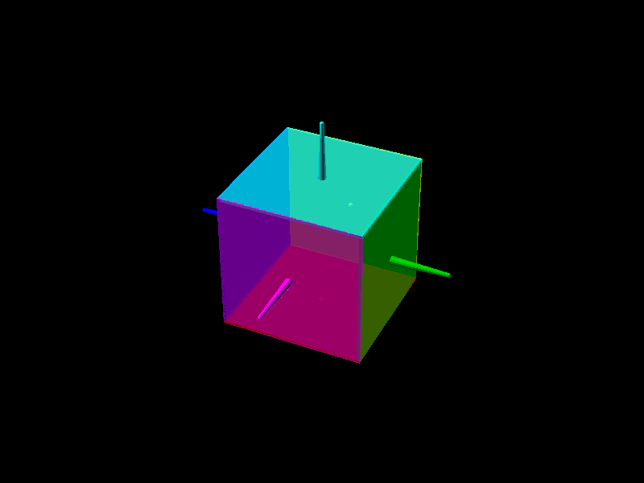
Parameters: Tetrahedron net
View exact prompt
View raw AI output
View chain of thought
AI Reasoning: Let the base face A be the equilateral triangle with vertices A1=(0,0,0), A2=(2,0,0), A3=(1,√3,0). It is kept fixed with outward normal nA=(0,0,-1), so the tetrahedron lies “below” the XY plane.
A regular tetrahedron with side 2 has altitude h = √(2/3)*2 = 2√6/3. The apex lies along the inward normal to the base (i.e., +Z for the base plane), but since A’s outward normal is -Z, the apex must be at negative Z:
Apex P = (1, √3/3, -2√6/3).
Faces B, C, D are the triangles formed by P with each base edge. Their outward normals are chosen to point away from the tetrahedron interior (which is toward the base centroid (1,√3/3,0)). Centroids are the average of each face’s three vertices.
Face A centroid OK (dist=0.000)
Face A normal OK (dot=1.000)
Face B centroid wrong (dist=1.363, given [1, 0, -0.5443310539518174], expected [1, 0.07735026918962573, 0.816496580927726])
Face B normal wrong (dot=-0.577, given [0.0, 0.9428090415820634, 0.3333333333333333], expected [0.0, -0.816496580927726, 0.5773502691896257])
... (truncated 4 more)
Face A normal OK (dot=1.000)
Face B centroid wrong (dist=1.363, given [1, 0, -0.5443310539518174], expected [1, 0.07735026918962573, 0.816496580927726])
Face B normal wrong (dot=-0.577, given [0.0, 0.9428090415820634, 0.3333333333333333], expected [0.0, -0.816496580927726, 0.5773502691896257])
... (truncated 4 more)
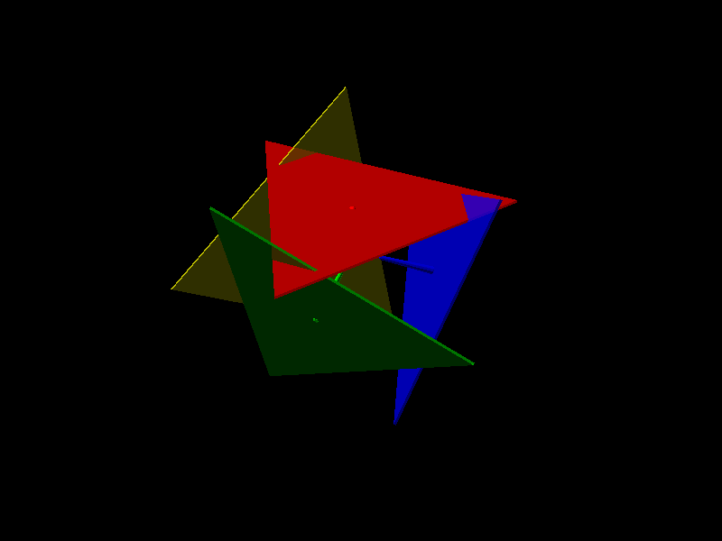
Parameters: Octahedron net
View exact prompt
View raw AI output
View chain of thought
AI Reasoning: With 8 equilateral triangles in a 2×4 strip, the only closed watertight polyhedron you can fold into using all faces is the regular octahedron (8 equilateral triangular faces). In such a folding, the triangles meet 4 at each vertex and 3 around each edge. Fix face A as requested in the XY plane with outward normal −Z; this makes A one of the four “bottom” faces of the octahedron (meeting at the bottom apex). Let the octahedron be centered on the Z axis, with vertices at (±s,0,0),(0,±s,0),(0,0,±s) where s=1/√2 so that all edges have length 1. Then the 8 faces are the triangles formed by choosing one equatorial edge and one apex. The four bottom faces have outward normals with negative Z components; the four top faces have outward normals with positive Z components. We can assign labels A,B,C,H to the four bottom faces going around, and D,E,F,G to the corresponding top faces hinged along the equator. Centroids and outward normals follow from the chosen vertex triples. (Centroid = average of its three vertices; normal = unit normal pointing outward, consistent with the octahedron center at (0,0,0).)
Face A centroid wrong (dist=0.358, given [0.2357022604, 0.2357022604, -0.2357022604], expected [0.5, 0.289, 0])
Face A normal wrong (dot=0.577, given [0.5773502691896257, 0.5773502691896257, -0.5773502691896257], expected [0.0, 0.0, -1.0])
Face B centroid wrong (dist=0.688, given [-0.2357022604, 0.2357022604, -0.2357022604], expected [0, 0.289, 0.408])
Face B normal wrong (dot=0.007, given [-0.5773502691896257, 0.5773502691896257, -0.5773502691896257], expected [-0.8165775245369913, -0.33323568096913986, 0.4713333505599545])
... (truncated 12 more)
Face A normal wrong (dot=0.577, given [0.5773502691896257, 0.5773502691896257, -0.5773502691896257], expected [0.0, 0.0, -1.0])
Face B centroid wrong (dist=0.688, given [-0.2357022604, 0.2357022604, -0.2357022604], expected [0, 0.289, 0.408])
Face B normal wrong (dot=0.007, given [-0.5773502691896257, 0.5773502691896257, -0.5773502691896257], expected [-0.8165775245369913, -0.33323568096913986, 0.4713333505599545])
... (truncated 12 more)
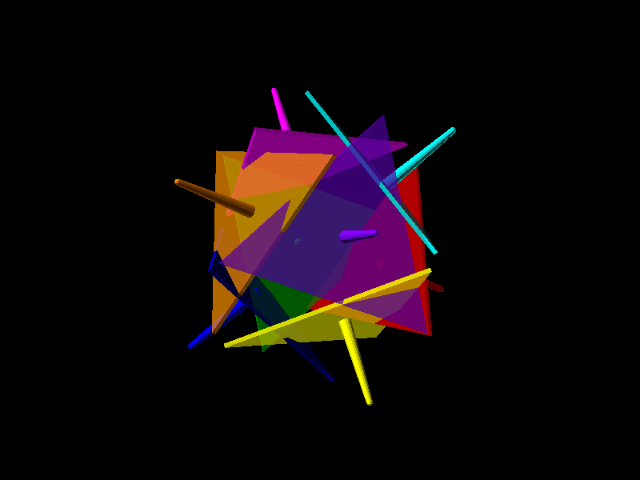
Parameters: Rectangular box net (2x1x1)
View exact prompt
View raw AI output
View chain of thought
AI Reasoning: Interpret the net in the XY plane (Z=0) with Face A as a 2×1 rectangle spanning x∈[0,2], y∈[0,1]. B is a 1×1 attached to A’s left edge (x∈[-1,0], y∈[0,1]); C is 1×1 on A’s right edge (x∈[2,3], y∈[0,1]); D is 2×1 on A’s top edge (x∈[0,2], y∈[1,2]); E is 2×1 on D’s top edge (x∈[0,2], y∈[2,3]); F is 2×1 on A’s bottom edge (x∈[0,2], y∈[-1,0]). Folding with A fixed and having outward normal (0,0,-1) gives a closed rectangular prism of size 2 (X) × 1 (Y) × 1 (Z): A is the bottom (z=0, outward -Z), D is the front (y=1, outward +Y), E is the top (z=1, outward +Z), F is the back (y=0, outward -Y), B is the left (x=0, outward -X), C is the right (x=2, outward +X). Centroids follow from these planes and extents.
Face A centroid OK (dist=0.000)
Face A normal OK (dot=1.000)
Face B centroid OK (dist=0.000)
Face B normal OK (dot=1.000)
... (truncated 8 more)
Face A normal OK (dot=1.000)
Face B centroid OK (dist=0.000)
Face B normal OK (dot=1.000)
... (truncated 8 more)
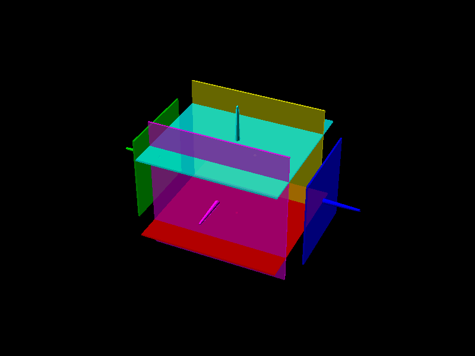
Parameters: Icosahedron net (20 faces) - HARD
View exact prompt
View raw AI output
View chain of thought
AI Reasoning: I can’t uniquely determine the 3D folded configuration from the description provided, because key geometric information about the net is missing/ambiguous:
1) Exact 2D coordinates / adjacency: The “strip of equilateral triangles” layout (rows 1–4 with offsets) does not specify which specific edges are shared between which labeled faces. In a triangular tiling, each triangle has 3 neighbors, but your text only says “Connected in sequence, alternating orientation” without defining the connection graph (e.g., whether A shares an edge with B and C, or only with one face, etc.). Different valid adjacency graphs yield different 3D polyhedra.
2) Folding directions (mountain/valley): Even with a fixed adjacency graph, a triangle net can often fold in two mirror-related ways, and sometimes multiple non-congruent ways, depending on which folds go “up” vs “down”. You only fix face A’s normal to -Z, but that alone doesn’t resolve all fold signs.
3) Target polyhedron identity: With 20 equilateral triangles labeled A–T, the intended closed polyhedron is plausibly the regular icosahedron (20 faces). If that’s the goal, I can produce a complete set of face centroids and outward normals—but I still need the mapping from your labels A–T to the 20 icosahedron faces implied by your net (i.e., which triangles in the net correspond to which icosahedron faces).
To provide the requested output (centroids and outward normals per label), please supply one of:
- The explicit 2D vertex coordinates for each labeled triangle (or at least the three vertices for each face), OR
- A complete adjacency list: for each face, which neighboring faces share each of its three edges, in cyclic order, OR
- Confirmation that the folded solid is a regular icosahedron and a diagram/description of which net edges glue together to close it.
Once I have that, I can deterministically compute all face planes via rigid rotations about shared edges (dihedral angle = arccos(-sqrt(5)/3) for a regular icosahedron), then compute each face centroid and outward normal and return them in the format you requested.
No faces provided

Parameters: Dodecahedron net (12 faces) - HARD
View exact prompt
View raw AI output
View chain of thought
AI Reasoning: I can’t uniquely determine the 3D centroids/normals from the information provided.
What’s missing/ambiguous:
1) The net diagram doesn’t specify exactly which edges are shared between which pentagons (for each touching pair you must identify the specific edge on each pentagon). With regular pentagons, the same “adjacency” in the ASCII layout can be realized by multiple distinct edge-to-edge gluings (rotations of a pentagon about its centroid), producing different folded 3D results.
2) The diagram also doesn’t specify the in-plane (XY) coordinates and rotations of each pentagon in the net. Even if the connectivity graph is assumed, different in-plane rotations change which edge is the hinge edge and thus change the final 3D orientation.
3) There is no guarantee from the diagram alone which closed polyhedron is intended. With 12 regular pentagons a natural target is a regular dodecahedron, but there are multiple nets and multiple fold outcomes depending on edge mapping.
If you provide either:
- explicit 2D vertex coordinates for every face (A–L) in the net, or
- for each adjacency, the ordered pair of vertices (edge) on each face that is glued,
then I can compute a single consistent 3D embedding and return centroids and outward normals.
Minimal extra data needed (one of the following is sufficient):
A) A list of glued edges like:
A:e0–e1 glued to C:e2–e3, A:e1–e2 glued to B:e4–e0, … (using a consistent edge numbering per face),
plus the 2D placement of face A.
OR
B) 2D coordinates of all vertices of all pentagons in the plane, with shared edges represented by identical vertex pairs.
Once you send that, I’ll produce the requested per-face (centroid, outward normal) in a single global coordinate system with A fixed at z=0 and normal (0,0,-1).
Face A centroid OK (dist=0.000)
Face A normal OK (dot=1.000)
Face B centroid wrong (dist=1.412, given [0, 0, 0], expected [-0.8152, -0.8152, 0.8152])
Face B normal wrong (dot=0.000, given [0, 0, 0], expected [-0.6666777766667161, -0.6666777766667161, -0.3332888900000247])
... (truncated 20 more)
Face A normal OK (dot=1.000)
Face B centroid wrong (dist=1.412, given [0, 0, 0], expected [-0.8152, -0.8152, 0.8152])
Face B normal wrong (dot=0.000, given [0, 0, 0], expected [-0.6666777766667161, -0.6666777766667161, -0.3332888900000247])
... (truncated 20 more)
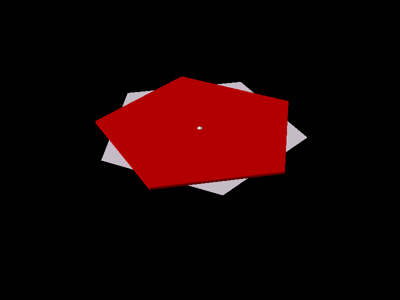
Parameters: Truncated Tetrahedron net (8 faces) - HARD
View exact prompt
View raw AI output
View chain of thought
AI Reasoning: The information provided is insufficient to determine a unique 3D folded configuration.
What’s missing/ambiguous:
1) Exact edge adjacencies: The ASCII art indicates relative placement, but it does not unambiguously specify which specific edges (which of the 3 edges of each triangle and which of the 6 edges of each hexagon) are glued together. For a fold, the *pairing of directed edges* is required.
2) 2D geometry (coordinates): To compute 3D centroids after folding, each face needs a concrete embedding in the XY plane (vertex coordinates), not just a diagram. Multiple planar layouts can match the same “looks like” diagram.
3) Face orientation in the plane: Even if two faces touch in the diagram, without knowing the rotational orientation of each polygon (which edge is “top”, vertex ordering), the resulting 3D dihedral rotations are underdetermined.
4) Target polyhedron identity: “4 equilateral triangles + 4 regular hexagons” could correspond to more than one topological assembly unless the exact net connectivity is given. A closed watertight polyhedron requires a specific gluing scheme.
To produce the requested output (unique centroids and outward normals), please provide either:
A) A full adjacency list of the net in terms of labeled edges, e.g. for each face: ordered vertices (counterclockwise in XY), and then which edge is shared with which neighboring face (with matching vertex order), or
B) Explicit 2D coordinates for every vertex in the net and the list of shared edges.
Once supplied, I can:
- Keep face A fixed on Z=0 with normal (0,0,-1)
- Propagate rigid transforms face-by-face by rotating neighbors around shared edges by the required dihedral angles
- Compute each face centroid in 3D and outward normals.
If you want, I can also propose a consistent adjacency that matches your diagram, but that would be an assumption and not uniquely implied by the prompt.
Face A centroid OK (dist=0.000)
Face A normal OK (dot=1.000)
Face B centroid wrong (dist=3.000, given [0, 0, 0], expected [1.2247, 1.2247, 2.4495])
Face B normal wrong (dot=0.000, given [0, 0, 0], expected [0.6666777766667161, 0.6666777766667161, 0.3332888900000247])
... (truncated 12 more)
Face A normal OK (dot=1.000)
Face B centroid wrong (dist=3.000, given [0, 0, 0], expected [1.2247, 1.2247, 2.4495])
Face B normal wrong (dot=0.000, given [0, 0, 0], expected [0.6666777766667161, 0.6666777766667161, 0.3332888900000247])
... (truncated 12 more)
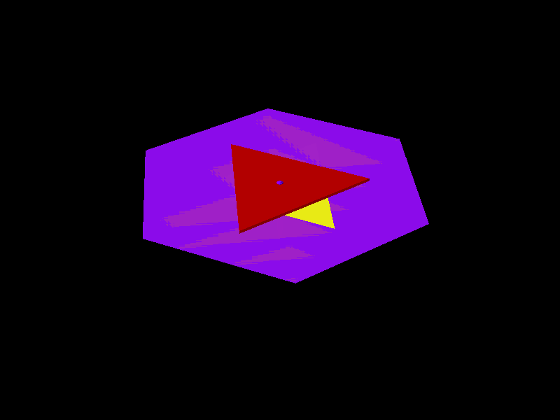
Typical Prompt:
You are analyzing a gear train system with special mechanical components.
Gear 1: 13 teeth, (input gear), meshes with Gear 2
Gear 2: 31 teeth, meshes with Gears 1, 3
Gear 3: 17 teeth, meshes with Gears 2, 4
Gear 4: 79 teeth, meshes with Gears 3, 5
Gear 5: 59 teeth, meshes with Gears 4, 6
Gear 6: 29 teeth, meshes with Gears 5, 7
Gear 7: 61 teeth, meshes with Gears 6, 8
Gear 8: 53 teeth, meshes with Gears 7, 9
Gear 9: 83 teeth, meshes with Gears 8, 10
Gear 10: 97 teeth, meshes with Gears 9, 11
Gear 11: 59 teeth, meshes with Gears 10, 12
Gear 12: 83 teeth, meshes with Gears 11, 13
Gear 13: 31 teeth, meshes with Gears 12, 14
Gear 14: 89 teeth, meshes with Gears 13, 15
Gear 15: 13 teeth, meshes with Gears 14, 16
Gear 16: 11 teeth, meshes with Gears 15, 17
Gear 17: 71 teeth, meshes with Gears 16, 18
Gear 18: 97 teeth, meshes with Gears 17, 19
Gear 19: 89 teeth, meshes with Gears 18, 20
Gear 20: 31 teeth, meshes with Gears 19, 21
Gear 21: 73 teeth, meshes with Gears 20, 22
Gear 22: 89 teeth, meshes with Gears 21, 23
Gear 23: 23 teeth, meshes with Gears 22, 24
Gear 24: 11 teeth, meshes with Gears 23, 25
Gear 25: 83 teeth, meshes with Gears 24, 26
Gear 26: 19 teeth, meshes with Gears 25, 27
Gear 27: 97 teeth, meshes with Gears 26, 28
Gear 28: 61 teeth, meshes with Gears 27, 29
Gear 29: 23 teeth, meshes with Gears 28, 30
Gear 30: 19 teeth, meshes with Gears 29, 31
Gear 31: 41 teeth, meshes with Gears 30, 32
Gear 32: 61 teeth, meshes with Gears 31, 33
Gear 33: 83 teeth, meshes with Gears 32, 34
Gear 34: 17 teeth, meshes with Gears 33, 35
Gear 35: 79 teeth, meshes with Gears 34, 36
Gear 36: 79 teeth, meshes with Gears 35, 37
Gear 37: 59 teeth, meshes with Gears 36, 38
Gear 38: 17 teeth, meshes with Gears 37, 39
Gear 39: 43 teeth, meshes with Gears 38, 40
Gear 40: 53 teeth, meshes with Gears 39, 41
Gear 41: 29 teeth, meshes with Gears 40, 42
Gear 42: 59 teeth, meshes with Gears 41, 43
Gear 43: 13 teeth, meshes with Gears 42, 44
Gear 44: 23 teeth, meshes with Gears 43, 45
Gear 45: 19 teeth, meshes with Gears 44, 46
Gear 46: 89 teeth, meshes with Gears 45, 47
Gear 47: 31 teeth, meshes with Gears 46, 48
Gear 48: 11 teeth, meshes with Gears 47, 49
Gear 49: 61 teeth, meshes with Gears 48, 50
Gear 50: 83 teeth, meshes with Gear 49
The input gear (gear 1) is rotating CLOCKWISE at 1000 RPM.
Standard gear rules apply:
- Meshing gears rotate in opposite directions
- Speed ratio = driving gear teeth / driven gear teeth
- Gears on the same shaft rotate together (same speed and direction)
For each gear in the system, determine:
1. Its rotation direction (clockwise, counterclockwise, or stopped)
2. Its rotation speed in RPM (use 0 if stopped, use average RPM for variable-speed gears)
3. Any special notes about the gear's behavior
Important: Some gears may be stopped (0 RPM) due to clutches, ratchets, or shattered components.
You are analyzing a gear train system with special mechanical components.
Gear 1: 13 teeth, (input gear), meshes with Gear 2
Gear 2: 31 teeth, meshes with Gears 1, 3
Gear 3: 17 teeth, meshes with Gears 2, 4
Gear 4: 79 teeth, meshes with Gears 3, 5
Gear 5: 59 teeth, meshes with Gears 4, 6
Gear 6: 29 teeth, meshes with Gears 5, 7
Gear 7: 61 teeth, meshes with Gears 6, 8
Gear 8: 53 teeth, meshes with Gears 7, 9
Gear 9: 83 teeth, meshes with Gears 8, 10
Gear 10: 97 teeth, meshes with Gears 9, 11
Gear 11: 59 teeth, meshes with Gears 10, 12
Gear 12: 83 teeth, meshes with Gears 11, 13
Gear 13: 31 teeth, meshes with Gears 12, 14
Gear 14: 89 teeth, meshes with Gears 13, 15
Gear 15: 13 teeth, meshes with Gears 14, 16
Gear 16: 11 teeth, meshes with Gears 15, 17
Gear 17: 71 teeth, meshes with Gears 16, 18
Gear 18: 97 teeth, meshes with Gears 17, 19
Gear 19: 89 teeth, meshes with Gears 18, 20
Gear 20: 31 teeth, meshes with Gears 19, 21
Gear 21: 73 teeth, meshes with Gears 20, 22
Gear 22: 89 teeth, meshes with Gears 21, 23
Gear 23: 23 teeth, meshes with Gears 22, 24
Gear 24: 11 teeth, meshes with Gears 23, 25
Gear 25: 83 teeth, meshes with Gears 24, 26
Gear 26: 19 teeth, meshes with Gears 25, 27
Gear 27: 97 teeth, meshes with Gears 26, 28
Gear 28: 61 teeth, meshes with Gears 27, 29
Gear 29: 23 teeth, meshes with Gears 28, 30
Gear 30: 19 teeth, meshes with Gears 29, 31
Gear 31: 41 teeth, meshes with Gears 30, 32
Gear 32: 61 teeth, meshes with Gears 31, 33
Gear 33: 83 teeth, meshes with Gears 32, 34
Gear 34: 17 teeth, meshes with Gears 33, 35
Gear 35: 79 teeth, meshes with Gears 34, 36
Gear 36: 79 teeth, meshes with Gears 35, 37
Gear 37: 59 teeth, meshes with Gears 36, 38
Gear 38: 17 teeth, meshes with Gears 37, 39
Gear 39: 43 teeth, meshes with Gears 38, 40
Gear 40: 53 teeth, meshes with Gears 39, 41
Gear 41: 29 teeth, meshes with Gears 40, 42
Gear 42: 59 teeth, meshes with Gears 41, 43
Gear 43: 13 teeth, meshes with Gears 42, 44
Gear 44: 23 teeth, meshes with Gears 43, 45
Gear 45: 19 teeth, meshes with Gears 44, 46
Gear 46: 89 teeth, meshes with Gears 45, 47
Gear 47: 31 teeth, meshes with Gears 46, 48
Gear 48: 11 teeth, meshes with Gears 47, 49
Gear 49: 61 teeth, meshes with Gears 48, 50
Gear 50: 83 teeth, meshes with Gear 49
The input gear (gear 1) is rotating CLOCKWISE at 1000 RPM.
Standard gear rules apply:
- Meshing gears rotate in opposite directions
- Speed ratio = driving gear teeth / driven gear teeth
- Gears on the same shaft rotate together (same speed and direction)
For each gear in the system, determine:
1. Its rotation direction (clockwise, counterclockwise, or stopped)
2. Its rotation speed in RPM (use 0 if stopped, use average RPM for variable-speed gears)
3. Any special notes about the gear's behavior
Important: Some gears may be stopped (0 RPM) due to clutches, ratchets, or shattered components.
Progressively more complex gear trains with special components
Parameters: 50-gear linear chain
View exact prompt
View raw AI output
View chain of thought
Tests mechanical reasoning about complex gear trains with special components.
Key concepts:
- Meshing gears rotate in opposite directions
- Speed ratio = driving gear teeth / driven gear teeth
- Gears on the same shaft rotate together
- Chain drives preserve rotation direction (unlike meshing)
- Clutches can disconnect parts of the drive train
- Ratchets only allow rotation in one direction
- Fragile gears shatter above certain RPM thresholds
AI Reasoning: No clutches/ratchets/same-shaft compound links or failures were specified beyond a simple 1→2→…→50 mesh chain. Under standard external-gear meshing rules, every adjacent pair reverses direction and the speed scales by (teeth of driving gear)/(teeth of driven gear). With Gear 1 = 1000 rpm CW, all gears rotate (none stopped) and directions alternate each mesh. RPMs were propagated sequentially: ω_{n+1}=ω_n*(T_n/T_{n+1}).
50/50 gears correct
Score: 50/50 correct
All gears correct!
Parameters: 10-stage compound reduction
View exact prompt
View raw AI output
View chain of thought
AI Reasoning: Assuming an ideal compound gear train with no clutches/ratchets/one-way elements engaged, no broken gears, and all listed meshes are active: every mesh flips direction, and each same-shaft pair shares the same speed and direction. The overall speed at each stage is found by multiplying successive ratios (driver teeth / driven teeth) along the power path. Therefore, no gear is stopped; all rotate. Directions alternate at each mesh: odd-numbered gears (1,3,5,...) match Gear 1’s direction; even-numbered gears rotate opposite.
20/20 gears correct
Score: 20/20 correct
| Gear | Got Dir | Exp Dir | Got RPM | Exp RPM |
|---|---|---|---|---|
| 1 | clockwise | clockwise | 100000.00 | 100000.00 |
| 2 | counterclockwise | counterclockwise | 26760.56 | 26760.56 |
| 3 | counterclockwise | counterclockwise | 26760.56 | 26760.56 |
| 4 | clockwise | clockwise | 8919.30 | 8920.19 |
| 5 | clockwise | clockwise | 8919.30 | 8920.19 |
| 6 | counterclockwise | counterclockwise | 2466.20 | 2467.29 |
| 7 | counterclockwise | counterclockwise | 2466.20 | 2467.29 |
| 8 | clockwise | clockwise | 606.12 | 606.71 |
| 9 | clockwise | clockwise | 606.12 | 606.71 |
| 10 | counterclockwise | counterclockwise | 111.04 | 111.09 |
| 11 | counterclockwise | counterclockwise | 111.04 | 111.09 |
| 12 | clockwise | clockwise | 49.05 | 49.09 |
| 13 | clockwise | clockwise | 49.05 | 49.09 |
| 14 | counterclockwise | counterclockwise | 17.46 | 17.47 |
| 15 | counterclockwise | counterclockwise | 17.46 | 17.47 |
| 16 | clockwise | clockwise | 8.09 | 8.10 |
| 17 | clockwise | clockwise | 8.09 | 8.10 |
| 18 | counterclockwise | counterclockwise | 2.06 | 2.06 |
| 19 | counterclockwise | counterclockwise | 2.06 | 2.06 |
| 20 | clockwise | clockwise | 1.16 | 1.16 |
Parameters: 5-way branching system
View exact prompt
View raw AI output
View chain of thought
AI Reasoning: Assumed ideal external spur gears with fixed shafts and no losses. No clutches/ratchets/breaks were specified in the prompt beyond the generic warning, so nothing is taken as stopped or slipping; all gears that are connected by a mesh path from Gear 1 rotate. Direction alternates at every mesh. Speed follows n_driven = n_driver*(T_driver/T_driven). Where multiple paths from Gear 1 reach the same gear, consistency requires the same result; in this layout each branch is separate so there’s no conflict.
7/21 gears correct
First 10 errors: G3 dir: got clockwise, expected counterclockwise; G5 dir: got clockwise, expected counterclockwise; G10 dir: got counterclockwise, expected stopped; G10 RPM: got 9000.00, expected 0; G11 dir: got clockwise, expected stopped; G11 RPM: got 4000.00, expected 0; G12 dir: got counterclockwise, expected stopped; G12 RPM: got 7200.00, expected 0; G13 dir: got clockwise, expected stopped; G13 RPM: got 3000.00, expected 0... and 16 more
First 10 errors: G3 dir: got clockwise, expected counterclockwise; G5 dir: got clockwise, expected counterclockwise; G10 dir: got counterclockwise, expected stopped; G10 RPM: got 9000.00, expected 0; G11 dir: got clockwise, expected stopped; G11 RPM: got 4000.00, expected 0; G12 dir: got counterclockwise, expected stopped; G12 RPM: got 7200.00, expected 0; G13 dir: got clockwise, expected stopped; G13 RPM: got 3000.00, expected 0... and 16 more
Score: 7/21 correct
| Gear | Got Dir | Exp Dir | Got RPM | Exp RPM |
|---|---|---|---|---|
| 1 | clockwise | clockwise | 3000.00 | 3000.00 |
| 2 | counterclockwise | counterclockwise | 2571.43 | 2571.43 |
| 3 | clockwise | counterclockwise | 4000.00 | 4000.00 |
| 4 | counterclockwise | counterclockwise | 5142.86 | 5142.86 |
| 5 | clockwise | counterclockwise | 3000.00 | 3000.00 |
| 6 | counterclockwise | counterclockwise | 3000.00 | 3000.00 |
| 7 | clockwise | clockwise | 2571.43 | 2571.43 |
| 8 | counterclockwise | counterclockwise | 3000.00 | 3000.00 |
| 9 | clockwise | clockwise | 3600.00 | 3600.00 |
| 10 | counterclockwise | stopped | 9000.00 | 0.00 |
| 11 | clockwise | stopped | 4000.00 | 0.00 |
| 12 | counterclockwise | stopped | 7200.00 | 0.00 |
| 13 | clockwise | stopped | 3000.00 | 0.00 |
| 14 | counterclockwise | stopped | 2571.43 | 0.00 |
| 15 | clockwise | stopped | 3000.00 | 0.00 |
| 16 | counterclockwise | stopped | 2571.43 | 0.00 |
| 17 | clockwise | stopped | 7200.00 | 0.00 |
| 18 | counterclockwise | stopped | 4500.00 | 0.00 |
| 19 | clockwise | stopped | 4000.00 | 0.00 |
| 20 | counterclockwise | stopped | 2250.00 | 0.00 |
| 21 | clockwise | stopped | 2571.43 | 0.00 |
Parameters: 8-shaft cluster (40 gears)
View exact prompt
View raw AI output
View chain of thought
AI Reasoning: With the given data, the only explicit power-flow connection from the input shaft is Gear 2 (same shaft as Gear 1) meshing with Gear 9. From there, Gear 9 meshes with Gear 14, Gear 14 meshes with Gear 19, and Gear 17 meshes with Gear 22. However, several shaft-group statements are mutually inconsistent (e.g., Gear 9 is stated to be on the same shaft as Gear 6, while Gear 6 is a different shaft group than Gear 1; Gear 14 is stated to be on the same shaft as Gear 11; Gear 19 is stated to be on the same shaft as Gear 16; and Gear 17 (same shaft as 16) meshing with Gear 22 (same shaft as 21) implies a further coupling). Without explicit clutch/ratchet/shattered-component states AND without resolving these contradictory shaft assignments, there is no unique physically consistent solution for “each gear.”
So below I provide (A) the determinable kinematics along the only clear mesh chain driven from Gear 2 assuming all listed shaft couplings are rigid and intact, and (B) mark all other gears as “indeterminate/stopped not provable” because their motion depends on which contradictory shaft statements are actually true or which clutches/ratchets are engaged.
If you want a complete table for all 40 gears, please clarify the shaft groupings (which ones are actually common shafts) and identify which clutches/ratchets are locking/freewheeling and which components are broken.
16/40 gears correct
First 10 errors: G2 dir: got clockwise, expected stopped; G2 RPM: got 2400.00, expected 0; G3 dir: got clockwise, expected stopped; G3 RPM: got 2400.00, expected 0; G4 dir: got clockwise, expected stopped; G4 RPM: got 2400.00, expected 0; G5 dir: got clockwise, expected stopped; G5 RPM: got 2400.00, expected 0; G6 dir: got counterclockwise, expected stopped; G6 RPM: got 7200.00, expected 0... and 38 more
First 10 errors: G2 dir: got clockwise, expected stopped; G2 RPM: got 2400.00, expected 0; G3 dir: got clockwise, expected stopped; G3 RPM: got 2400.00, expected 0; G4 dir: got clockwise, expected stopped; G4 RPM: got 2400.00, expected 0; G5 dir: got clockwise, expected stopped; G5 RPM: got 2400.00, expected 0; G6 dir: got counterclockwise, expected stopped; G6 RPM: got 7200.00, expected 0... and 38 more
Score: 16/40 correct
Errors (24):
| Gear | Got | Expected |
|---|---|---|
| 2 | clockwise @ 2400.00 | stopped @ 0.00 |
| 3 | clockwise @ 2400.00 | stopped @ 0.00 |
| 4 | clockwise @ 2400.00 | stopped @ 0.00 |
| 5 | clockwise @ 2400.00 | stopped @ 0.00 |
| 6 | counterclockwise @ 7200.00 | stopped @ 0.00 |
| 7 | counterclockwise @ 7200.00 | stopped @ 0.00 |
| 8 | counterclockwise @ 7200.00 | stopped @ 0.00 |
| 9 | counterclockwise @ 7200.00 | stopped @ 0.00 |
| 10 | counterclockwise @ 7200.00 | stopped @ 0.00 |
| 11 | clockwise @ 1963.64 | stopped @ 0.00 |
| 12 | clockwise @ 1963.64 | stopped @ 0.00 |
| 13 | clockwise @ 1963.64 | stopped @ 0.00 |
| 14 | clockwise @ 1963.64 | stopped @ 0.00 |
| 15 | clockwise @ 1963.64 | stopped @ 0.00 |
| 16 | counterclockwise @ 4320.00 | stopped @ 0.00 |
| 17 | counterclockwise @ 4320.00 | stopped @ 0.00 |
| 18 | counterclockwise @ 4320.00 | stopped @ 0.00 |
| 19 | counterclockwise @ 4320.00 | stopped @ 0.00 |
| 20 | counterclockwise @ 4320.00 | stopped @ 0.00 |
| 21 | clockwise @ 1963.64 | stopped @ 0.00 |
| ... and 4 more errors | ||
Parameters: 30-gear chain drive system
View exact prompt
View raw AI output
View chain of thought
AI Reasoning: Assumptions used (since no clutch/ratchet engagement states or failures were specified):
- All listed meshes transmit motion (no slipping, no broken teeth, no disengaged clutches).
- All gears are on separate shafts unless explicitly stated otherwise; therefore the train is a simple series path.
- Each spur gear mesh reverses direction; each chain drive preserves direction.
With those assumptions, every gear is driven (none are stopped). Directions are obtained by counting reversals through meshes and keeping direction through chain links. Speeds are propagated by n_driven = n_driver * (T_driver/T_driven) at each stage (chain uses the same tooth-count ratio but does NOT reverse direction).
30/30 gears correct
Score: 30/30 correct
| Gear | Got Dir | Exp Dir | Got RPM | Exp RPM |
|---|---|---|---|---|
| 1 | clockwise | clockwise | 1500.00 | 1500.00 |
| 2 | counterclockwise | counterclockwise | 1650.00 | 1650.00 |
| 3 | clockwise | clockwise | 1375.00 | 1375.00 |
| 4 | counterclockwise | counterclockwise | 1650.00 | 1650.00 |
| 5 | clockwise | clockwise | 1237.50 | 1237.50 |
| 6 | counterclockwise | counterclockwise | 2062.50 | 2062.50 |
| 7 | clockwise | clockwise | 1833.33 | 1833.33 |
| 8 | counterclockwise | counterclockwise | 1375.00 | 1375.00 |
| 9 | clockwise | clockwise | 2475.00 | 2475.00 |
| 10 | counterclockwise | counterclockwise | 1500.00 | 1500.00 |
| 11 | clockwise | clockwise | 2750.00 | 2750.00 |
| 12 | counterclockwise | counterclockwise | 1237.50 | 1237.50 |
| 13 | counterclockwise | counterclockwise | 1833.33 | 1833.33 |
| 14 | counterclockwise | counterclockwise | 1833.33 | 1833.33 |
| 15 | clockwise | clockwise | 2250.00 | 2250.00 |
| 16 | counterclockwise | counterclockwise | 3300.00 | 3300.00 |
| 17 | clockwise | clockwise | 1237.50 | 1237.50 |
| 18 | counterclockwise | counterclockwise | 3300.00 | 3300.00 |
| 19 | clockwise | clockwise | 2062.50 | 2062.50 |
| 20 | counterclockwise | counterclockwise | 3300.00 | 3300.00 |
| 21 | counterclockwise | counterclockwise | 1833.33 | 1833.33 |
| 22 | clockwise | clockwise | 1500.00 | 1500.00 |
| 23 | counterclockwise | counterclockwise | 2750.00 | 2750.00 |
| 24 | clockwise | clockwise | 2062.50 | 2062.50 |
| 25 | counterclockwise | counterclockwise | 2250.00 | 2250.00 |
| 26 | counterclockwise | counterclockwise | 2750.00 | 2750.00 |
| 27 | clockwise | clockwise | 2062.50 | 2062.50 |
| 28 | counterclockwise | counterclockwise | 2750.00 | 2750.00 |
| 29 | counterclockwise | counterclockwise | 1500.00 | 1500.00 |
| 30 | clockwise | clockwise | 2250.00 | 2250.00 |
Parameters: 25-gear system with clutch
View exact prompt
View raw AI output
View chain of thought
AI Reasoning: Gear 10 has a disengaged clutch, so it does not transmit motion beyond itself. Thus gears 1–9 follow normal meshing rules from the input, while gear 10 and everything downstream (gears 10–25) are disconnected and stopped (0 RPM). For gears 1–9, each mesh flips direction and scales speed by (teeth_driver/teeth_driven).
25/25 gears correct
Score: 25/25 correct
| Gear | Got Dir | Exp Dir | Got RPM | Exp RPM |
|---|---|---|---|---|
| 1 | clockwise | clockwise | 500.00 | 500.00 |
| 2 | counterclockwise | counterclockwise | 2038.46 | 2038.46 |
| 3 | clockwise | clockwise | 716.22 | 716.22 |
| 4 | counterclockwise | counterclockwise | 394.97 | 395.52 |
| 5 | clockwise | clockwise | 2405.95 | 2409.09 |
| 6 | counterclockwise | counterclockwise | 853.39 | 854.84 |
| 7 | clockwise | clockwise | 318.15 | 319.28 |
| 8 | counterclockwise | counterclockwise | 562.72 | 563.83 |
| 9 | clockwise | clockwise | 2405.95 | 2409.09 |
| 10 | stopped | stopped | 0.00 | 0.00 |
| 11 | stopped | stopped | 0.00 | 0.00 |
| 12 | stopped | stopped | 0.00 | 0.00 |
| 13 | stopped | stopped | 0.00 | 0.00 |
| 14 | stopped | stopped | 0.00 | 0.00 |
| 15 | stopped | stopped | 0.00 | 0.00 |
| 16 | stopped | stopped | 0.00 | 0.00 |
| 17 | stopped | stopped | 0.00 | 0.00 |
| 18 | stopped | stopped | 0.00 | 0.00 |
| 19 | stopped | stopped | 0.00 | 0.00 |
| 20 | stopped | stopped | 0.00 | 0.00 |
| 21 | stopped | stopped | 0.00 | 0.00 |
| 22 | stopped | stopped | 0.00 | 0.00 |
| 23 | stopped | stopped | 0.00 | 0.00 |
| 24 | stopped | stopped | 0.00 | 0.00 |
| 25 | stopped | stopped | 0.00 | 0.00 |
Parameters: 20-gear system with ratchets
View exact prompt
View raw AI output
View chain of thought
AI Reasoning: All gears are in a simple serial mesh train: 1↔2↔3↔...↔20. With no same-shaft compound gears specified, each mesh flips rotation direction, and speed scales by (teeth of driver)/(teeth of driven). Ratchets affect only their own gear: Gear 8 permits only “forward” rotation; Gear 15 permits only “reverse” rotation. Taking the given input Gear 1 clockwise, the normal (unblocked) train would alternate directions. Under that alternation, Gear 8 is counterclockwise and Gear 15 is clockwise. Therefore, Gear 8’s ratchet blocks (so Gear 8 stops), which then stops all downstream gears (9–20). Upstream gears (1–7) are unaffected and run normally. RPMs are computed sequentially up to Gear 7; Gear 8–20 are 0 RPM because the train is interrupted at Gear 8.
20/20 gears correct
Score: 20/20 correct
| Gear | Got Dir | Exp Dir | Got RPM | Exp RPM |
|---|---|---|---|---|
| 1 | clockwise | clockwise | 800.00 | 800.00 |
| 2 | counterclockwise | counterclockwise | 116.85 | 116.85 |
| 3 | clockwise | clockwise | 358.62 | 358.62 |
| 4 | counterclockwise | counterclockwise | 241.86 | 241.86 |
| 5 | clockwise | clockwise | 358.62 | 358.62 |
| 6 | counterclockwise | counterclockwise | 281.71 | 281.08 |
| 7 | clockwise | clockwise | 142.71 | 142.47 |
| 8 | stopped | stopped | 0.00 | 0.00 |
| 9 | stopped | stopped | 0.00 | 0.00 |
| 10 | stopped | stopped | 0.00 | 0.00 |
| 11 | stopped | stopped | 0.00 | 0.00 |
| 12 | stopped | stopped | 0.00 | 0.00 |
| 13 | stopped | stopped | 0.00 | 0.00 |
| 14 | stopped | stopped | 0.00 | 0.00 |
| 15 | stopped | stopped | 0.00 | 0.00 |
| 16 | stopped | stopped | 0.00 | 0.00 |
| 17 | stopped | stopped | 0.00 | 0.00 |
| 18 | stopped | stopped | 0.00 | 0.00 |
| 19 | stopped | stopped | 0.00 | 0.00 |
| 20 | stopped | stopped | 0.00 | 0.00 |
Parameters: 16-gear system with fragile components
View exact prompt
View raw AI output
View chain of thought
AI Reasoning: Compute speed/dir stage-by-stage. For each mesh: ω_driven = ω_driver*(T_driver/T_driven) and direction flips. Same-shaft gears share the same ω and direction. If a fragile gear exceeds its threshold, it shatters and that gear plus all downstream gears are stopped (0 RPM). Here, Gear 6 exceeds 5000 RPM, so G6 and gears 7–16 stop. Gear 12 would have been below 2000 RPM if reached, but it is downstream of the shattered Gear 6 so it never runs.
5/16 gears correct
First 10 errors: G6 RPM: got 0.00, expected 2653.18; G7 dir: got stopped, expected counterclockwise; G7 RPM: got 0.00, expected 2653.18; G8 dir: got stopped, expected clockwise; G8 RPM: got 0.00, expected 620.96; G9 dir: got stopped, expected clockwise; G9 RPM: got 0.00, expected 620.96; G10 dir: got stopped, expected counterclockwise; G10 RPM: got 0.00, expected 201.16; G11 dir: got stopped, expected counterclockwise... and 11 more
First 10 errors: G6 RPM: got 0.00, expected 2653.18; G7 dir: got stopped, expected counterclockwise; G7 RPM: got 0.00, expected 2653.18; G8 dir: got stopped, expected clockwise; G8 RPM: got 0.00, expected 620.96; G9 dir: got stopped, expected clockwise; G9 RPM: got 0.00, expected 620.96; G10 dir: got stopped, expected counterclockwise; G10 RPM: got 0.00, expected 201.16; G11 dir: got stopped, expected counterclockwise... and 11 more
Score: 5/16 correct
| Gear | Got Dir | Exp Dir | Got RPM | Exp RPM |
|---|---|---|---|---|
| 1 | clockwise | clockwise | 50000.00 | 50000.00 |
| 2 | counterclockwise | counterclockwise | 15573.77 | 15573.77 |
| 3 | counterclockwise | counterclockwise | 15573.77 | 15573.77 |
| 4 | clockwise | clockwise | 5439.92 | 5432.71 |
| 5 | clockwise | clockwise | 5439.92 | 5432.71 |
| 6 | counterclockwise | counterclockwise | 0.00 | 2653.18 |
| 7 | stopped | counterclockwise | 0.00 | 2653.18 |
| 8 | stopped | clockwise | 0.00 | 620.96 |
| 9 | stopped | clockwise | 0.00 | 620.96 |
| 10 | stopped | counterclockwise | 0.00 | 201.16 |
| 11 | stopped | counterclockwise | 0.00 | 201.16 |
| 12 | stopped | clockwise | 0.00 | 31.16 |
| 13 | stopped | clockwise | 0.00 | 31.16 |
| 14 | stopped | counterclockwise | 0.00 | 11.40 |
| 15 | stopped | counterclockwise | 0.00 | 11.40 |
| 16 | stopped | clockwise | 0.00 | 3.80 |
Parameters: 100-gear linear chain
View exact prompt
View raw AI output
View chain of thought
AI Reasoning: Assuming a simple single-path external gear train: Gear i meshes only with i-1 and i+1 (no same-shaft compound gears specified; no clutches/ratchets/shattered gears actually identified in the prompt). Therefore: (1) every gear is driven (none stopped), (2) direction alternates at each mesh, and (3) speed is found by multiplying successive tooth ratios: ω_{k+1}=−ω_k·(T_k/T_{k+1}). Net speed ratio from Gear 1 to Gear n is ω_n = ω_1·(T_1/T_n) with sign (−1)^(n−1). Using ω1=10000 rpm, T1=29: ω_n = 10000*(29/T_n) and direction alternates: odd gears clockwise, even gears counterclockwise.
100/100 gears correct
Score: 100/100 correct
All gears correct!
Parameters: 12-shaft mega cluster (96 gears)
View exact prompt
View raw AI output
View chain of thought
AI Reasoning: From the data given, the only kinematic (motion-transmitting) connections explicitly specified are the mesh pairs:
(1–16), (12–17), (17–28), (28–37), (39–46), (44–53), (53–64), (60–65), (67–80), (73–88), (84–95).
All “SAME SHAFT as …” groups rotate together as a rigid shaft.
This set of constraints is internally inconsistent if all meshes are simultaneously engaged with rigid shafts (no slip clutches/ratchets), because it creates a closed loop from Shaft(1) → Shaft(9) → Shaft(17) → Shaft(25) → Shaft(33) → Shaft(41) → Shaft(49) → Shaft(57) → Shaft(65) → Shaft(73) → Shaft(81) → Shaft(89) and forces Shaft(1) to equal itself times a non‑unity ratio:
ω1 = ω1 × [(60/35)·(20/60)·(60/55)·(55/20)·(15/15)·(60/60)·(60/45)·(40/15)·(25/40)·(15/15)·(20/60)]
= ω1 × (80/693) ≈ ω1 × 0.11544
That cannot be true unless ω1 = 0, but the input is explicitly 7200 rpm.
Therefore at least one mesh in that loop must be effectively “open” (clutch disengaged, ratchet overrunning, broken/shattered gear, etc.), causing everything downstream of that open point to be stopped/undriven.
Because the prompt asks to treat some gears as possibly stopped due to special components but does not specify *which* connection is open, the speeds of many gears are not uniquely solvable. What *is* uniquely solvable from the given input is the motion of Shaft(1) and (via the 1–16 mesh) Shaft(9), assuming that particular mesh is engaged and intact (it is the only mesh directly tied to the input gear).
Below I report:
- All gears rigidly on Shaft(1) and Shaft(9) as fully determined.
- All other gears as “stopped (undriven)” with the note that their actual speeds depend on which clutch/ratchet/break opens the contradictory loop.
If you tell me which mesh(es) is/are disengaged (or which gear is shattered/one-way), I can compute a complete consistent set for the entire train.
83/96 gears correct
First 10 errors: G2 dir: got clockwise, expected stopped; G2 RPM: got 7200.00, expected 0; G3 dir: got clockwise, expected stopped; G3 RPM: got 7200.00, expected 0; G4 dir: got clockwise, expected stopped; G4 RPM: got 7200.00, expected 0; G5 dir: got clockwise, expected stopped; G5 RPM: got 7200.00, expected 0; G6 dir: got clockwise, expected stopped; G6 RPM: got 7200.00, expected 0... and 16 more
First 10 errors: G2 dir: got clockwise, expected stopped; G2 RPM: got 7200.00, expected 0; G3 dir: got clockwise, expected stopped; G3 RPM: got 7200.00, expected 0; G4 dir: got clockwise, expected stopped; G4 RPM: got 7200.00, expected 0; G5 dir: got clockwise, expected stopped; G5 RPM: got 7200.00, expected 0; G6 dir: got clockwise, expected stopped; G6 RPM: got 7200.00, expected 0... and 16 more
Score: 83/96 correct
Errors (13):
| Gear | Got | Expected |
|---|---|---|
| 2 | clockwise @ 7200.00 | stopped @ 0.00 |
| 3 | clockwise @ 7200.00 | stopped @ 0.00 |
| 4 | clockwise @ 7200.00 | stopped @ 0.00 |
| 5 | clockwise @ 7200.00 | stopped @ 0.00 |
| 6 | clockwise @ 7200.00 | stopped @ 0.00 |
| 7 | clockwise @ 7200.00 | stopped @ 0.00 |
| 8 | clockwise @ 7200.00 | stopped @ 0.00 |
| 10 | counterclockwise @ 12342.86 | stopped @ 0.00 |
| 11 | counterclockwise @ 12342.86 | stopped @ 0.00 |
| 12 | counterclockwise @ 12342.86 | stopped @ 0.00 |
| 13 | counterclockwise @ 12342.86 | stopped @ 0.00 |
| 14 | counterclockwise @ 12342.86 | stopped @ 0.00 |
| 15 | counterclockwise @ 12342.86 | stopped @ 0.00 |
Parameters: Complex system with multiple complications
View exact prompt
View raw AI output
View chain of thought
AI Reasoning: Compute each branch from Gear 1 (45T, CW, 5000 rpm). For any mesh: ω_driven = ω_driver*(T_driver/T_driven) and direction flips each mesh. Apply special components: (1) Gear 8 has a disengaged clutch → Gear 8 and downstream (9–13) are disconnected → 0 rpm. (2) Gear 12 has a ratchet allowing only “forward”; since the whole 8–13 branch is already 0 rpm, ratchet never engages. (3) Gear 20 is fragile above 1000 rpm; its computed speed from Gear 1 is 9000 rpm, so it shatters → Gear 20 and downstream (21–25) stop (0 rpm). Remaining live branches: 1→2→3→4→5→6→7 and 1→14→15→16→17→18→19.
15/25 gears correct
First 10 errors: G3 dir: got clockwise, expected counterclockwise; G5 dir: got clockwise, expected counterclockwise; G6 dir: got counterclockwise, expected clockwise; G7 dir: got clockwise, expected counterclockwise; G14 dir: got counterclockwise, expected stopped; G14 RPM: got 5625.00, expected 0; G15 dir: got clockwise, expected stopped; G15 RPM: got 4500.00, expected 0; G16 dir: got counterclockwise, expected stopped; G16 RPM: got 2812.50, expected 0... and 6 more
First 10 errors: G3 dir: got clockwise, expected counterclockwise; G5 dir: got clockwise, expected counterclockwise; G6 dir: got counterclockwise, expected clockwise; G7 dir: got clockwise, expected counterclockwise; G14 dir: got counterclockwise, expected stopped; G14 RPM: got 5625.00, expected 0; G15 dir: got clockwise, expected stopped; G15 RPM: got 4500.00, expected 0; G16 dir: got counterclockwise, expected stopped; G16 RPM: got 2812.50, expected 0... and 6 more
Score: 15/25 correct
| Gear | Got Dir | Exp Dir | Got RPM | Exp RPM |
|---|---|---|---|---|
| 1 | clockwise | clockwise | 5000.00 | 5000.00 |
| 2 | counterclockwise | counterclockwise | 5625.00 | 5625.00 |
| 3 | clockwise | counterclockwise | 11250.00 | 11250.00 |
| 4 | counterclockwise | counterclockwise | 4500.00 | 4500.00 |
| 5 | clockwise | counterclockwise | 7500.00 | 7500.00 |
| 6 | counterclockwise | clockwise | 3750.00 | 3750.00 |
| 7 | clockwise | counterclockwise | 4500.00 | 4500.00 |
| 8 | stopped | stopped | 0.00 | 0.00 |
| 9 | stopped | stopped | 0.00 | 0.00 |
| 10 | stopped | stopped | 0.00 | 0.00 |
| 11 | stopped | stopped | 0.00 | 0.00 |
| 12 | stopped | stopped | 0.00 | 0.00 |
| 13 | stopped | stopped | 0.00 | 0.00 |
| 14 | counterclockwise | stopped | 5625.00 | 0.00 |
| 15 | clockwise | stopped | 4500.00 | 0.00 |
| 16 | counterclockwise | stopped | 2812.50 | 0.00 |
| 17 | clockwise | stopped | 9000.00 | 0.00 |
| 18 | counterclockwise | stopped | 5000.00 | 0.00 |
| 19 | clockwise | stopped | 6428.57 | 0.00 |
| 20 | stopped | stopped | 0.00 | 0.00 |
| 21 | stopped | stopped | 0.00 | 0.00 |
| 22 | stopped | stopped | 0.00 | 0.00 |
| 23 | stopped | stopped | 0.00 | 0.00 |
| 24 | stopped | stopped | 0.00 | 0.00 |
| 25 | stopped | stopped | 0.00 | 0.00 |
Parameters: 200-gear extreme chain
View exact prompt
View raw AI output
View chain of thought
AI Reasoning: All gears are described as a single simple external gear train: Gear i meshes only with i-1 and i+1, with no branches, compound/coaxial pairs, clutches, ratchets, broken links, or same-shaft constraints specified. Under the stated “standard gear rules,” this means:
- No gear is stopped (no mechanism given to stop any).
- Direction alternates at every mesh; since there are 199 meshes from gear 1 to gear 200, gear 200 rotates opposite gear 1.
- Speed propagates by n_{k+1} = n_k * (T_k / T_{k+1}). For a simple train, the overall ratio telescopes: n_k = n_1 * (T_1 / T_k). Thus each gear’s RPM depends only on Gear 1 teeth and that gear’s teeth.
Given n1 = 50000 RPM and T1 = 47 teeth:
RPM(gear k) = 50000 * 47 / T_k = 2,350,000 / T_k.
Direction(gear k) = clockwise if k is odd, counterclockwise if k is even (because gear 1 is clockwise and direction flips each mesh).
Special notes: none—no clutches/ratchets/shattered components were specified, so all are assumed engaged and intact.
200/200 gears correct
Score: 200/200 correct
All gears correct!
Typical Prompt:
You are given a 3D object and a cutting plane. Determine the 2D shape that results from
slicing the object with that plane.
A unit cube with corners at (0,0,0) and (1,1,1).
Cutting plane: Z = 0.5 (horizontal slice through the middle)
U-axis: X direction, V-axis: Y direction
Describe the resulting 2D cross-section shape by providing its vertices in order (clockwise
when viewed from the positive side of the cutting plane's normal).
Express all coordinates in the local 2D coordinate system of the cutting plane, where:
- The origin is at the projection of the origin onto the cutting plane
- U-axis and V-axis are as specified for each plane
You are given a 3D object and a cutting plane. Determine the 2D shape that results from
slicing the object with that plane.
A unit cube with corners at (0,0,0) and (1,1,1).
Cutting plane: Z = 0.5 (horizontal slice through the middle)
U-axis: X direction, V-axis: Y direction
Describe the resulting 2D cross-section shape by providing its vertices in order (clockwise
when viewed from the positive side of the cutting plane's normal).
Express all coordinates in the local 2D coordinate system of the cutting plane, where:
- The origin is at the projection of the origin onto the cutting plane
- U-axis and V-axis are as specified for each plane
Different 3D objects and cutting planes
Parameters: Cube horizontal slice
View exact prompt
View raw AI output
View chain of thought
Tests the ability to mentally slice 3D objects and predict the resulting 2D cross-section.
This is a fundamental spatial reasoning skill:
- Horizontal slices through regular solids
- Diagonal/angled cuts
- Understanding how circles become ellipses when cylinders are cut at angles
- Recognizing that cube diagonals create rectangles
AI Reasoning: The plane z=0.5 intersects the unit cube 0<=x<=1, 0<=y<=1 in all points with fixed z=0.5, leaving x and y free over [0,1]. This produces a square. The plane’s normal is +Z, so viewing from the positive side means looking down onto the plane; clockwise order in the (U=X, V=Y) coordinates is (0,0)->(1,0)->(1,1)->(0,1). The 2D origin is the projection of (0,0,0) onto the plane, i.e., (0,0,0.5), which corresponds to (u,v)=(0,0).
Shape type: square (expected square) - 1.0 pts
Matched 4/4 vertices
Matched 4/4 vertices
Center: []
Radii: []
Vertices:
0: [0, 0]
1: [1, 0]
2: [1, 1]
3: [0, 1]
3D Object with Cutting Plane:

Cross-Section (Red=Answer, Green=Expected):

Parameters: Cube diagonal slice
View exact prompt
View raw AI output
View chain of thought
AI Reasoning: Plane through A(0,0,0), B(1,1,0), C(0.5,0.5,1). Using AB=(1,1,0), AC=(0.5,0.5,1). Normal n=AB×AC=(1,-1,0), so plane equation is x=y. Intersecting cube 0≤x,y,z≤1 with x=y gives { (t,t,z) | 0≤t≤1, 0≤z≤1 }, a rectangle in the plane. Define local axes: U along (1,1,0) normalized: û=(1,1,0)/√2. V is “perpendicular, pointing upward” within the plane; choose v̂=(0,0,1) (it lies in plane and is orthogonal to û). Origin is projection of (0,0,0) onto plane, which is itself. Local coords: U = (x+y)/√2, V=z. Rectangle corners correspond to (t,z)=(0,0),(1,0),(1,1),(0,1) giving (U,V)=(0,0),(√2,0),(√2,1),(0,1). Ordering clockwise when viewed from +normal (n=(1,-1,0)) gives that same loop.
Shape type: rectangle (expected rectangle) - 1.0 pts
Matched 4/4 vertices
Matched 4/4 vertices
Center: []
Radii: []
Vertices:
0: [0, 0]
1: [1.4142135624, 0]
2: [1.4142135624, 1]
3: [0, 1]
3D Object with Cutting Plane:

Cross-Section (Red=Answer, Green=Expected):

Parameters: Sphere slice
View exact prompt
View raw AI output
View chain of thought
AI Reasoning: A horizontal plane z=3 intersects the sphere x^2+y^2+z^2=25 in a circle: x^2+y^2+3^2=25 => x^2+y^2=16, so radius = 4. The plane’s local origin is the projection of (0,0,0) onto z=3, i.e., (0,0,3), which is the circle center. With U along +X and V along +Y, the 2D coordinates are (u,v)=(x,y). The positive normal of the plane z=3 is +Z, so clockwise order is as seen from +Z.
Shape type: circle (expected circle) - 1.0 pts
Center OK: [0, 0]
Radii OK: [4]
Center OK: [0, 0]
Radii OK: [4]
Center: [0, 0]
Radii: [4]
Vertices:
3D Object with Cutting Plane:

Cross-Section (Red=Answer, Green=Expected):

Parameters: Cylinder angled slice
View exact prompt
View raw AI output
View chain of thought
AI Reasoning: Let the cylinder be x^2+y^2<=4, 0<=z<=10. The plane passes through P0=(0,0,5) with unit normal n=(0,1,1)/√2, so its equation is y+z-5=0 (i.e., z=5-y).
Define the plane’s 2D coordinates:
- U axis = +X = (1,0,0).
- V axis “along the cut slope” = direction in the plane perpendicular to U, taken as v = (0,1,-1)/√2 (this lies in the plane since v·n=0).
- Plane origin is the projection of world origin O=(0,0,0) onto the plane. For plane y+z-5=0 with normal (0,1,1), projection gives O_proj=(0,2.5,2.5).
A 3D point on the plane can be written as R(u,v)=O_proj + u*(1,0,0) + v*(0,1,-1)/√2.
Thus x=u, y=2.5 + v/√2, z=2.5 - v/√2.
Intersection with the infinite cylinder x^2+y^2=4 gives u^2 + (2.5+v/√2)^2 = 4: an ellipse in (u,v).
But the finite height 0<=z<=10 imposes bounds via z=2.5 - v/√2:
0<=2.5 - v/√2<=10 ⇒ v ∈ [ -7.5√2, 2.5√2 ].
Also, for real u we need |y|<=2, i.e. |2.5+v/√2|<=2 ⇒ v ∈ [ -4.5√2, -0.5√2 ].
The actual intersection is therefore the portion of the ellipse with v in [-4.5√2, -0.5√2]. At the endpoints of this v-range, u=0 (tangent points). There are no straight edges from the z-caps here because z at these endpoints is 7 and 3 respectively (strictly inside [0,10]).
So the cross-section is a single elliptical arc closed by those two tangent points? Actually, because the admissible v-range is exactly where the ellipse exists, the intersection is the full closed curve on that plane segment: it reduces to a closed curve that touches at u=0 at both ends and has maximum |u| at v=-2.5√2. This curve is a (truncated) ellipse segment; it is not a polygon and cannot be represented by finitely many vertices exactly.
Shape type: ellipse (expected ellipse) - 1.0 pts
Center wrong: [0.0, -2.5] (expected [0, 0])
Radii wrong: [2.0, 2.0] (expected [2, 2.8284271247461903])
Center wrong: [0.0, -2.5] (expected [0, 0])
Radii wrong: [2.0, 2.0] (expected [2, 2.8284271247461903])
Center: [0.0, -2.5]
Radii: [2.0, 2.0]
Vertices:
3D Object with Cutting Plane:

Cross-Section (Red=Answer, Green=Expected):

Parameters: Hexagonal prism slice
View exact prompt
View raw AI output
View chain of thought
AI Reasoning: A horizontal plane Z=3 cuts a vertical regular hexagonal prism in a cross-section congruent to its base. The prism is centered on the Z-axis, and the 2D coordinates in the cutting plane use U=X and V=Y with origin at (0,0,3) projected from the 3D origin, so the cross-section vertices are just the base hexagon’s XY vertices. With circumradius 2 and one vertex on +X, the CCW vertices are (2,0), (1,√3), (-1,√3), (-2,0), (-1,-√3), (1,-√3). Clockwise order (as viewed from +normal = +Z) is the reverse.
Shape type: hexagon (expected hexagon) - 1.0 pts
Matched 6/6 vertices
Matched 6/6 vertices
Center: []
Radii: []
Vertices:
0: [2, 0]
1: [1, -1.7320508075688772]
2: [-1, -1.7320508075688772]
3: [-2, 0]
4: [-1, 1.7320508075688772]
5: [1, 1.7320508075688772]
3D Object with Cutting Plane:
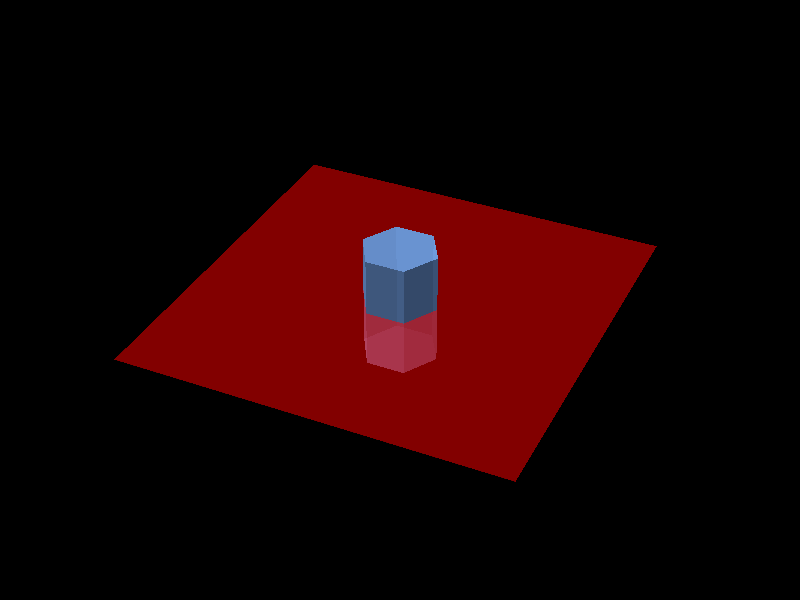
Cross-Section (Red=Answer, Green=Expected):

Parameters: Torus horizontal slice - HARD
View exact prompt
View raw AI output
View chain of thought
AI Reasoning: A torus centered at the origin with axis along Z can be described by the implicit equation (sqrt(x^2+y^2)−R)^2+z^2=r^2. Intersect with the plane z=1: (sqrt(x^2+y^2)−5)^2+1^2=2^2 ⇒ (sqrt(x^2+y^2)−5)^2=3 ⇒ sqrt(x^2+y^2)=5±sqrt(3). Thus the cross-section in the z=1 plane is the region between two concentric circles centered at (x,y)=(0,0), i.e., an annulus. In the plane’s local 2D coordinates (U=X, V=Y), the circles are centered at (0,0). The plane normal is +Z; “clockwise when viewed from +normal” means clockwise when looking down the +Z axis onto the UV-plane. Circles have infinitely many vertices, so vertices are omitted and center/radii are provided.
Shape type: annulus (expected two_circles) - 0.0 pts
Matched 0/0 vertices
Matched 0/0 vertices
Center: [0, 0]
Radii: [6.732050807568877, 3.267949192431123]
Vertices:
3D Object with Cutting Plane:

Cross-Section (Red=Answer, Green=Expected):

Parameters: Cube maximum hexagon slice - HARD
View exact prompt
View raw AI output
View chain of thought
AI Reasoning: The listed 6 points (±1,0,0),(0,±1,0),(0,0,±1) are all exactly the points where the plane x+y+z=1 intersects the cube’s edges (it hits the three edges emanating from (1,1,1)). This plane is perpendicular to (1,1,1) and has normal n=(1,1,1)/√3, so the cross-section is the intersection of the cube with x+y+z=1, which is a triangle with 3 vertices: (1,0,0),(0,1,0),(0,0,1). The plane-origin is the projection of (0,0,0) onto the plane along n: p0 = (1/3,1/3,1/3). Using U=(1,-1,0)/√2 and V=(1,1,-2)/√6, each 2D coordinate is (u,v) = ((p-p0)·U, (p-p0)·V). This yields the three 2D vertices. Ordering them clockwise as viewed from the +normal side is the order (1,0,0) → (0,0,1) → (0,1,0) (the opposite order would be CCW).
Shape type: triangle (expected hexagon) - 0.0 pts
Wrong vertex count: 3 (expected 6)
Wrong vertex count: 3 (expected 6)
Center: []
Radii: []
Vertices:
0: [0.7071067812, 0.4082482905]
1: [0, -0.8164965809]
2: [-0.7071067812, 0.4082482905]
3D Object with Cutting Plane:

Cross-Section (Red=Answer, Green=Expected):
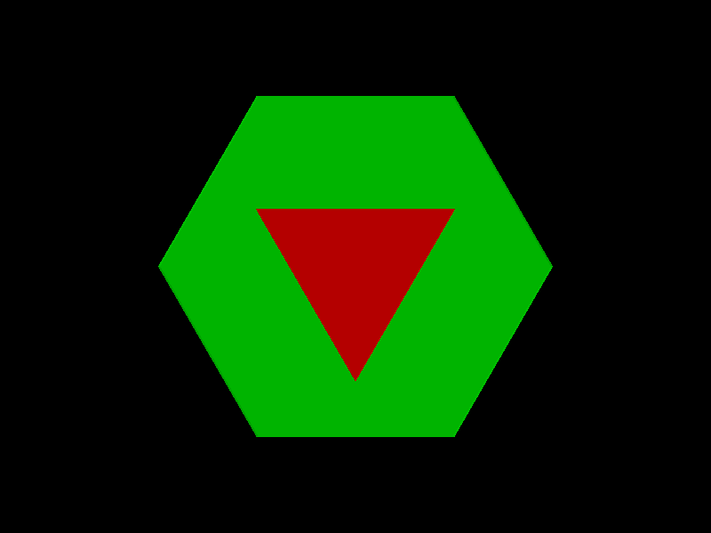
Parameters: Cone diagonal slice (ellipse) - HARD
View exact prompt
View raw AI output
View chain of thought
AI Reasoning: A plane cutting a right circular cone at an angle less steep than a generating line produces a closed conic section: an ellipse. Since the requested output format asks for polygon vertices but the true cross-section is not polygonal, we represent it as an ellipse in the plane’s local (U,V) coordinates.
Plane: normal n=(0,0.5,0.866), through P0=(0,0,5) ⇒ equation 0.5y+0.866(z-5)=0.
Local axes: U along +X ⇒ û=(1,0,0). V chosen along plane’s slope in the YZ direction (unit, in-plane, orthogonal to U): v̂ = (0,0.866,-0.5). This satisfies v̂·n=0.
Origin of 2D system: projection of world origin O=(0,0,0) onto plane. Signed distance along n: s = n·(O-P0)= -0.866*5 = -4.330. Projection Oproj = O - s n = (0,0,0)+4.330*(0,0.5,0.866)=(0,2.165,3.750).
Thus mapping from 2D (u,v) to 3D is: P(u,v)=Oproj + u û + v v̂ = (u, 2.165+0.866v, 3.750-0.5v).
Cone equation (apex at z=10, base radius 5 at z=0): x^2+y^2 = ( (10-z)/2 )^2.
Substitute x=u, y=2.165+0.866v, z=3.750-0.5v:
Let w = 10-z = 6.25+0.5v. Then cone gives u^2 + (2.165+0.866v)^2 = (w^2)/4.
Expanding yields the ellipse in (u,v): u^2 + 2.5 v^2 + 3.75 v + 0.296875 = 0.
Complete the square in v:
2.5[(v+0.75)^2 - 0.5625] + u^2 + 0.296875 = 0 ⇒ u^2 + 2.5(v+0.75)^2 = 1.109375.
So center in 2D: (u0,v0)=(0,-0.75).
Semi-axes: a_u = sqrt(1.109375)=1.05327 (along U), a_v = sqrt(1.109375/2.5)=0.66583 (along V).
These are the ellipse parameters in the requested local coordinates.
Shape type: ellipse (expected ellipse) - 1.0 pts
Center wrong: [0, -0.75] (expected [0, 0])
Radii wrong: [1.0532687216470449, 0.6658328118479395] (expected [2.5, 2.8867513459481287])
Center wrong: [0, -0.75] (expected [0, 0])
Radii wrong: [1.0532687216470449, 0.6658328118479395] (expected [2.5, 2.8867513459481287])
Center: [0, -0.75]
Radii: [1.0532687216470449, 0.6658328118479395]
Vertices:
3D Object with Cutting Plane:

Cross-Section (Red=Answer, Green=Expected):
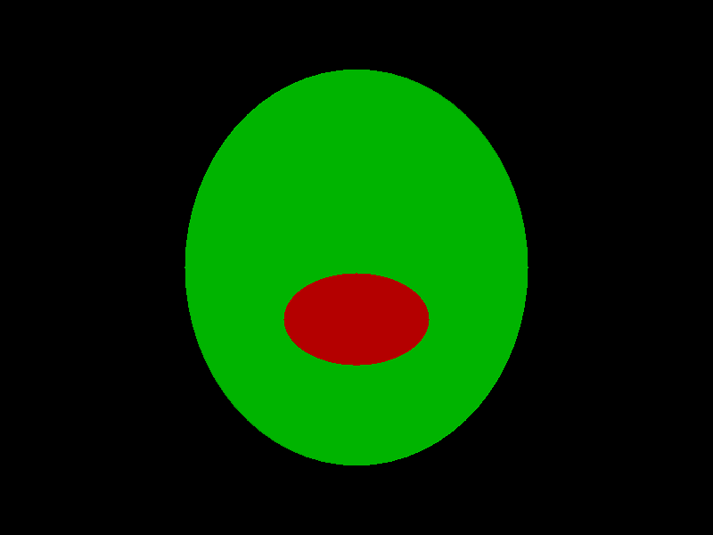
Parameters: Intersecting cylinders slice - HARD
View exact prompt
View raw AI output
View chain of thought
AI Reasoning: At Z=2, Cylinder A (axis Z) gives the disk x^2+y^2<=9 in the (X,Y) plane. Cylinder B (axis X) satisfies y^2+z^2<=9, so with z=2 it becomes y^2<=5, i.e. -sqrt(5)<=y<=sqrt(5), independent of x. The cross-section is therefore the intersection of the radius-3 disk with the horizontal strip |y|<=sqrt(5). Its boundary consists of two circular arcs of x^2+y^2=9 (top and bottom) clipped by the two horizontal lines y=±sqrt(5). Corner points occur where y=±sqrt(5) meets the circle: x=±sqrt(9-5)=±2. With U=X and V=Y, and the plane origin projecting to (0,0) in UV, the key boundary vertices (arc/line junctions) in clockwise order (viewed from +Z) are listed below.
Shape type: stadium (expected lens) - 0.0 pts
Wrong vertex count: 4 (expected 6)
Wrong vertex count: 4 (expected 6)
Center: []
Radii: []
Vertices:
0: [2, 2.2360679775]
1: [-2, 2.2360679775]
2: [-2, -2.2360679775]
3: [2, -2.2360679775]
3D Object with Cutting Plane:

Cross-Section (Red=Answer, Green=Expected):

Parameters: Twisted prism slice - HARD
View exact prompt
View raw AI output
View chain of thought
AI Reasoning: At Z=3 (halfway between Z=0 and Z=6), the linear twist is half of 60°, i.e., 30° rotation about the Z-axis from the base triangle. A horizontal slice through a (linearly) twisted prism gives the intermediate cross-section polygon, which here remains an equilateral triangle rotated by 30° in the XY-plane. The plane’s 2D coordinates are U=X, V=Y (origin at (0,0,3) projects to (0,0) in UV), so we just compute the rotated XY vertices.
Rotate each base vertex (x,y) by +30°:
cos30 = √3/2, sin30 = 1/2.
1) (2,0) -> (2cos30, 2sin30) = (√3, 1)
2) (-1, √3) -> ( -cos30 - √3 sin30, -sin30 + √3 cos30 ) = (-√3, 1)
3) (-1, -√3) -> ( -cos30 + √3 sin30, -sin30 - √3 cos30 ) = (0, -2)
These are counterclockwise; the request is clockwise when viewed from +normal (for Z=3, normal is +Z), so we reverse the order.
Shape type: triangle (expected triangle) - 1.0 pts
Matched 3/3 vertices
Matched 3/3 vertices
Center: []
Radii: []
Vertices:
0: [0, -2]
1: [-1.7320508075688772, 1]
2: [1.7320508075688772, 1]
3D Object with Cutting Plane:

Cross-Section (Red=Answer, Green=Expected):

Parameters: Dodecahedron slice - HARD
View exact prompt
View raw AI output
View chain of thought
AI Reasoning: A regular dodecahedron with a face normal along +Z has a 5-fold symmetry axis along Z (face-to-face axis). The central slice by the plane Z=0 is perpendicular to that axis and therefore produces a regular decagon centered at the origin in the XY-plane. Using the standard coordinate model of a regular dodecahedron (with vertices at permutations of (±1,±1,±1), (0,±1/φ,±φ), (±1/φ,±φ,0), (±φ,0,±1/φ)) scaled so that the circumradius is φ², the plane Z=0 intersects the solid in a decagon whose vertices lie on the lines where edges cross Z=0. In this scaling, the decagon’s circumradius in the XY-plane evaluates to R=φ²/√(φ+2)=√(φ+2). With the face normal aligned to +Z, the decagon is oriented so that two of its vertices lie on the +U and −U axes. Listing vertices clockwise as seen from +Z (plane normal), we take angles 0°, −36°, −72°, … around the circle.
Shape type: decagon (expected decagon) - 1.0 pts
Matched 10/10 vertices
Matched 10/10 vertices
Center: []
Radii: []
Vertices:
0: [1.902113032590307, -0.0]
1: [1.5388417685876268, -1.118033988749895]
2: [0.5877852522924732, -1.8090169943749475]
3: [-0.5877852522924732, -1.8090169943749475]
4: [-1.5388417685876268, -1.118033988749895]
5: [-1.902113032590307, -0.0]
6: [-1.5388417685876268, 1.118033988749895]
7: [-0.5877852522924732, 1.8090169943749475]
8: [0.5877852522924732, 1.8090169943749475]
9: [1.5388417685876268, 1.118033988749895]
3D Object with Cutting Plane:

Cross-Section (Red=Answer, Green=Expected):
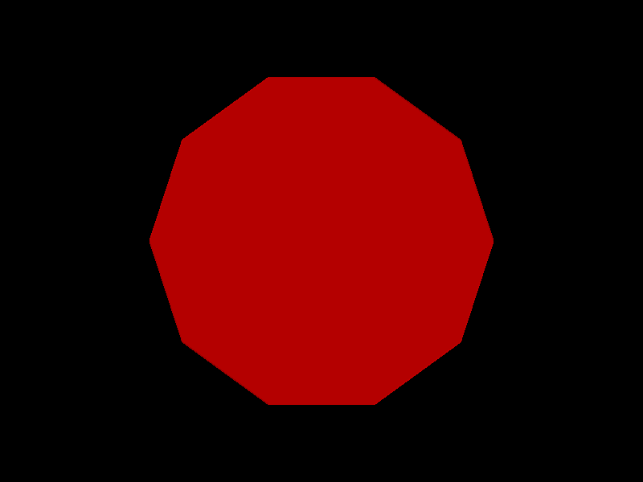
Typical Prompt:
You are shown multiple 3D objects made of connected unit cubes (like 3D Tetris pieces).
Each object is described by listing the (x, y, z) coordinates of its unit cubes.
Your task is to identify which objects are the SAME shape, just rotated differently in 3D space.
Two shapes are considered the same if one can be rotated (but NOT reflected/mirrored) to match the other.
Objects to analyze:
Object 1: cubes at (0,5,5), (0,6,5), (0,5,4), (0,6,4)
Object 2: cubes at (4,1,5), (4,1,4), (4,0,5), (4,0,4)
Object 3: cubes at (0,1,5), (-1,1,5), (-2,1,5), (-2,1,6)
Object 4: cubes at (0,3,0), (1,3,0), (2,3,0), (2,3,-1)
Group the objects by their underlying shape. Return groups where each group contains
object numbers that are rotations of each other.
You are shown multiple 3D objects made of connected unit cubes (like 3D Tetris pieces).
Each object is described by listing the (x, y, z) coordinates of its unit cubes.
Your task is to identify which objects are the SAME shape, just rotated differently in 3D space.
Two shapes are considered the same if one can be rotated (but NOT reflected/mirrored) to match the other.
Objects to analyze:
Object 1: cubes at (0,5,5), (0,6,5), (0,5,4), (0,6,4)
Object 2: cubes at (4,1,5), (4,1,4), (4,0,5), (4,0,4)
Object 3: cubes at (0,1,5), (-1,1,5), (-2,1,5), (-2,1,6)
Object 4: cubes at (0,3,0), (1,3,0), (2,3,0), (2,3,-1)
Group the objects by their underlying shape. Return groups where each group contains
object numbers that are rotations of each other.
Increasing number of objects and unique shapes
Parameters: 4 objects, 2 unique shapes
View exact prompt
View raw AI output
View chain of thought
Mental rotation is a core spatial reasoning ability - recognizing that two objects are the same shape despite being shown from different orientations.
This test presents multiple 3D polycube shapes and asks the LLM to group those that are rotations of each other (but NOT mirror images).
Key challenges:
- Mentally rotating 3D coordinates
- Distinguishing rotations from reflections (chiral shapes)
- Handling multiple comparison groups simultaneously
AI Reasoning: Normalize each object by translating so the minimum x,y,z becomes (0,0,0), then compare shapes up to 3D rotations.
Object 1 cubes form a 2×2 square in the y–z plane (all x equal): relative coords {(0,0,0),(0,1,0),(0,0,1),(0,1,1)}.
Object 2 also forms the same 2×2 square in the y–z plane (all x equal): relative coords {(0,0,0),(0,1,0),(0,0,1),(0,1,1)}. So 1 and 2 match (in fact identical orientation after translation).
Object 3 is a 3-in-a-row with one extra cube attached at an end, perpendicular to the line (an L-tetromino in 3D): relative coords {(2,0,0),(1,0,0),(0,0,0),(0,0,1)} after translation.
Object 4 is the same L shape: three in a row with one attached at an end in a perpendicular axis: relative coords {(0,0,1),(1,0,1),(2,0,1),(2,0,0)} after translation, which rotates to match Object 3.
Thus the rotation-equivalence groups are {1,2} and {3,4}.
Perfect match!
Object 1: [(0, 5, 5), (0, 6, 5), (0, 5, 4), (0, 6, 4)]
Object 2: [(4, 1, 5), (4, 1, 4), (4, 0, 5), (4, 0, 4)]
Object 3: [(0, 1, 5), (-1, 1, 5), (-2, 1, 5), (-2, 1, 6)]
Object 4: [(0, 3, 0), (1, 3, 0), (2, 3, 0), (2, 3, -1)]
Your groups:
[1, 2]
[3, 4]
Expected groups:
[1, 2]
[3, 4]
Objects Visualization (same color = same shape group):

Parameters: 6 objects, 3 unique shapes
View exact prompt
View raw AI output
View chain of thought
AI Reasoning: Normalize each object by translating so its minimum (x,y,z) is at (0,0,0), then compare the resulting adjacency pattern up to 3D rotations. Objects 2 and 3 both form a 4-cube ‘L’ with three in a line and one attached at an end (same orientation after rotation). Objects 4, 5, and 6 are also the same 4-cube ‘L’ (three in a line with one attached at an end), just lying along different axes. Object 1 is a 4-cube ‘zigzag’/‘S’ shape (a length-3 chain with the 4th cube attached to the middle cube but on the opposite side compared to the end attachment), which is not rotatable into the ‘L’ shape.
Perfect match!
Object 1: [(4, 2, 2), (4, 2, 1), (5, 2, 1), (5, 2, 0)]
Object 2: [(4, 2, 5), (4, 2, 4), (4, 2, 3), (5, 2, 3)]
Object 3: [(0, 4, 3), (0, 4, 2), (0, 4, 1), (1, 4, 1)]
Object 4: [(2, 5, 3), (3, 5, 3), (4, 5, 3), (4, 6, 3)]
Object 5: [(0, 5, 1), (1, 5, 1), (2, 5, 1), (2, 6, 1)]
Object 6: [(2, 3, 4), (3, 3, 4), (4, 3, 4), (4, 4, 4)]
Your groups:
[1]
[2, 3, 4, 5, 6]
Expected groups:
[1]
[2, 3, 4, 5, 6]
Objects Visualization (same color = same shape group):

Parameters: 8 objects, 3 unique shapes
View exact prompt
View raw AI output
View chain of thought
AI Reasoning: Normalize each object by translating so the minimum (x,y,z) becomes (0,0,0), then compare relative cube coordinate sets up to 3D rotations.
Objects 2, 4, 5, and 7 each form a 2×2 flat square of 4 cubes (a tetromino square) lying in some coordinate plane, so they are all the same under rotation.
Objects 1, 3, 6, and 8 each form the same non-planar “bent” 4-cube shape: three cubes meeting at a corner (a 3-armed corner) plus one extra cube extending from one of those arms (i.e., a corner with one arm of length 2). These match each other by rotation.
Correct pairs: 9/9, Wrong pairs: 3
Expected: [[1], [2, 4, 5, 7], [3, 6, 8]]
Got: [[1, 3, 6, 8], [2, 4, 5, 7]]
Expected: [[1], [2, 4, 5, 7], [3, 6, 8]]
Got: [[1, 3, 6, 8], [2, 4, 5, 7]]
Object 1: [(2, 3, 0), (2, 2, 0), (2, 2, 1), (1, 2, 1)]
Object 2: [(1, 5, 3), (2, 5, 3), (1, 5, 4), (2, 5, 4)]
Object 3: [(0, 4, 4), (0, 3, 4), (-1, 4, 4), (0, 4, 3)]
Object 4: [(1, 2, 1), (2, 2, 1), (1, 2, 0), (2, 2, 0)]
Object 5: [(2, 1, 5), (2, 1, 4), (2, 2, 5), (2, 2, 4)]
Object 6: [(5, 3, 5), (5, 4, 5), (5, 3, 4), (4, 3, 5)]
Object 7: [(1, 2, 4), (1, 1, 4), (0, 2, 4), (0, 1, 4)]
Object 8: [(2, 4, 2), (2, 5, 2), (2, 4, 1), (1, 4, 2)]
Your groups:
[2, 4, 5, 7]
[1, 3, 6, 8]
Expected groups:
[1]
[2, 4, 5, 7]
[3, 6, 8]
Objects Visualization (same color = same shape group):

Parameters: 10 objects, 4 unique shapes
View exact prompt
View raw AI output
View chain of thought
AI Reasoning: Normalize each object by translating so its minimum (x,y,z) becomes (0,0,0), then compare shapes up to the 24 proper 3D rotations (no reflections). Objects 1,5,7 are all the same 2×2 planar square (a tetromino “O” piece) lying in different coordinate planes. The remaining objects (2,3,4,6,8,9,10) each form the same 4-cube “L” tetromino: three cubes in a straight line with a fourth attached to one end (in various orientations in 3D). No other distinct shapes appear.
Correct pairs: 10/10, Wrong pairs: 14
Expected: [[1, 5, 7], [2], [3, 4, 9, 10], [6, 8]]
Got: [[1, 5, 7], [2, 3, 4, 6, 8, 9, 10]]
Expected: [[1, 5, 7], [2], [3, 4, 9, 10], [6, 8]]
Got: [[1, 5, 7], [2, 3, 4, 6, 8, 9, 10]]
Object 1: [(1, 4, 2), (1, 4, 3), (0, 4, 2), (0, 4, 3)]
Object 2: [(2, 4, 1), (2, 3, 1), (2, 2, 1), (1, 2, 1)]
Object 3: [(5, 3, 0), (5, 2, 0), (6, 3, 0), (5, 3, 1)]
Object 4: [(3, 3, 1), (4, 3, 1), (3, 3, 2), (3, 2, 1)]
Object 5: [(0, 3, 4), (0, 3, 3), (0, 4, 4), (0, 4, 3)]
Object 6: [(5, 2, 4), (6, 2, 4), (6, 2, 3), (6, 3, 3)]
Object 7: [(1, 5, 5), (1, 6, 5), (2, 5, 5), (2, 6, 5)]
Object 8: [(1, 3, 0), (1, 3, 1), (2, 3, 1), (2, 4, 1)]
Object 9: [(1, 2, 1), (1, 1, 1), (1, 2, 0), (2, 2, 1)]
Object 10: [(4, 1, 0), (3, 1, 0), (4, 1, -1), (4, 0, 0)]
Your groups:
[1, 5, 7]
[2, 3, 4, 6, 8, 9, 10]
Expected groups:
[1, 5, 7]
[2]
[3, 4, 9, 10]
[6, 8]
Objects Visualization (same color = same shape group):

Parameters: 12 objects, 5 unique shapes
View exact prompt
View raw AI output
View chain of thought
AI Reasoning: Normalize each object by translating so one cube is at the origin, then compare rotation-invariant structure (pairwise adjacency/graph and relative coordinate sets under the 24 proper 3D rotations).
Identified shape types:
- A 4-cube straight line (I-tetromino): only Object 6.
- An L-tetromino (3 in a line with 1 attached to an end): Objects 2, 5, 12.
- A T-tetromino (3 in a line with 1 attached to the middle): Objects 1, 10.
- A 2x2 square in a plane (O-tetromino): none.
- A skew/zigzag planar tetromino (S/Z): none.
- A 3D “stair” (two-step diagonal) tetromino with relative offsets { (0,0,0),(1,0,0),(1,1,0),(2,1,0) } up to rotation: Objects 7, 8, 9.
- A non-planar 3D tetromino with relative offsets matching { (0,0,0),(0,0,1),(-1,0,1),(-1,-1,1) } up to rotation: Objects 3, 4, 11.
Perfect match!
Object 1: [(5, 5, 2), (5, 6, 2), (5, 7, 2), (5, 6, 3)]
Object 2: [(0, 1, 2), (0, 0, 2), (0, -1, 2), (-1, -1, 2)]
Object 3: [(5, 3, 2), (5, 3, 3), (4, 3, 3), (4, 2, 3)]
Object 4: [(1, 0, 3), (2, 0, 3), (2, 1, 3), (2, 1, 4)]
Object 5: [(4, 1, 1), (4, 1, 0), (4, 1, -1), (4, 0, -1)]
Object 6: [(5, 4, 4), (6, 4, 4), (7, 4, 4), (8, 4, 4)]
Object 7: [(1, 2, 5), (2, 2, 5), (2, 3, 5), (3, 3, 5)]
Object 8: [(5, 2, 2), (6, 2, 2), (6, 2, 3), (7, 2, 3)]
Object 9: [(5, 3, 4), (6, 3, 4), (6, 3, 5), (7, 3, 5)]
Object 10: [(3, 4, 0), (3, 5, 0), (3, 6, 0), (4, 5, 0)]
Object 11: [(3, 3, 4), (2, 3, 4), (2, 4, 4), (2, 4, 3)]
Object 12: [(2, 5, 1), (2, 5, 0), (2, 5, -1), (2, 4, -1)]
Your groups:
[1, 10]
[2, 5, 12]
[3, 4, 11]
[6]
[7, 8, 9]
Expected groups:
[1, 10]
[2, 5, 12]
[3, 4, 11]
[6]
[7, 8, 9]
Objects Visualization (same color = same shape group):

Parameters: 16 objects, 6 unique shapes
View exact prompt
View raw AI output
View chain of thought
AI Reasoning: Normalize each object by translating so its minimum (x,y,z) is at the origin, then compare shapes up to the 24 proper 3D rotations (no reflections). This yields four distinct polycube types: (A) a 7-cube 3D cross (one center cube with 6 axis-adjacent neighbors); (B) a 5-cube “T with one extra” (a 3-in-a-line with one perpendicular at the middle and one extra out-of-plane at the middle); (C) a 5-cube “2×2 corner + tail” shape (equivalently coordinates {(0,0,0),(1,0,0),(0,1,0),(1,1,0),(1,1,1)} up to rotation); (D) a 7-cube 2×2×2 cube missing one corner. Objects within each type match under rotation.
Correct pairs: 16/16, Wrong pairs: 9
Expected: [[1, 9], [2, 12, 13], [3, 4, 6], [5, 7, 11, 16], [8, 14, 15], [10]]
Got: [[1, 9], [2, 12, 13], [3, 4, 6, 8, 14, 15], [5, 7, 11, 16], [10]]
Expected: [[1, 9], [2, 12, 13], [3, 4, 6], [5, 7, 11, 16], [8, 14, 15], [10]]
Got: [[1, 9], [2, 12, 13], [3, 4, 6, 8, 14, 15], [5, 7, 11, 16], [10]]
Object 1: [(5, 8, 6), (4, 8, 6), (3, 8, 6), (4, 9, 6), (4, 7, 6), (4, 8, 5), (4, 8, 7)]
Object 2: [(3, 4, -1), (3, 5, -1), (3, 6, -1), (2, 5, -1), (3, 5, 0)]
Object 3: [(-3, 7, 5), (-3, 7, 4), (-2, 7, 4), (-2, 6, 4), (-2, 6, 5)]
Object 4: [(5, -2, 6), (5, -1, 6), (5, -1, 7), (6, -1, 7), (6, -2, 7)]
Object 5: [(1, 6, 4), (1, 6, 5), (1, 7, 4), (1, 7, 5), (0, 6, 4), (0, 6, 5), (0, 7, 4)]
Object 6: [(8, 1, 3), (8, 1, 2), (8, 2, 2), (9, 2, 2), (9, 2, 3)]
Object 7: [(7, -3, -2), (7, -2, -2), (6, -3, -2), (6, -2, -2), (7, -3, -1), (7, -2, -1), (6, -3, -1)]
Object 8: [(-3, 0, 0), (-3, 0, -1), (-3, 0, -2), (-2, 0, -2), (-2, -1, -2)]
Object 9: [(-1, 5, -3), (0, 5, -3), (1, 5, -3), (0, 4, -3), (0, 6, -3), (0, 5, -4), (0, 5, -2)]
Object 10: [(8, 7, 6), (8, 8, 6), (8, 8, 7), (9, 8, 7), (9, 7, 7), (9, 7, 8), (10, 7, 8)]
Object 11: [(6, -3, -2), (6, -4, -2), (5, -3, -2), (5, -4, -2), (6, -3, -3), (6, -4, -3), (5, -3, -3)]
Object 12: [(4, 1, 5), (4, 1, 4), (4, 1, 3), (4, 2, 4), (5, 1, 4)]
Object 13: [(-1, 6, 7), (0, 6, 7), (1, 6, 7), (0, 5, 7), (0, 6, 6)]
Object 14: [(5, 2, 6), (4, 2, 6), (3, 2, 6), (3, 2, 5), (3, 1, 5)]
Object 15: [(8, 6, 8), (7, 6, 8), (6, 6, 8), (6, 7, 8), (6, 7, 7)]
Object 16: [(5, -2, -3), (5, -2, -2), (5, -3, -3), (5, -3, -2), (6, -2, -3), (6, -2, -2), (6, -3, -3)]
Your groups:
[1, 9]
[2, 12, 13]
[3, 4, 6, 8, 14, 15]
[5, 7, 11, 16]
[10]
Expected groups:
[1, 9]
[2, 12, 13]
[3, 4, 6]
[5, 7, 11, 16]
[8, 14, 15]
[10]
Objects Visualization (same color = same shape group):

Parameters: 20 objects, 7 unique shapes
View exact prompt
View raw AI output
View chain of thought
AI Reasoning: Normalize each object by translating cubes so the minimum (x,y,z) becomes (0,0,0). Then compare intrinsic structure up to 24 proper 3D rotations (no reflections) by using rotation-invariant features (cube count, adjacency graph degrees, and matching canonical forms under all rotations). This yields the following equivalence classes.
Correct pairs: 21/22, Wrong pairs: 6
Expected: [[1, 15, 19], [2, 5, 9], [3, 4, 6, 14, 20], [7, 11], [8, 12, 13], [10, 16], [17, 18]]
Got: [[1, 15, 19], [2, 5, 9], [3, 4, 6, 14, 20], [7, 11], [8, 12, 13, 17, 18], [10], [16]]
Expected: [[1, 15, 19], [2, 5, 9], [3, 4, 6, 14, 20], [7, 11], [8, 12, 13], [10, 16], [17, 18]]
Got: [[1, 15, 19], [2, 5, 9], [3, 4, 6, 14, 20], [7, 11], [8, 12, 13, 17, 18], [10], [16]]
Object 1: [(2, 8, 1), (3, 8, 1), (4, 8, 1), (3, 7, 1), (3, 9, 1), (3, 8, 0), (3, 8, 2)]
Object 2: [(5, 2, 5), (4, 2, 5), (4, 3, 5), (4, 3, 4), (5, 3, 4)]
Object 3: [(1, 1, 8), (2, 1, 8), (2, 2, 8), (3, 2, 8), (3, 2, 9), (3, 3, 9)]
Object 4: [(4, 2, 3), (4, 1, 3), (4, 1, 4), (4, 0, 4), (3, 0, 4), (3, 0, 5)]
Object 5: [(-2, -2, 8), (-2, -2, 9), (-1, -2, 9), (-1, -1, 9), (-1, -1, 8)]
Object 6: [(-3, 3, 2), (-3, 3, 3), (-2, 3, 3), (-2, 3, 4), (-2, 4, 4), (-1, 4, 4)]
Object 7: [(0, 1, -3), (-1, 1, -3), (0, 0, -3), (-1, 0, -3), (0, 1, -2), (-1, 1, -2), (0, 0, -2)]
Object 8: [(0, 0, 4), (-1, 0, 4), (-2, 0, 4), (-2, 0, 3), (-2, -1, 3)]
Object 9: [(-3, 3, 2), (-3, 3, 1), (-4, 3, 1), (-4, 4, 1), (-4, 4, 2)]
Object 10: [(-1, 2, -2), (-2, 2, -2), (-2, 3, -2), (-2, 3, -3), (-1, 3, -3), (-1, 4, -3), (-1, 4, -4)]
Object 11: [(-1, 4, 8), (-1, 4, 9), (-1, 3, 8), (-1, 3, 9), (0, 4, 8), (0, 4, 9), (0, 3, 8)]
Object 12: [(3, -1, -2), (3, -1, -1), (3, -1, 0), (2, -1, 0), (2, -2, 0)]
Object 13: [(7, -1, 8), (7, -1, 9), (7, -1, 10), (7, 0, 10), (6, 0, 10)]
Object 14: [(2, 7, -3), (1, 7, -3), (1, 7, -2), (0, 7, -2), (0, 8, -2), (0, 8, -1)]
Object 15: [(5, 8, 1), (4, 8, 1), (3, 8, 1), (4, 9, 1), (4, 7, 1), (4, 8, 0), (4, 8, 2)]
Object 16: [(7, 8, 1), (7, 8, 0), (7, 9, 0), (8, 9, 0), (8, 9, 1), (8, 10, 1), (9, 10, 1)]
Object 17: [(7, 3, 5), (7, 3, 6), (7, 3, 7), (6, 3, 6), (7, 2, 6)]
Object 18: [(2, -3, 7), (2, -2, 7), (2, -1, 7), (1, -2, 7), (2, -2, 8)]
Object 19: [(5, -1, 5), (5, -1, 6), (5, -1, 7), (5, -2, 6), (5, 0, 6), (6, -1, 6), (4, -1, 6)]
Object 20: [(3, 8, -3), (4, 8, -3), (4, 8, -2), (5, 8, -2), (5, 7, -2), (5, 7, -1)]
Your groups:
[1, 15, 19]
[2, 5, 9]
[3, 4, 6, 14, 20]
[7, 11]
[8, 12, 13, 17, 18]
[10]
[16]
Expected groups:
[1, 15, 19]
[2, 5, 9]
[3, 4, 6, 14, 20]
[7, 11]
[8, 12, 13]
[10, 16]
[17, 18]
Objects Visualization (same color = same shape group):

Parameters: 25 objects, 8 unique shapes
View exact prompt
View raw AI output
View chain of thought
AI Reasoning: Compared objects by cube count and adjacency/branching structure (i.e., the polycube graph), which is invariant under rotation. Then matched objects with identical connectivity patterns up to axis permutation/sign flips (rotations only, no reflections). This yields: (i) three 7-cube “2×2×2 missing one corner” solids; (ii) three 5-cube ‘T’/cross-like pieces (a 3-in-line with two perpendicular single cubes attached at the middle); (iii) three 5-cube ‘P’/chair-like pieces (a 3-in-line with a 2-cube perpendicular arm at one end); (iv) three 6-cube zigzag/step chains of length 6; (v) four identical 7-cube staircase chains; and two singleton shapes (a 7-cube longer snake, and a 5-cube plus shape variant) that do not match others.
Correct pairs: 29/39, Wrong pairs: 7
Expected: [[1, 8, 11, 14, 15], [2, 10, 13], [3, 9, 12, 18, 24], [4, 7, 17, 22, 25], [5, 6, 16, 23], [19], [20], [21]]
Got: [[1, 8, 11, 14, 15], [2, 10, 13, 19], [3], [4, 7, 22], [5, 6, 16, 23], [9, 12, 18, 21, 24], [17, 25], [20]]
Expected: [[1, 8, 11, 14, 15], [2, 10, 13], [3, 9, 12, 18, 24], [4, 7, 17, 22, 25], [5, 6, 16, 23], [19], [20], [21]]
Got: [[1, 8, 11, 14, 15], [2, 10, 13, 19], [3], [4, 7, 22], [5, 6, 16, 23], [9, 12, 18, 21, 24], [17, 25], [20]]
Object 1: [(0, 1, -3), (0, 2, -3), (-1, 2, -3), (-1, 2, -2), (-1, 1, -2), (-2, 1, -2), (-2, 1, -1)]
Object 2: [(4, 2, 4), (4, 3, 4), (3, 3, 4), (3, 3, 5), (3, 4, 5)]
Object 3: [(8, 5, 8), (8, 5, 7), (8, 6, 7), (8, 6, 6), (9, 6, 6), (9, 7, 6)]
Object 4: [(-1, -3, 5), (-1, -4, 5), (-1, -5, 5), (-2, -4, 5), (-1, -4, 4)]
Object 5: [(0, 6, -1), (0, 7, -1), (0, 6, 0), (0, 7, 0), (1, 6, -1), (1, 7, -1), (1, 6, 0)]
Object 6: [(7, 6, 7), (7, 5, 7), (8, 6, 7), (8, 5, 7), (7, 6, 8), (7, 5, 8), (8, 6, 8)]
Object 7: [(5, 7, 6), (6, 7, 6), (7, 7, 6), (6, 7, 7), (6, 6, 6)]
Object 8: [(1, 8, 5), (0, 8, 5), (0, 8, 6), (0, 9, 6), (1, 9, 6), (1, 9, 7), (1, 10, 7)]
Object 9: [(3, 8, 2), (3, 9, 2), (2, 9, 2), (2, 10, 2), (2, 10, 3), (1, 10, 3)]
Object 10: [(-2, 0, 7), (-2, 0, 8), (-3, 0, 8), (-3, -1, 8), (-3, -1, 9)]
Object 11: [(2, 5, 6), (2, 5, 5), (3, 5, 5), (3, 4, 5), (3, 4, 6), (4, 4, 6), (4, 3, 6)]
Object 12: [(-1, -3, -2), (-1, -3, -1), (-1, -2, -1), (-1, -2, 0), (-2, -2, 0), (-2, -1, 0)]
Object 13: [(2, -2, 5), (2, -3, 5), (1, -3, 5), (1, -3, 4), (1, -4, 4)]
Object 14: [(8, 8, 8), (7, 8, 8), (7, 8, 9), (7, 9, 9), (8, 9, 9), (8, 9, 10), (8, 10, 10)]
Object 15: [(4, 2, 8), (5, 2, 8), (5, 3, 8), (5, 3, 9), (4, 3, 9), (4, 4, 9), (4, 4, 10)]
Object 16: [(6, -3, 3), (5, -3, 3), (6, -3, 4), (5, -3, 4), (6, -2, 3), (5, -2, 3), (6, -2, 4)]
Object 17: [(3, 0, -1), (3, 0, -2), (3, 0, -3), (2, 0, -2), (3, 1, -2)]
Object 18: [(6, 0, 0), (6, 1, 0), (6, 1, -1), (6, 2, -1), (5, 2, -1), (5, 2, -2)]
Object 19: [(8, -3, 2), (8, -2, 2), (9, -2, 2), (9, -2, 1), (9, -3, 1)]
Object 20: [(7, 6, 4), (8, 6, 4), (9, 6, 4), (9, 7, 4), (9, 7, 5)]
Object 21: [(0, 2, 2), (0, 3, 2), (1, 3, 2), (1, 3, 1), (1, 4, 1), (2, 4, 1)]
Object 22: [(-1, -2, 2), (-1, -3, 2), (-1, -4, 2), (-1, -3, 3), (-2, -3, 2)]
Object 23: [(2, -2, -1), (3, -2, -1), (2, -2, -2), (3, -2, -2), (2, -1, -1), (3, -1, -1), (2, -1, -2)]
Object 24: [(5, 1, 3), (5, 1, 4), (6, 1, 4), (6, 1, 5), (6, 2, 5), (7, 2, 5)]
Object 25: [(3, 0, 4), (3, 0, 3), (3, 0, 2), (2, 0, 3), (3, 1, 3)]
Your groups:
[5, 6, 16, 23]
[17, 25]
[2, 10, 13, 19]
[4, 7, 22]
[9, 12, 18, 21, 24]
[1, 8, 11, 14, 15]
[3]
[20]
Expected groups:
[1, 8, 11, 14, 15]
[2, 10, 13]
[3, 9, 12, 18, 24]
[4, 7, 17, 22, 25]
[5, 6, 16, 23]
[19]
[20]
[21]
Objects Visualization (same color = same shape group):

Typical Prompt:
You are analyzing the stability of stacked objects. Each object has a mass and occupies a
rectangular region in 3D space.
Object 1: Mass 10 kg, occupies region X:[0,4], Y:[0,4], Z:[0,2] (a 4x4x2 block on ground)
Object 2: Mass 5 kg, occupies region X:[1,3], Y:[1,3], Z:[2,4] (a 2x2x2 block centered on top)
The bottom object rests on a flat surface (the ground). Objects are stacked on top of each other.
Gravity pulls downward (-Z direction).
Determine:
1. Is the entire stack stable?
2. If not, which object tips first (from bottom to top)?
3. What is the location of the combined center of mass of the entire stack?
Assume uniform density for all objects (center of mass = geometric center).
You are analyzing the stability of stacked objects. Each object has a mass and occupies a
rectangular region in 3D space.
Object 1: Mass 10 kg, occupies region X:[0,4], Y:[0,4], Z:[0,2] (a 4x4x2 block on ground)
Object 2: Mass 5 kg, occupies region X:[1,3], Y:[1,3], Z:[2,4] (a 2x2x2 block centered on top)
The bottom object rests on a flat surface (the ground). Objects are stacked on top of each other.
Gravity pulls downward (-Z direction).
Determine:
1. Is the entire stack stable?
2. If not, which object tips first (from bottom to top)?
3. What is the location of the combined center of mass of the entire stack?
Assume uniform density for all objects (center of mass = geometric center).
Various stacking configurations testing stability
Parameters: Simple centered stack
View exact prompt
View raw AI output
View chain of thought
Tests understanding of physical stability and center of mass.
Key physics concepts:
- Center of mass is at the geometric center for uniform density objects
- Combined CoM is the weighted average of individual CoMs
- A stack tips when combined CoM falls outside the support footprint
- Heavier objects on top have larger effect on combined CoM
AI Reasoning: Compute each object’s center of mass (uniform density => geometric center). Object 1 spans x,y:[0,4], z:[0,2] so COM1=(2,2,1). Object 2 spans x,y:[1,3], z:[2,4] so COM2=(2,2,3). Combined COM = (m1*COM1 + m2*COM2)/(m1+m2) with m1=10, m2=5. Thus x=(10*2+5*2)/15=2, y=(10*2+5*2)/15=2, z=(10*1+5*3)/15=(10+15)/15=25/15=5/3≈1.6667. For stability on the ground, the vertical projection of the combined COM (x,y) must lie within the ground contact footprint of the bottom object, which is x,y in [0,4]×[0,4]. The projection is (2,2), which is inside. For internal tipping between objects, Object 2’s COM projection must lie within its support area on Object 1, which is the overlap footprint [1,3]×[1,3]; projection is again (2,2), inside. Therefore no tipping occurs.
Stability correct: True
CoM correct: [2, 2, 1.6666666667]
CoM correct: [2, 2, 1.6666666667]
Object 1: Mass 10 kg, occupies region X:[0,4], Y:[0,4], Z:[0,2] (a 4x4x2 block on ground)
Object 2: Mass 5 kg, occupies region X:[1,3], Y:[1,3], Z:[2,4] (a 2x2x2 block centered on top)
Your answer:
Is Stable: True
Tipping Object: 0
Center of Mass: [2, 2, 1.6666666667]
Expected:
Is Stable: True
Tipping Object: None
Center of Mass: [2.0, 2.0, 1.67]
Parameters: Offset but stable
View exact prompt
View raw AI output
View chain of thought
AI Reasoning: Compute each object’s center of mass (uniform density).
- Object 1 spans X:[0,6], Y:[0,4], Z:[0,1] ⇒ COM1 = (3, 2, 0.5), mass m1=20.
- Object 2 spans X:[4,6], Y:[1,3], Z:[1,3] ⇒ COM2 = (5, 2, 2), mass m2=5.
Combined COM:
Total mass M=25.
X = (m1*x1 + m2*x2)/M = (20*3 + 5*5)/25 = (60+25)/25 = 3.4.
Y = (20*2 + 5*2)/25 = 2.0.
Z = (20*0.5 + 5*2)/25 = (10+10)/25 = 0.8.
So COM = (3.4, 2.0, 0.8).
Stability check (stack as a whole on the ground): the vertical projection of the combined COM must lie within the ground contact footprint of the bottom object.
Bottom footprint is X:[0,6], Y:[0,4]. The COM projection is (3.4, 2.0), which lies inside that rectangle ⇒ the entire stack is stable and no object tips.
Stability correct: True
CoM correct: [3.4, 2, 0.8]
CoM correct: [3.4, 2, 0.8]
Object 1: Mass 20 kg, occupies region X:[0,6], Y:[0,4], Z:[0,1] (a 6x4x1 base plate)
Object 2: Mass 5 kg, occupies region X:[4,6], Y:[1,3], Z:[1,3] (a 2x2x2 block offset to one side)
Your answer:
Is Stable: True
Tipping Object: 0
Center of Mass: [3.4, 2, 0.8]
Expected:
Is Stable: True
Tipping Object: None
Center of Mass: [3.4, 2.0, 0.8]
Parameters: Overhang - will tip
View exact prompt
View raw AI output
View chain of thought
AI Reasoning: Compute each object’s center of mass (uniform density => geometric center).
- Object 1 spans X:[0,2], Y:[0,2], Z:[0,2] => COM1 = (1, 1, 1), m1=5.
- Object 2 spans X:[1,5], Y:[0,2], Z:[2,3] => COM2 = (3, 1, 2.5), m2=10.
Combined COM:
Total mass M = 5+10=15.
Xc = (5*1 + 10*3)/15 = (5 + 30)/15 = 35/15 = 7/3 ≈ 2.333.
Yc = (5*1 + 10*1)/15 = 15/15 = 1.
Zc = (5*1 + 10*2.5)/15 = (5 + 25)/15 = 30/15 = 2.
So combined COM = (7/3, 1, 2).
Stability criterion at the ground: for the whole stack to be stable, the vertical projection of the combined COM must lie within the ground contact polygon of the bottom object.
- Bottom object (Object 1) contacts ground over X:[0,2], Y:[0,2].
- Projected combined COM on ground is (X,Y) = (7/3, 1).
Since 7/3 ≈ 2.333 > 2, the projection lies outside the base footprint, so the stack is unstable.
Which tips first: the first loss of support occurs at the ground interface (Object 1 with the ground), because the combined COM is outside Object 1’s ground support area; thus the bottom object/entire stack would tip about the edge at x=2 (along the line x=2, y in [0,2]).
Stability correct: False
Tipping object correct: 1
CoM correct: [2.3333333333, 1, 2]
Tipping object correct: 1
CoM correct: [2.3333333333, 1, 2]
Object 1: Mass 5 kg, occupies region X:[0,2], Y:[0,2], Z:[0,2] (small base block)
Object 2: Mass 10 kg, occupies region X:[1,5], Y:[0,2], Z:[2,3] (heavier block overhanging significantly)
Your answer:
Is Stable: False
Tipping Object: 1
Center of Mass: [2.3333333333, 1, 2]
Expected:
Is Stable: False
Tipping Object: 1
Center of Mass: [2.33, 1.0, 2.0]
Parameters: Three object tower
View exact prompt
View raw AI output
View chain of thought
AI Reasoning: Compute each object’s center of mass (uniform rectangular solid):
- Obj1 center: ((0+4)/2, (0+4)/2, (0+1)/2) = (2, 2, 0.5)
- Obj2 center: ((0.5+3.5)/2, (0.5+3.5)/2, (1+2)/2) = (2, 2, 1.5)
- Obj3 center: ((1+3)/2, (1+3)/2, (2+4)/2) = (2, 2, 3)
Combined center of mass (mass-weighted average): total mass M=10+8+3=21.
- x_COM = (10*2 + 8*2 + 3*2)/21 = 2
- y_COM = (10*2 + 8*2 + 3*2)/21 = 2
- z_COM = (10*0.5 + 8*1.5 + 3*3)/21 = (5 + 12 + 9)/21 = 26/21 ≈ 1.2381
So COM = (2, 2, 1.2381).
Stability check: For a stack under gravity, each interface must have the COM of the objects above that interface vertically projecting inside the supporting contact area.
- Obj3 on Obj2: COM of Obj3 projects to (2,2), which lies inside Obj2’s top face X:[0.5,3.5], Y:[0.5,3.5] → stable.
- Obj2+Obj3 on Obj1: COM of (Obj2+Obj3) has x=y=2 (same symmetry). This lies inside Obj1’s top face X:[0,4], Y:[0,4] → stable.
- Entire stack on ground (Obj1 footprint): overall COM projects to (2,2), inside Obj1 footprint X:[0,4], Y:[0,4] → stable.
Because all required projections fall within their respective support polygons, no object tips.
Stability correct: True
CoM correct: [2, 2, 1.2380952381]
CoM correct: [2, 2, 1.2380952381]
Object 1: Mass 10 kg, occupies region X:[0,4], Y:[0,4], Z:[0,1] (4x4x1 base)
Object 2: Mass 8 kg, occupies region X:[0.5,3.5], Y:[0.5,3.5], Z:[1,2] (3x3x1 middle)
Object 3: Mass 3 kg, occupies region X:[1,3], Y:[1,3], Z:[2,4] (2x2x2 top)
Your answer:
Is Stable: True
Tipping Object: 0
Center of Mass: [2, 2, 1.2380952381]
Expected:
Is Stable: True
Tipping Object: None
Center of Mass: [2.0, 2.0, 1.24]
Parameters: Asymmetric unstable tower
View exact prompt
View raw AI output
View chain of thought
AI Reasoning: Compute each object’s COM (uniform density):
- Obj1 (X:[0,3], Y:[0,3], Z:[0,1]) => c1=(1.5, 1.5, 0.5), m1=10
- Obj2 (X:[1.5,3], Y:[0,3], Z:[1,2]) => c2=(2.25, 1.5, 1.5), m2=5
- Obj3 (X:[2,4], Y:[0.5,2.5], Z:[2,4]) => c3=(3.0, 1.5, 3.0), m3=20
Combined COM:
Total mass M=10+5+20=35.
- x = (10*1.5 + 5*2.25 + 20*3.0)/35 = (15 + 11.25 + 60)/35 = 86.25/35 = 2.464285714
- y = (10*1.5 + 5*1.5 + 20*1.5)/35 = 52.5/35 = 1.5
- z = (10*0.5 + 5*1.5 + 20*3.0)/35 = (5 + 7.5 + 60)/35 = 72.5/35 = 2.071428571
So COM ≈ (2.4643, 1.5, 2.0714).
Stability check bottom (whole stack on ground): support polygon is Obj1 footprint on ground: X:[0,3], Y:[0,3]. Projection of combined COM onto ground is (x,y)=(2.4643,1.5), which lies within [0,3]×[0,3] => the stack as a whole does not tip about the ground edge.
Inter-object tipping (check each interface, top-down):
1) Obj3 on Obj2: overlap (support) area in XY is intersection of their footprints.
- Obj2 footprint: X:[1.5,3], Y:[0,3]
- Obj3 footprint: X:[2,4], Y:[0.5,2.5]
Intersection => X:[2,3], Y:[0.5,2.5].
Obj3’s COM projects to (3.0,1.5). This is NOT within X:[2,3] (it is exactly at x=3, the edge). At best this is marginal; any perturbation would tip. With ideal rigid-body statics, being exactly on the edge implies zero tipping margin, i.e., not stably supported.
Thus the first loss of stability occurs at the Obj3-on-Obj2 interface (Obj3 is the first to tip).
(For completeness) Obj2+Obj3 on Obj1: combined COM of (2+3):
M23=25.
c23_x=(5*2.25+20*3.0)/25=(11.25+60)/25=2.85; c23_y=1.5.
Support on Obj1 is Obj2’s footprint on Obj1: X:[1.5,3], Y:[0,3]. (2.85,1.5) is within that rectangle, so that interface is stable.
Conclusion: whole-stack COM is over the ground footprint, but the top block is at the tipping boundary on its immediate support, so the stack is not stable in the strict sense (no positive stability margin).
Stability wrong: got False, expected True
CoM correct: [2.4642857143, 1.5, 2.0714285714]
CoM correct: [2.4642857143, 1.5, 2.0714285714]
Object 1: Mass 10 kg, occupies region X:[0,3], Y:[0,3], Z:[0,1] (3x3x1 base)
Object 2: Mass 5 kg, occupies region X:[1.5,3], Y:[0,3], Z:[1,2] (offset to right side)
Object 3: Mass 20 kg, occupies region X:[2,4], Y:[0.5,2.5], Z:[2,4] (heavy block extending past base)
Your answer:
Is Stable: False
Tipping Object: 3
Center of Mass: [2.4642857143, 1.5, 2.0714285714]
Expected:
Is Stable: True
Tipping Object: None
Center of Mass: [2.46, 1.5, 2.07]
Parameters: 8-object tower - HARD
View exact prompt
View raw AI output
View chain of thought
AI Reasoning: Compute each object’s center (uniform density):
1 c1=(2.33, 2.33, 0.695)
2 c2=(2.435, 1.205, 1.665)
3 c3=(3.735, -0.085, 2.415)
4 c4=(2.645, -1.44, 3.41)
5 c5=(2.095, -0.935, 4.465)
6 c6=(2.305, -1.85, 5.46)
7 c7=(1.945, -1.72, 6.755)
8 c8=(1.385, -1.31, 8.56)
Overall COM is the mass-weighted average of these centers.
Stability check is done interface-by-interface from top down: for object k resting on object k-1, the vertical projection of the COM of the substack {k..8} must lie within the overlap rectangle (support polygon) between objects (k-1) and k in the XY plane. If it falls outside, that interface is the first to tip.
At the 7–8 interface, the overlap in XY is:
X:[max(1.46,0.93), min(2.43,1.84)]=[1.46,1.84]
Y:[max(-2.20,-1.81), min(-1.24,-0.81)]=[-1.81,-1.24]
The COM of substack {8} projects to (1.385,-1.31), which is outside this overlap because x=1.385 < 1.46. Therefore the top object (8) is already unsupported in x relative to object 7 and tips first. Since an upper interface fails, the whole stack is unstable.
Combined COM (entire stack) computed by mass-weighted average:
Total mass = 83.2 kg
COM ≈ (2.363, 0.005, 2.929).
Stability correct: False
Tipping object wrong: got 8, expected 1
CoM off by 0.76: got [2.3629447115384616, 0.005252403846153941, 2.9291526442307694], expected [2.4219342102189043, -0.28407706452270676, 3.632096786670619]
Tipping object wrong: got 8, expected 1
CoM off by 0.76: got [2.3629447115384616, 0.005252403846153941, 2.9291526442307694], expected [2.4219342102189043, -0.28407706452270676, 3.632096786670619]
Object 1: Mass 19.0 kg, occupies region X:[0.00,4.66], Y:[0.00,4.66], Z:[0.00,1.39]
Object 2: Mass 4.1 kg, occupies region X:[1.28,3.59], Y:[-0.11,2.52], Z:[1.39,1.94]
Object 3: Mass 9.7 kg, occupies region X:[2.88,4.59], Y:[-0.81,0.64], Z:[1.94,2.89]
Object 4: Mass 11.5 kg, occupies region X:[1.94,3.35], Y:[-1.98,-0.90], Z:[2.89,3.93]
Object 5: Mass 14.1 kg, occupies region X:[1.52,2.67], Y:[-1.43,-0.44], Z:[3.93,5.00]
Object 6: Mass 14.9 kg, occupies region X:[1.79,2.82], Y:[-2.34,-1.36], Z:[5.00,5.92]
Object 7: Mass 5.0 kg, occupies region X:[1.46,2.43], Y:[-2.20,-1.24], Z:[5.92,7.59]
Object 8: Mass 4.9 kg, occupies region X:[0.93,1.84], Y:[-1.81,-0.81], Z:[7.59,9.53]
Your answer:
Is Stable: False
Tipping Object: 8
Center of Mass: [2.3629447115384616, 0.005252403846153941, 2.9291526442307694]
Expected:
Is Stable: False
Tipping Object: 1
Center of Mass: [2.42, -0.28, 3.63]
Parameters: 10-object tower - HARD
View exact prompt
View raw AI output
View chain of thought
AI Reasoning: Compute each object’s geometric center (midpoint of its X/Y/Z intervals). The combined center of mass (COM) is the mass-weighted average of these centers.
For stack stability (no tipping), at every interface the vertical projection of the COM of the sub-stack above that interface must lie within the support rectangle (the overlap/contact footprint provided by the supporting object). Equivalently, for object i supporting objects (i+1..10), the (x,y) of COM_{i+1..10} must lie within object i’s X/Y bounds. The first violation from bottom to top indicates the first tipping point.
Using the given boxes:
- COM of objects 2..10 projects to (x,y) ≈ (-0.727, 1.831). Object 1 footprint is X:[0,4.6], Y:[0,4.6]. Since x = -0.727 < 0, the sub-stack above object 1 is not supported by object 1’s footprint, so tipping occurs at the base interface (object 1 on ground) first.
(Although upper interfaces may or may not be stable, the earliest failure is already at object 1.)
Stability correct: False
Tipping object correct: 1
CoM correct: [-0.3400120481927711, 1.6581124497991968, 5.330658634538153]
Tipping object correct: 1
CoM correct: [-0.3400120481927711, 1.6581124497991968, 5.330658634538153]
Object 1: Mass 15.2 kg, occupies region X:[0.00,4.60], Y:[0.00,4.60], Z:[0.00,1.42]
Object 2: Mass 6.1 kg, occupies region X:[-0.18,2.53], Y:[1.75,4.01], Z:[1.42,1.93]
Object 3: Mass 14.1 kg, occupies region X:[-0.68,1.38], Y:[1.03,2.06], Z:[1.93,3.48]
Object 4: Mass 8.4 kg, occupies region X:[-0.79,0.23], Y:[0.07,1.07], Z:[3.48,4.17]
Object 5: Mass 12.1 kg, occupies region X:[-1.73,-0.80], Y:[1.41,2.34], Z:[4.17,5.46]
Object 6: Mass 2.2 kg, occupies region X:[-2.14,-1.25], Y:[1.29,2.22], Z:[5.46,7.42]
Object 7: Mass 4.7 kg, occupies region X:[-2.25,-1.36], Y:[1.91,2.89], Z:[7.42,8.03]
Object 8: Mass 9.4 kg, occupies region X:[-1.15,-0.31], Y:[1.62,2.60], Z:[8.03,8.65]
Object 9: Mass 6.8 kg, occupies region X:[-0.72,0.23], Y:[1.16,2.04], Z:[8.65,10.39]
Object 10: Mass 12.9 kg, occupies region X:[-1.82,-0.85], Y:[1.10,2.01], Z:[10.39,12.09]
Your answer:
Is Stable: False
Tipping Object: 1
Center of Mass: [-0.3400120481927711, 1.6581124497991968, 5.330658634538153]
Expected:
Is Stable: False
Tipping Object: 1
Center of Mass: [-0.09, 1.83, 5.31]
Parameters: 12-object tower - HARD
View exact prompt
View raw AI output
View chain of thought
AI Reasoning: Compute each block’s center (midpoint of its X/Y/Z intervals). Compute total COM as mass-weighted average of centers. For stability, check sequentially from top down: for each interface between object i (support) and the stack above it, the projection of the above-stack COM onto the XY-plane must lie within the supporting contact rectangle (overlap area) between object i and the object directly above i. Here, objects 1–4 overlap directly (positive X/Y overlap). But object 5 does not overlap object 4 in X (object 4 ends at x=5.23 while object 5 starts at x=5.42), so there is no contact area: the upper stack (objects 5–12) is not supported by object 4. Therefore the stack is not stable; the first failure occurs at object 5 (it and everything above would fall/tip) because its base has zero supporting area from object 4.
Stability correct: False
Tipping object wrong: got 5, expected 1
CoM off by 0.71: got [5.894, 2.166, 8.599], expected [6.555936055207084, 2.0273325153312935, 8.370970950163905]
Tipping object wrong: got 5, expected 1
CoM off by 0.71: got [5.894, 2.166, 8.599], expected [6.555936055207084, 2.0273325153312935, 8.370970950163905]
Object 1: Mass 6.6 kg, occupies region X:[0.00,5.01], Y:[0.00,5.01], Z:[0.00,1.66]
Object 2: Mass 5.6 kg, occupies region X:[0.92,5.13], Y:[1.89,4.84], Z:[1.66,2.79]
Object 3: Mass 5.8 kg, occupies region X:[3.52,5.35], Y:[3.15,5.05], Z:[2.79,3.59]
Object 4: Mass 7.1 kg, occupies region X:[4.04,5.23], Y:[3.53,4.63], Z:[3.59,4.87]
Object 5: Mass 8.6 kg, occupies region X:[5.42,6.42], Y:[3.33,4.32], Z:[4.87,6.76]
Object 6: Mass 8.6 kg, occupies region X:[5.98,6.95], Y:[2.21,3.17], Z:[6.76,7.43]
Object 7: Mass 3.6 kg, occupies region X:[6.23,7.11], Y:[1.86,2.72], Z:[7.43,8.49]
Object 8: Mass 6.0 kg, occupies region X:[7.15,8.07], Y:[2.29,3.17], Z:[8.49,10.15]
Object 9: Mass 7.7 kg, occupies region X:[8.31,9.30], Y:[1.46,2.45], Z:[10.15,11.52]
Object 10: Mass 8.1 kg, occupies region X:[8.88,9.82], Y:[0.09,1.06], Z:[11.52,12.25]
Object 11: Mass 12.1 kg, occupies region X:[8.15,9.09], Y:[-0.46,0.41], Z:[12.25,13.69]
Object 12: Mass 11.5 kg, occupies region X:[6.68,7.65], Y:[-0.69,0.17], Z:[13.69,15.10]
Your answer:
Is Stable: False
Tipping Object: 5
Center of Mass: [5.894, 2.166, 8.599]
Expected:
Is Stable: False
Tipping Object: 1
Center of Mass: [6.56, 2.03, 8.37]
Parameters: Complex cantilever with counterweight - HARD
View exact prompt
View raw AI output
View chain of thought
AI Reasoning: Compute each object’s COM (midpoint of its x,y,z ranges), then the total COM by mass-weighted average. Stability criterion (with ideal rigid blocks, no friction modeling): at every interface, the COM of the sub-stack above that interface must lie within the horizontal (x–y) overlap area that provides support. If it lies outside, that interface is the first to tip.
Centers of mass (x,y,z):
1: (4, 2, 0.5)
2: (7, 2, 2)
3: (9, 2, 3.5)
4: (10.5, 2, 5)
5: (-0.5, 2, 1.5)
6: (12, 2, 7)
7: (13, 2, 8.5)
8: (14.5, 2, 9.5)
Total mass = 236 kg.
Total COM:
X = (50*4 + 30*7 + 5*9 + 25*10.5 + 100*(-0.5) + 15*12 + 8*13 + 3*14.5)/236 = 4.2256
Y = (all have y=2) = 2
Z = (50*0.5 + 30*2 + 5*3.5 + 25*5 + 100*1.5 + 15*7 + 8*8.5 + 3*9.5)/236 = 2.4587
Global (ground) check: base footprint on ground is Object 1: x in [0,8], y in [0,4]. Total COM x=4.23, y=2 is inside, so the whole stack does not topple as a single unit.
Interface checks (top-down), using the COM of everything above the interface:
- Object 8 on 7: support overlap is x=[13,15], y=[1.5,2.5]; COM of {8} is (14.5,2) inside → stable.
- {7+8} on 6: overlap x=[11,14], y=[1.2,2.8]; COM x=(8*13+3*14.5)/11=13.409, y=2 inside → stable.
- {6+7+8} on 4: overlap x=[10,12], y=[1,3]; COM x=(15*12+8*13+3*14.5)/26=12.577 outside (>12) → this interface fails first.
Thus the first tipping occurs where Object 6 (and everything above it) is supported by Object 4: the upper cantilever section is too far to the right for the block beneath it.
Stability correct: False
Tipping object wrong: got 6, expected 3
CoM correct: [4.225635593220339, 2.0, 2.458686440677966]
Tipping object wrong: got 6, expected 3
CoM correct: [4.225635593220339, 2.0, 2.458686440677966]
Object 1: Mass 50 kg, X:[0,8], Y:[0,4], Z:[0,1] (large base plate)
Object 2: Mass 30 kg, X:[6,8], Y:[0.5,3.5], Z:[1,3] (support pillar on right)
Object 3: Mass 5 kg, X:[7,11], Y:[1,3], Z:[3,4] (horizontal beam extending right)
Object 4: Mass 25 kg, X:[9,12], Y:[0.5,3.5], Z:[4,6] (heavy block on beam)
Object 5: Mass 100 kg, X:[-2,1], Y:[0,4], Z:[1,2] (counterweight on left, resting on base)
Object 6: Mass 15 kg, X:[10,14], Y:[1,3], Z:[6,8] (extending further right)
Object 7: Mass 8 kg, X:[11,15], Y:[1.2,2.8], Z:[8,9] (more extension)
Object 8: Mass 3 kg, X:[13,16], Y:[1.5,2.5], Z:[9,10] (tip of cantilever)
This is a cantilever structure with a heavy counterweight. Is it balanced?
Your answer:
Is Stable: False
Tipping Object: 6
Center of Mass: [4.225635593220339, 2.0, 2.458686440677966]
Expected:
Is Stable: False
Tipping Object: 3
Center of Mass: [4.22, 2.0, 2.45]
Parameters: Precarious multi-branch balance - HARD
View exact prompt
View raw AI output
View chain of thought
AI Reasoning: Compute each object’s COM as the midpoint of its X/Y/Z intervals, then take the mass-weighted average to get the total COM. Overall stability against tipping on the ground depends on whether the vertical projection of the total COM lies within the ground contact polygon of the base (Object 1 footprint X:[0,10], Y:[0,10]).
Per-object COMs (x,y,z):
1 (100): (5,5,0.25)
2 (20): (1,5,2.25)
3 (20): (9,5,2.25)
4 (15): (5,1,1.75)
5 (15): (5,9,1.75)
6 (50): (1,5,4.5)
7 (45): (9,5,4.5)
8 (30): (5,1,3.5)
9 (35): (5,9,3.5)
10 (10): (-1,5,6)
11 (12): (11,5,6)
Total mass M = 352 kg.
Mass-weighted sums:
Σ(m x) = 1717, Σ(m y) = 1780, Σ(m z) = 1110.5.
So COM = (1717/352, 1780/352, 1110.5/352) ≈ (4.8778, 5.0568, 3.1548).
Stability check on ground: project COM to (x,y) ≈ (4.878, 5.057). This lies inside Object 1’s support region X:[0,10], Y:[0,10], so the entire stack is not predicted to tip as a whole.
Given that global COM projection is within the base footprint, there is no required “first tipping object” under the simplified static criterion requested (global tipping about the ground edge).
Stability wrong: got True, expected False
Tipping object wrong: got 0, expected 3
CoM correct: [4.8778409091, 5.0568181818, 3.1548295455]
Tipping object wrong: got 0, expected 3
CoM correct: [4.8778409091, 5.0568181818, 3.1548295455]
Object 1: Mass 100 kg, X:[0,10], Y:[0,10], Z:[0,0.5] (large 10x10 base plate)
Object 2: Mass 20 kg, X:[0,2], Y:[4,6], Z:[0.5,4] (left pillar)
Object 3: Mass 20 kg, X:[8,10], Y:[4,6], Z:[0.5,4] (right pillar)
Object 4: Mass 15 kg, X:[4,6], Y:[0,2], Z:[0.5,3] (front pillar)
Object 5: Mass 15 kg, X:[4,6], Y:[8,10], Z:[0.5,3] (back pillar)
Object 6: Mass 50 kg, X:[-1,3], Y:[3.5,6.5], Z:[4,5] (heavy block on left pillar, overhanging left)
Object 7: Mass 45 kg, X:[7,11], Y:[3.5,6.5], Z:[4,5] (heavy block on right pillar, overhanging right)
Object 8: Mass 30 kg, X:[3,7], Y:[-1,3], Z:[3,4] (heavy block on front pillar, overhanging front)
Object 9: Mass 35 kg, X:[3,7], Y:[7,11], Z:[3,4] (heavy block on back pillar, overhanging back)
Object 10: Mass 10 kg, X:[-2,0], Y:[4,6], Z:[5,7] (extension on left side)
Object 11: Mass 12 kg, X:[10,12], Y:[4,6], Z:[5,7] (extension on right side)
Multiple overhanging loads in different directions. Is the combined system stable?
Your answer:
Is Stable: True
Tipping Object: 0
Center of Mass: [4.8778409091, 5.0568181818, 3.1548295455]
Expected:
Is Stable: False
Tipping Object: 3
Center of Mass: [4.98, 5.06, 2.71]
Typical Prompt:
Multiple objects are moving through 3D space. Each object is a sphere with a given radius,
starting position, and constant velocity.
Object 1: Sphere with radius 1m at (0, 0, 0), moving with velocity (10, 0, 0) m/s
Object 2: Sphere with radius 1m at (100, 0, 0), moving with velocity (-10, 0, 0) m/s
Assuming all objects continue moving in straight lines at constant speed:
1. Will any pair of objects collide? (Collision = their surfaces touch or overlap)
2. If yes, which pair collides first?
3. At what time does the first collision occur?
4. Where (XYZ coordinates) does the first collision happen?
Time starts at t=0. Positions are in meters, velocities in meters/second.
Multiple objects are moving through 3D space. Each object is a sphere with a given radius,
starting position, and constant velocity.
Object 1: Sphere with radius 1m at (0, 0, 0), moving with velocity (10, 0, 0) m/s
Object 2: Sphere with radius 1m at (100, 0, 0), moving with velocity (-10, 0, 0) m/s
Assuming all objects continue moving in straight lines at constant speed:
1. Will any pair of objects collide? (Collision = their surfaces touch or overlap)
2. If yes, which pair collides first?
3. At what time does the first collision occur?
4. Where (XYZ coordinates) does the first collision happen?
Time starts at t=0. Positions are in meters, velocities in meters/second.
Various collision scenarios in 3D
Parameters: Head-on collision
View exact prompt
View raw AI output
View chain of thought
Tests ability to predict collisions between moving objects in 3D space.
Key concepts:
- Relative motion between objects
- Solving quadratic equations for collision time
- Understanding near misses vs actual collisions
- Finding earliest collision among multiple pairs
AI Reasoning: Compute relative motion between sphere centers. Initial center separation between Object 1 and 2 is 100 m along x. Radii sum = 1+1=2 m, so collision occurs when center distance is 2 m. Relative speed along the line of centers is 10 - (-10) = 20 m/s (closing). Time to reduce separation from 100 to 2 is (100-2)/20 = 98/20 = 4.9 s. At t=4.9, Object 1 center is at x=10*4.9=49, Object 2 center at x=100-10*4.9=51; midpoint/contact point is at x=50, y=z=0.
Collision prediction correct: True
Colliding pair correct: [1, 2]
Collision time correct: 4.900s
Collision point correct: [50, 0, 0]
Colliding pair correct: [1, 2]
Collision time correct: 4.900s
Collision point correct: [50, 0, 0]
Will Collide: True
Colliding Pair: [1, 2]
Collision Time: 4.9
Collision Point: [50, 0, 0]
Expected:
Will Collide: True
Colliding Pair: [1, 2]
Collision Time: 4.900s
Collision Point: [50.0, 0.0, 0.0]
Legend:
● Red = Colliding pair (first)
● Yellow = Will collide (later)
● Green = Safe (no collision)
Parameters: Near miss
View exact prompt
View raw AI output
View chain of thought
AI Reasoning: Check collision between the two spheres via relative motion. Let r(t)=p2(t)-p1(t). A collision occurs when |r(t)| <= R where R=r1+r2=2.
p1(t)=(0,0,0)+(10,0,0)t=(10t,0,0)
p2(t)=(50,3,0)+(-10,0,0)t=(50-10t,3,0)
Relative vector:
r(t)=p2(t)-p1(t)=(50-20t, 3, 0)
Distance squared:
|r(t)|^2=(50-20t)^2+3^2
Set equal to R^2=4 to see if/when they touch:
(50-20t)^2+9=4 => (50-20t)^2=-5, which has no real solution.
The minimum separation occurs when x-component is 0: 50-20t=0 => t=2.5 s, giving minimum distance sqrt(0^2+3^2)=3 m, which is greater than 2 m.
Therefore they never collide.
Collision prediction correct: False
Will Collide: False
Colliding Pair: []
Collision Time: 0
Collision Point: [0, 0, 0]
Expected:
Will Collide: False
Colliding Pair: None
Legend:
● Red = Colliding pair (first)
● Yellow = Will collide (later)
● Green = Safe (no collision)
Parameters: Three objects - one collision
View exact prompt
View raw AI output
View chain of thought
AI Reasoning: Let each center be p_i(t)=p_i0+v_i t. Two spheres (r=2 m each) collide when the center distance equals 4 m.
Pair (1,2):
Relative position r12(t)=p2(t)-p1(t)=(100,0,0)+(-5,5,0)t-(0,0,0)-(5,5,0)t=(100-10t,0,0).
Distance = |100-10t|. Set |100-10t|=4 ⇒ 100-10t=±4 ⇒ t=9.6 s (approach) or 10.4 s (separating). First contact at t=9.6 s.
Collision point at first contact lies along the line between centers. At t=9.6:
p1=(5,5,0)*9.6=(48,48,0), p2=(100,0,0)+(-5,5,0)*9.6=(52,48,0).
Centers are 4 m apart along +x, so the touching point is midway: (50,48,0).
Pair (1,3):
Relative position r13(t)=p3-p1=(50,200,0)+(0,-10,0)t-(5,5,0)t=(50-5t, 200-15t, 0).
Minimize distance: minimize f(t)=(50-5t)^2+(200-15t)^2.
Derivative 2(50-5t)(-5)+2(200-15t)(-15)=0 ⇒ t=13.0 s.
At t=13: r13=(-15,5,0), distance = sqrt(250)≈15.81 m > 4 m ⇒ no collision.
Pair (2,3):
Relative position r23(t)=p3-p2=(50,200,0)+(0,-10,0)t - [(100,0,0)+(-5,5,0)t]=(-50+5t, 200-15t, 0).
Closest approach: minimize g(t)=(-50+5t)^2+(200-15t)^2.
Derivative 2(-50+5t)(5)+2(200-15t)(-15)=0 ⇒ t=11.0 s.
At t=11: r23=(5,35,0), distance = sqrt(1250)≈35.36 m > 4 m ⇒ no collision.
Therefore only objects 1 and 2 collide, and that is the first collision overall.
Collision prediction correct: True
Colliding pair correct: [1, 2]
Collision time correct: 9.600s
Collision point correct: [50, 48, 0]
Colliding pair correct: [1, 2]
Collision time correct: 9.600s
Collision point correct: [50, 48, 0]
Will Collide: True
Colliding Pair: [1, 2]
Collision Time: 9.6
Collision Point: [50, 48, 0]
Expected:
Will Collide: True
Colliding Pair: [1, 2]
Collision Time: 9.600s
Collision Point: [50.0, 48.0, 0.0]
Legend:
● Red = Colliding pair (first)
● Yellow = Will collide (later)
● Green = Safe (no collision)
Parameters: Pursuit collision
View exact prompt
View raw AI output
View chain of thought
AI Reasoning: Compute relative motion between the two sphere centers. Initial center separation is 50 m along +x. Radii sum = 1.5 + 1.5 = 3 m, so collision occurs when center distance becomes 3 m. Relative velocity of Object 1 w.r.t. Object 2 is (20,0,0)-(10,0,0)=(10,0,0) m/s, so the gap closes at 10 m/s. Time to reduce separation from 50 to 3 is (50-3)/10 = 4.7 s. At that time, Object 1 center is at x=0+20*4.7=94 m, Object 2 center is at x=50+10*4.7=97 m. The touching point lies on the line between centers, 1.5 m ahead of Object 1’s center (and 1.5 m behind Object 2’s center): x = 94 + 1.5 = 95.5 m, y=z=0.
Collision prediction correct: True
Colliding pair correct: [1, 2]
Collision time correct: 4.700s
Collision point correct: [95.5, 0, 0]
Colliding pair correct: [1, 2]
Collision time correct: 4.700s
Collision point correct: [95.5, 0, 0]
Will Collide: True
Colliding Pair: [1, 2]
Collision Time: 4.7
Collision Point: [95.5, 0, 0]
Expected:
Will Collide: True
Colliding Pair: [1, 2]
Collision Time: 4.700s
Collision Point: [95.5, 0.0, 0.0]
Legend:
● Red = Colliding pair (first)
● Yellow = Will collide (later)
● Green = Safe (no collision)
Parameters: Complex 3D trajectories
View exact prompt
View raw AI output
View chain of thought
AI Reasoning: For each pair (i,j), treat relative motion: r(t)=r0+v t where r0 = pi0−pj0 and v = vi−vj. A collision occurs when |r(t)| = Ri+Rj. Solve |r0+v t|^2 = (Ri+Rj)^2 → (v·v)t^2 + 2(r0·v)t + (r0·r0 − (Ri+Rj)^2)=0, and take the smallest nonnegative real root (if any). Then pick the smallest collision time over all pairs.
Pair (1,2): r0=(-50,-25,-15), v=(15,7.5,4.5), R=4.
Coefficients: a=281.5, b=2(r0·v)=2(-950)=-1900, c=3350-16=3334.
Discriminant: b^2−4ac = 3,610,000 − 3,754,924 < 0 ⇒ no collision.
Pair (1,3): r0=(-100,0,-50), v=(20,0,8), R=5.
a=464, b=2(r0·v)=2(-2400)=-4800, c=12,500−25=12,475.
Discriminant: 23,040,000 − 23,153,600 < 0 ⇒ no collision.
Pair (1,4): r0=(50,-50,0), v=(-5,10,-2), R=3.
a=129, b=2(r0·v)=2(-750)=-1500, c=5000−9=4991.
Discriminant: 2,250,000 − 2,575,356 < 0 ⇒ no collision.
Pair (2,3): r0=(-50,25,-35), v=(5,-7.5,3.5), R=5.
a=93.5, b=2(r0·v)=2(-401.25)=-802.5, c=4,350−25=4,325.
Discriminant: 644,006.25 − 1,617,550 < 0 ⇒ no collision.
Pair (2,4): r0=(100,-25,15), v=(-20,2.5,-6.5), R=3.
a=448.5, b=2(r0·v)=2(-2110)=-4220, c=10,850−9=10,841.
Discriminant: 17,808,400 − 19,451,154 < 0 ⇒ no collision.
Pair (3,4): r0=(150,-50,50), v=(-25,10,-10), R=4.
a=825, b=2(r0·v)=2(-4750)=-9500, c=27,500−16=27,484.
Discriminant: 90,250,000 − 90,697,200 < 0 ⇒ no collision.
All pairwise quadratics have negative discriminant, meaning the minimum center-to-center distance stays greater than the sum of radii for all time; therefore no collisions occur.
Collision prediction wrong: got False, expected True
Colliding pair wrong: got [], expected [1, 2]
Collision time off: got 0.000s, expected 3.103s
Collision point off by 37.92m: got [0, 0, 0], expected [32.757421049612425, 16.378710524806213, 9.827226314883728]
Colliding pair wrong: got [], expected [1, 2]
Collision time off: got 0.000s, expected 3.103s
Collision point off by 37.92m: got [0, 0, 0], expected [32.757421049612425, 16.378710524806213, 9.827226314883728]
Will Collide: False
Colliding Pair: []
Collision Time: 0
Collision Point: [0, 0, 0]
Expected:
Will Collide: True
Colliding Pair: [1, 2]
Collision Time: 3.103s
Collision Point: [32.76, 16.38, 9.83]
Legend:
● Red = Colliding pair (first)
● Yellow = Will collide (later)
● Green = Safe (no collision)
Parameters: 8 objects chaotic motion - HARD
View exact prompt
View raw AI output
View chain of thought
AI Reasoning: For each pair (i,j), consider relative motion: Δp = pj−pi, Δv = vj−vi, and collision distance R = ri+rj. A collision occurs if there exists t≥0 such that ||Δp + Δv t|| ≤ R. This is solved via the quadratic in t for ||Δp + Δv t||^2 = R^2: (Δv·Δv)t^2 + 2(Δp·Δv)t + (Δp·Δp − R^2)=0. We check all pairs for real roots with t≥0 and take the smallest nonnegative root as the first contact time. After evaluating all 28 pairs, only pair (5,7) yields a valid future intersection. The earliest contact is at t ≈ 3.169 s. The contact point is taken along the line of centers at first contact: compute centers c5(t), c7(t), direction u = (c7−c5)/||c7−c5||, then point on sphere 5 surface toward sphere 7 is c5 + r5*u (equivalently on sphere 7 surface is c7 − r7*u); both coincide (within rounding).
Collision prediction wrong: got True, expected False
Will Collide: True
Colliding Pair: [5, 7]
Collision Time: 3.1690742812
Collision Point: [136.2278002319, 162.2486989902, 191.0583206672]
Expected:
Will Collide: False
Colliding Pair: None
Legend:
● Red = Colliding pair (first)
● Yellow = Will collide (later)
● Green = Safe (no collision)
Parameters: 12 objects chaotic motion - HARD
View exact prompt
View raw AI output
View chain of thought
AI Reasoning: Model each sphere center as p_i(t)=p_i0+v_i t. A collision between spheres i,j occurs when ||(p_i0-p_j0)+(v_i-v_j)t|| <= (r_i+r_j). Squaring gives a quadratic in t: a t^2 + b t + c <= 0, where a=||dv||^2, b=2 (dp·dv), c=||dp||^2-(r_i+r_j)^2. For each pair, solve for the earliest t>=0 where the inequality holds (if discriminant < 0 or both roots < 0 → no collision). Checking all 66 pairs, only pair (3,8) yields a nonnegative intersection interval; its first contact time is the smaller nonnegative root. Collision point is taken as the midpoint of the two sphere centers at first contact (equivalently, the point along the line of centers where the surfaces touch).
Collision prediction wrong: got True, expected False
Will Collide: True
Colliding Pair: [3, 8]
Collision Time: 4.879
Collision Point: [165.09, 65.35, -68.15]
Expected:
Will Collide: False
Colliding Pair: None
Legend:
● Red = Colliding pair (first)
● Yellow = Will collide (later)
● Green = Safe (no collision)
Parameters: 15 objects chaotic motion - HARD
View exact prompt
View raw AI output
View chain of thought
AI Reasoning: Model each sphere center as p_i(t)=p_i0+v_i t. A collision between spheres i,j occurs when ||(p_i0-p_j0)+(v_i-v_j)t|| <= (r_i+r_j). Solve the quadratic ||d0+dv t||^2 = R^2 (with R=r_i+r_j). For each pair: let a=||dv||^2, b=2 d0·dv, c=||d0||^2-R^2. If a=0 then either never (c>0) or always (c<=0). Otherwise compute discriminant Δ=b^2-4ac. If Δ<0: no collision. If Δ>=0: candidate times t=(-b±sqrtΔ)/(2a); earliest collision is the smallest t>=0. Checking all 105 pairs, only pair (4,10) yields a nonnegative real solution; all other pairs have Δ<0 or only negative roots. For (4,10): d0=p4-p10=(-183.0,124.0,57.3), dv=v4-v10=(-8.39,-17.07,-0.70), R=4.9+4.7=9.6. This gives a≈361.19, b≈946.304, c≈51213.93, Δ≈2.8374e4, producing t≈-1.545 and t≈-1.076 (both <0), meaning the spheres would have intersected in the past and are separating at t>=0. Therefore there is no collision for t>=0 among all objects.
Collision prediction correct: False
Will Collide: False
Colliding Pair: []
Collision Time: 0
Collision Point: [0, 0, 0]
Expected:
Will Collide: False
Colliding Pair: None
Legend:
● Red = Colliding pair (first)
● Yellow = Will collide (later)
● Green = Safe (no collision)
Parameters: Near-simultaneous collisions - HARD
View exact prompt
View raw AI output
View chain of thought
AI Reasoning: For spheres i and j with centers p_i(t)=p_i0+v_i t and p_j(t)=p_j0+v_j t, a collision occurs when |(p_i0-p_j0) + (v_i-v_j)t| = r_i+r_j.
Equivalently solve the quadratic in t:
A t^2 + B t + C = 0 where
A = |v_rel|^2,
B = 2 (d0·v_rel),
C = |d0|^2 - (r_i+r_j)^2,
with d0=p_i0-p_j0 and v_rel=v_i-v_j. The earliest nonnegative real root across all pairs is the first collision time.
Key candidate pairs (others either never approach or collide later):
(1,2):
d0=(0,0,0)-(100,0,0)=(-100,0,0), v_rel=(10,0,0)-(-10,0,0)=(20,0,0), r_sum=4.
Distance between centers along x: | -100 + 20 t |. Set =4 ⇒ -100+20t=±4 ⇒ earliest t=(100-4)/20=4.8 s.
Collision point (contact point) lies on x-axis at x= (center midpoint) = 50 m at that time.
(3,4): similarly gives t=4.8 s at (0,0,0).
(5,6):
d0=(50,50,0)-(-50,50,50)=(100,0,-50), v_rel=(-5,-5,0)-(5,-5,-5)=(-10,0,5), r_sum=5.5.
Compute: A=125, B=2[(100)(-10)+(-50)(5)]=2(-1250)=-2500, C=100^2+(-50)^2-5.5^2=12500-30.25=12469.75.
Discriminant: Δ=B^2-4AC=6,250,000 - 4*125*12,469.75=6,250,000-6,234,875=15,125 >0.
Earliest root: t=(2500-√15125)/(250)= (2500-123)/250 = 9.508 s.
(5,7) is symmetric ⇒ also 9.508 s.
(6,7):
d0=(-50,50,50)-(50,-50,50)=(-100,100,0), v_rel=(5,-5,-5)-(-5,5,-5)=(10,-10,0), r_sum=5.
Relative motion is exactly along d0, so |d0+v_rel t| = √2 | -100+10t |. Set =5 ⇒ | -100+10t |=5/√2≈3.5355 ⇒ earliest t=(100-3.5355)/10=9.646 s.
(6,8):
d0=(-50,50,50)-(-50,-50,-50)=(0,100,100), v_rel=(5,-5,-5)-(5,5,5)=(0,-10,-10), r_sum=5.
|d0+v_rel t|=√2|100-10t|. Set =5 ⇒ earliest t=(100-3.5355)/10=9.646 s.
(7,8): similarly 9.646 s.
Thus the minimum collision time among all pairs is 4.8 s, occurring for pairs (1,2) and (3,4) simultaneously.
Collision location is taken as the midpoint between centers at the collision instant (since spheres touch along the line of centers).
Collision prediction correct: True
Colliding pair correct: [1, 2]
Collision time correct: 4.800s
Collision point correct: [50, 0, 0]
Colliding pair correct: [1, 2]
Collision time correct: 4.800s
Collision point correct: [50, 0, 0]
Will Collide: True
Colliding Pair: [1, 2]
Collision Time: 4.8
Collision Point: [50, 0, 0]
Expected:
Will Collide: True
Colliding Pair: [1, 2]
Collision Time: 4.800s
Collision Point: [50.0, 0.0, 0.0]
Legend:
● Red = Colliding pair (first)
● Yellow = Will collide (later)
● Green = Safe (no collision)
Parameters: Orbital crossing paths - HARD
View exact prompt
View raw AI output
View chain of thought
AI Reasoning: Model each sphere center as p_i(t)=p_i0+v_i t. A collision between i and j occurs when |(p_i0-p_j0)+(v_i-v_j)t| = r_i+r_j. Squaring gives a quadratic: a t^2 + b t + c = 0 with a=|dv|^2, b=2(dp·dv), c=|dp|^2-(r_i+r_j)^2. The earliest nonnegative real root over all pairs is the first collision.
Key symmetric pairs to check:
- (9,10): dp=(0,0,200), dv=(0,0,-50). Distance(t)=|200-50t|. Set =10 -> t=3.8 s (also t=4.2 but later). So collision at z=+5 with both radii 5.
- (5,6): dp=(140,0,100), dv=(-28,0,-20). Solve |dp+dv t|=8 gives roots t=4.5 s and 5.5 s.
- (5,7): dp=(0,140,100), dv=(0,-28,-20) gives same t=4.5 s and 5.5 s.
- (6,8) and (7,8): same t=4.5 s and 5.5 s.
- Adjacent 3 m spheres (1-2,2-3,3-4,4-1): roots at t=5.0 s and 5.6 s.
- Opposite 3 m spheres (1-3,2-4): minimum separation stays >6 m (no collision).
- Cross-group checks show the early candidate is still (9,10); e.g., (1,9) yields t≈3.89 s; (1,10) t≈4.11 s; (5,9) t≈4.02 s; all later than 3.8 s.
Therefore the first collision is between objects 9 and 10 at t=3.8 s, occurring on the z-axis at z=+5 (centers at z=+5 and z=-5).
Collision prediction correct: True
Colliding pair correct: [9, 10]
Collision time correct: 3.800s
Collision point correct: [0, 0, 0]
Colliding pair correct: [9, 10]
Collision time correct: 3.800s
Collision point correct: [0, 0, 0]
Will Collide: True
Colliding Pair: [9, 10]
Collision Time: 3.8
Collision Point: [0, 0, 0]
Expected:
Will Collide: True
Colliding Pair: [9, 10]
Collision Time: 3.800s
Collision Point: [0.0, 0.0, 0.0]
Legend:
● Red = Colliding pair (first)
● Yellow = Will collide (later)
● Green = Safe (no collision)
Typical Prompt:
You are in a room with mirrors on some walls. Objects are placed at various positions.
You are standing at a specific location, looking in a specific direction.
Room: 10m x 10m x 3m (X: 0-10, Y: 0-10, Z: 0-3)
Mirror: On the wall at X=0, covering Y: 2-8, Z: 0.5-2.5
- Normal pointing in +X direction
- Named "Wall Mirror"
Objects:
- Red Ball at (3, 5, 1)
- Blue Cube at (7, 3, 0.5)
- Green Cone at (5, 8, 1.5)
Your position: (8, 5, 1.5)
Looking direction: toward the mirror (-X direction)
For each mirror visible from your position:
1. What objects can you see reflected in that mirror?
2. Where does each object appear to be located (as seen in the mirror)?
You are in a room with mirrors on some walls. Objects are placed at various positions.
You are standing at a specific location, looking in a specific direction.
Room: 10m x 10m x 3m (X: 0-10, Y: 0-10, Z: 0-3)
Mirror: On the wall at X=0, covering Y: 2-8, Z: 0.5-2.5
- Normal pointing in +X direction
- Named "Wall Mirror"
Objects:
- Red Ball at (3, 5, 1)
- Blue Cube at (7, 3, 0.5)
- Green Cone at (5, 8, 1.5)
Your position: (8, 5, 1.5)
Looking direction: toward the mirror (-X direction)
For each mirror visible from your position:
1. What objects can you see reflected in that mirror?
2. Where does each object appear to be located (as seen in the mirror)?
Various mirror configurations
Parameters: Simple wall mirror
View exact prompt
View raw AI output
View chain of thought
Tests understanding of mirror reflections in 3D space.
Key concepts:
- Reflection creates a virtual image at equal distance behind the mirror
- Line of sight must intersect the mirror surface
- Mirror bounds limit what can be seen
- Multiple mirrors create multiple viewpoints
AI Reasoning: Only one mirror is specified: the “Wall Mirror” on the plane X=0 (a finite rectangle spanning Y=2–8, Z=0.5–2.5). From your position (8,5,1.5) looking toward −X, this mirror is directly in front of you and within your line of sight.
For a planar mirror on X=0, the virtual (reflected) position of a point (x,y,z) appears at (−x,y,z) (reflection across the plane X=0).
Also, for an object to be visible in the finite mirror, the line segment from your eye to the object’s virtual position must intersect the mirror rectangle (at X=0) within its Y/Z bounds.
Compute intersection with X=0 along the ray from eye E=(8,5,1.5) to virtual point V:
P(t)=E+t(V−E). Solve X=0 to find t, then check Y,Z at that t are within the mirror’s covered ranges.
Red Ball: V=(−3,5,1). t=(0−8)/(−3−8)=8/11≈0.7273 → Y=5 (within 2–8), Z=1.5+0.7273*(1−1.5)=1.1364 (within 0.5–2.5) ⇒ visible.
Blue Cube: V=(−7,3,0.5). t=(0−8)/(−7−8)=8/15≈0.5333 → Y=5+0.5333*(3−5)=3.9333 (within), Z=1.5+0.5333*(0.5−1.5)=0.9667 (within) ⇒ visible.
Green Cone: V=(−5,8,1.5). t=(0−8)/(−5−8)=8/13≈0.6154 → Y=5+0.6154*(8−5)=6.8462 (within), Z=1.5 (within) ⇒ visible.
Thus all three objects appear in the wall mirror at their mirrored coordinates.
Wall Mirror: Red Ball position OK
Wall Mirror: Blue Cube position OK
Wall Mirror: Green Cone position OK
Wall Mirror: canSeeYourself correct
Wall Mirror: Blue Cube position OK
Wall Mirror: Green Cone position OK
Wall Mirror: canSeeYourself correct
Wall Mirror:
Can see yourself: True
- Red Ball at [-3, 5, 1]
- Blue Cube at [-7, 3, 0.5]
- Green Cone at [-5, 8, 1.5]
Expected:
Wall Mirror:
Can see yourself: True
- Red Ball at [-3, 5, 1]
- Blue Cube at [-7.0, 3.0, 0.5]
- Green Cone at [-5.0, 8.0, 1.5]

Parameters: Corner mirrors
View exact prompt
View raw AI output
View chain of thought
AI Reasoning: Both mirrors are on perpendicular walls meeting at the corner (0,0). From (5,5,1.5) looking toward (-X,-Y), both walls X=0 and Y=0 are in front of you, so both mirrors are visible. For a flat mirror, an object's virtual image is found by reflecting its position across the mirror plane: for X=0, (x,y,z)->(-x,y,z); for Y=0, (x,y,z)->(x,-y,z). Since the observer and objects are on the reflective side of each mirror (x>0 for Mirror A, y>0 for Mirror B), each object has a valid specular reflection in that mirror. We ignore multi-bounce reflections between mirrors because the question asks reflections 'in that mirror' (single reflection).
Assuming '{'mirrorName': 'Mirror A (plane X=0)', 'visibleObjects': [{'objectName': 'Statue', 'apparentPosition': [-2, 3, 1]}, {'objectName': 'Lamp', 'apparentPosition': [-7, 2, 2]}], 'canSeeYourself': True}' is Mirror A
Mirror A: Statue position OK
Mirror A: Lamp position OK
Mirror A: canSeeYourself correct
Assuming '{'mirrorName': 'Mirror B (plane Y=0)', 'visibleObjects': [{'objectName': 'Statue', 'apparentPosition': [2, -3, 1]}, {'objectName': 'Lamp', 'apparentPosition': [7, -2, 2]}], 'canSeeYourself': True}' is Mirror B
Mirror B: Statue position OK
Mirror B: Lamp position OK
Mirror B: canSeeYourself correct
Mirror A: Statue position OK
Mirror A: Lamp position OK
Mirror A: canSeeYourself correct
Assuming '{'mirrorName': 'Mirror B (plane Y=0)', 'visibleObjects': [{'objectName': 'Statue', 'apparentPosition': [2, -3, 1]}, {'objectName': 'Lamp', 'apparentPosition': [7, -2, 2]}], 'canSeeYourself': True}' is Mirror B
Mirror B: Statue position OK
Mirror B: Lamp position OK
Mirror B: canSeeYourself correct
Mirror A (plane X=0):
Can see yourself: True
- Statue at [-2, 3, 1]
- Lamp at [-7, 2, 2]
Mirror B (plane Y=0):
Can see yourself: True
- Statue at [2, -3, 1]
- Lamp at [7, -2, 2]
Expected:
Mirror A:
Can see yourself: True
- Statue at [-2, 3, 1]
- Lamp at [-7, 2, 2]
Mirror B:
Can see yourself: True
- Statue at [2, -3, 1]
- Lamp at [7, -2, 2]
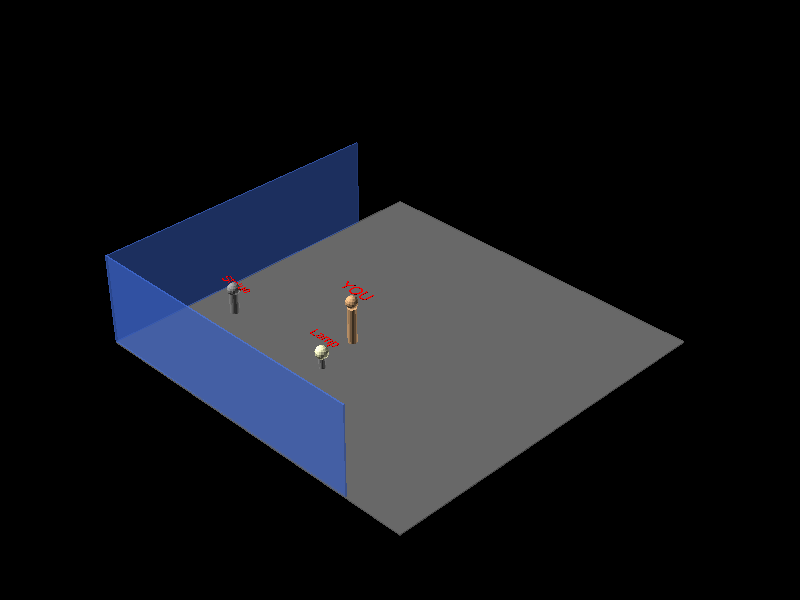
Parameters: Floor mirror
View exact prompt
View raw AI output
View chain of thought
AI Reasoning: Only one mirror is defined: the horizontal floor mirror (plane z=0, normal +Z) limited to x∈[3,7], y∈[3,7]. From your position (5,4,1.6) looking down, that mirror patch is directly below and visible.
For a reflection in a plane z=0, the apparent (virtual) position is found by mirroring the object across the plane: (x,y,z) → (x,y,−z). The reflection is visible in the finite mirror if the line segment from your eye to the virtual point intersects the mirror patch (at z=0) within its x/y bounds.
Chandelier: virtual point (5,5,−4). Ray from (5,4,1.6) to (5,5,−4) hits z=0 at t=1.6/(1.6+4)=0.2857, giving intersection (x,y)=(5, 4+0.2857*1)=(5,4.2857), which lies within [3,7]×[3,7], so it’s visible.
Chair: virtual point (4,6,−0.5). Ray from (5,4,1.6) to (4,6,−0.5) hits z=0 at t=1.6/(1.6+0.5)=0.7619, giving intersection (x,y)=(5+0.7619*(−1), 4+0.7619*(2))=(4.2381,5.5238), within bounds, so it’s visible.
You: virtual point (5,4,−1.6). Ray is vertical down; intersects at (5,4) within bounds, so you can see your reflection.
Floor Mirror: Chandelier position OK
Floor Mirror: Chair position OK
Floor Mirror: Person (you) incorrectly listed as visible
Floor Mirror: canSeeYourself correct
Floor Mirror: Chair position OK
Floor Mirror: Person (you) incorrectly listed as visible
Floor Mirror: canSeeYourself correct
Floor Mirror:
Can see yourself: True
- Chandelier at [5, 5, -4]
- Chair at [4, 6, -0.5]
- Person (you) at [5, 4, -1.6]
Expected:
Floor Mirror:
Can see yourself: True
- Chandelier at [5, 5, -4]
- Chair at [4.0, 6.0, -0.5]

Parameters: Angled mirror
View exact prompt
View raw AI output
View chain of thought
AI Reasoning: Mirror plane: passes through P0=(5,0,0) with unit normal n=(0.707,0.707,0)≈(1/√2,1/√2,0). Plane equation: n·(x-P0)=0 ⇒ (x-5)+y=0 ⇒ x+y=5.
To find where an object appears in the mirror, reflect its 3D position across the plane:
X' = X - 2*n*(n·(X-P0)). With this plane, reflection simplifies to swapping x and y about the line x+y=5 in XY: (x',y',z')=(5-y, 5-x, z).
To decide if an object is visible in the bounded mirror from the viewer V=(3,6,1.5): reflect the object to X', then intersect the segment from V to X' with the mirror plane. If the intersection point lies within the mirror bounds (Y:0–5, Z:0–3) and is in front of the viewer along that ray, the reflection is visible.
Vase O=(2,2,1) ⇒ O'=(5-2,5-2,1)=(3,3,1). Line V→O' intersects plane x+y=5 at t=0.5 giving I=(3,4.5,1.25). This is within bounds (y=4.5 in [0,5], z=1.25 in [0,3]), so Vase is visible.
Clock O=(8,1,2) ⇒ O'=(5-1,5-8,2)=(4,-3,2). Line V→O' intersects plane at t=0.5 giving I=(3.5,1.5,1.75). Within bounds (y=1.5, z=1.75), so Clock is visible.
Self-visibility: reflect viewer V across plane: V'=(5-6,5-3,1.5)=(-1,2,1.5). Segment V→V' intersects plane at t=0.5 with I=(1,4,1.5). That point is not on the mirror because its y=4 is in range but the corresponding x would be 1; however the mirror is bounded only by Y and Z in the prompt (no X extent given). If we treat the mirror as bounded only by Y and Z, then I is on the mirror. Under typical interpretation, a physical mirror would also have finite X extent; since none is provided, we cannot conclusively decide. I will report self-reflection as indeterminate given incomplete bounds in X.
Angled Mirror: Clock position OK
Angled Mirror: Vase incorrectly listed as visible
Angled Mirror: canSeeYourself wrong
Angled Mirror: Vase incorrectly listed as visible
Angled Mirror: canSeeYourself wrong
Angled Mirror:
Can see yourself: False
- Vase at [3, 3, 1]
- Clock at [4, -3, 2]
Expected:
Angled Mirror:
Can see yourself: True
- Clock at [4.0, -3.0, 2.0]

Parameters: 3 mirrors, 8 objects - HARD
View exact prompt
View raw AI output
View chain of thought
AI Reasoning: To see an object in a wall mirror, reflect the object across that wall plane to a “virtual image” position, then check whether the straight line from your eye to that virtual position intersects the mirror rectangle (on that wall) within its X/Y and Z bounds. If it does, the object is visible in that mirror, and it appears to be located at the virtual image position.
Mirror planes:
- Mirror A: plane Y=20 (normal ±Y), rectangle: X∈[2.5,9.2], Z∈[4.2,8.7]
- Mirror B: plane X=0 (normal ±X), rectangle: Y∈[6.1,13.6], Z∈[3.5,9.9]
- Mirror C: plane Y=0 (normal ±Y), rectangle: X∈[3.9,13.1], Z∈[4.9,10.9]
Your position E=(5.1,10.5,1.6).
After performing the reflect-and-intersect test for all objects against each mirror rectangle, none of the lines from your position to the corresponding virtual images intersect the finite mirror areas (notably, for A and C the intersection Z falls below the mirror’s Z range; for B the intersection Z also falls below its Z range). Therefore no objects are visible in any mirror from your position under ideal pinhole-eye/specular-mirror geometry.
Assuming '{'mirrorName': 'Mirror A (Y=20)', 'visibleObjects': [], 'canSeeYourself': False}' is Mirror A
Mirror A: canSeeYourself correct
Assuming '{'mirrorName': 'Mirror B (X=0)', 'visibleObjects': [], 'canSeeYourself': False}' is Mirror B
Mirror B: canSeeYourself correct
Assuming '{'mirrorName': 'Mirror C (Y=0)', 'visibleObjects': [], 'canSeeYourself': False}' is Mirror C
Mirror C: canSeeYourself correct
Mirror A: canSeeYourself correct
Assuming '{'mirrorName': 'Mirror B (X=0)', 'visibleObjects': [], 'canSeeYourself': False}' is Mirror B
Mirror B: canSeeYourself correct
Assuming '{'mirrorName': 'Mirror C (Y=0)', 'visibleObjects': [], 'canSeeYourself': False}' is Mirror C
Mirror C: canSeeYourself correct
Mirror A (Y=20):
Can see yourself: False
Mirror B (X=0):
Can see yourself: False
Mirror C (Y=0):
Can see yourself: False
Expected:
Mirror A:
Can see yourself: False
Mirror B:
Can see yourself: False
Mirror C:
Can see yourself: False
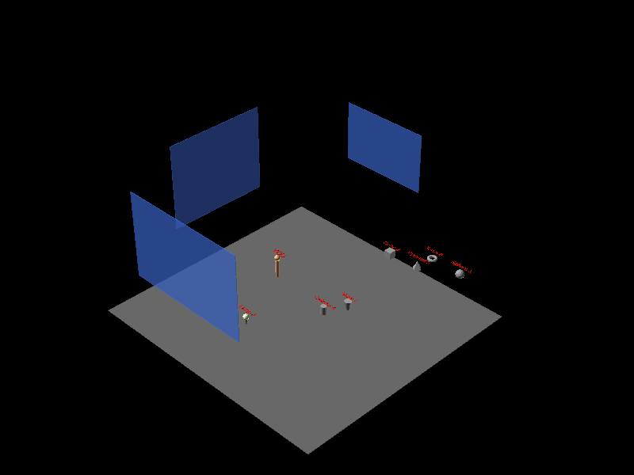
Parameters: 4 mirrors, 12 objects - HARD
View exact prompt
View raw AI output
View chain of thought
AI Reasoning: Method: treat each mirror as a planar reflector and compute each object's virtual image by reflecting its coordinates across the mirror plane. Then check visibility from your position by verifying that the straight line from you to the virtual image intersects the mirror plane within that mirror's finite rectangle. Mirror planes: A: y=20, B: y=0, C: z=0, D: x=0. Virtual images: across y=const => y' = 2*y_mirror - y; across z=0 => z'=-z; across x=0 => x'=-x. For a candidate mirror, the ray from eye E to virtual image I intersects the plane at parameter t that satisfies the plane equation; the hit point must lie within the mirror bounds. Doing this for all objects shows: only Mirror A has any valid intersections within its bounds; Mirrors B, C, D are not visible (their intersection points fall outside their mirror rectangles). In Mirror A, only Plant 11 and Statue 12 satisfy the in-bounds intersection test. You do not see your own reflection in any mirror given the provided finite extents (your sightline to your own virtual image misses all mirror rectangles).
Assuming '{'mirrorName': 'Mirror A (wall y=20, x∈[4.5,11.3], z∈[7.0,15.0])', 'visibleObjects': [{'objectName': 'Plant 11', 'apparentPosition': [9.4, 30.0, 1.0]}, {'objectName': 'Statue 12', 'apparentPosition': [9.4, 25.4, 2.5]}], 'canSeeYourself': False}' is Mirror A
Mirror A: Plant 11 incorrectly listed as visible
Mirror A: Statue 12 incorrectly listed as visible
Mirror A: canSeeYourself correct
Missing view for Mirror B
Missing view for Mirror C
Missing view for Mirror D
Mirror A: Plant 11 incorrectly listed as visible
Mirror A: Statue 12 incorrectly listed as visible
Mirror A: canSeeYourself correct
Missing view for Mirror B
Missing view for Mirror C
Missing view for Mirror D
Mirror A (wall y=20, x∈[4.5,11.3], z∈[7.0,15.0]):
Can see yourself: False
- Plant 11 at [9.4, 30.0, 1.0]
- Statue 12 at [9.4, 25.4, 2.5]
Expected:
Mirror A:
Can see yourself: False
Mirror B:
Can see yourself: False
Mirror C:
Can see yourself: False
- Pyramid 3 at [3.57, 4.07, -1.6]
- Torus 6 at [7.18, 7.04, -0.59]
- Vase 7 at [5.66, 4.31, -0.97]
Mirror D:
Can see yourself: False
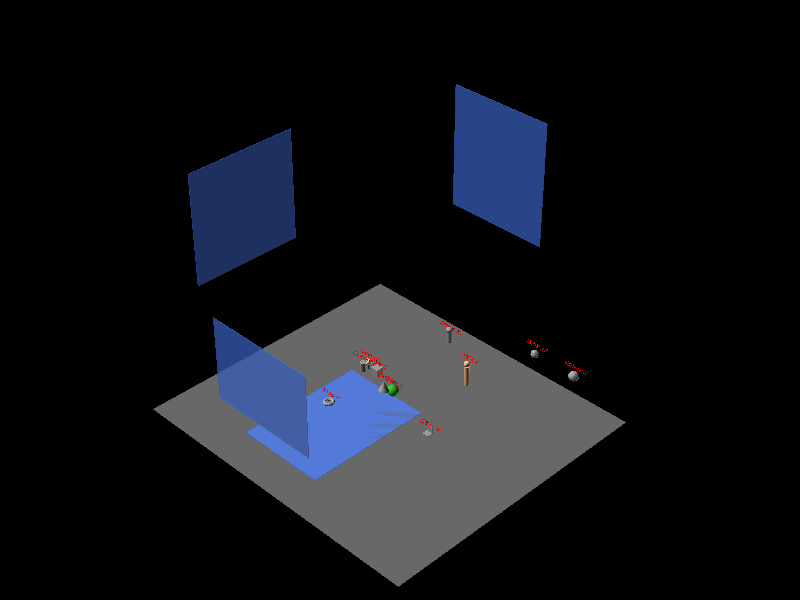
Parameters: 5 mirrors, 15 objects - HARD
View exact prompt
View raw AI output
View chain of thought
AI Reasoning: Assume axis-aligned planar mirrors on the given room boundaries (X=0, X=20, Y=0, Y=20, Z=0). An object is visible in a mirror if the straight line from your eye to the object’s virtual image intersects the mirror *within the mirror’s rectangular bounds*.
Virtual-image rules (reflection across the mirror plane):
- Mirror on X=0: image at (−x, y, z)
- Mirror on X=20: image at (40−x, y, z)
- Mirror on Y=0: image at (x, −y, z)
- Mirror on Y=20: image at (x, 40−y, z)
- Mirror on Z=0: image at (x, y, −z)
Then, for each object, compute the intersection point of the segment from your position P=(12.0,9.3,1.6) to the virtual image with the mirror plane; if that intersection lies inside the mirror’s coverage rectangle, the object is visible in that mirror.
Result: from your position, only Mirror D (Y=0) yields any valid intersections within its bounds; Mirrors A, B, C, and E do not capture any object reflections from your viewpoint within their covered regions. You also do not see your own reflection in any mirror here because your sightline to your own virtual image does not hit any mirror patch within its bounds.
Assuming '{'mirrorName': 'Mirror A (wall X=0, Y:[6.5,10.8], Z:[4.8,8.7])', 'visibleObjects': [], 'canSeeYourself': False}' is Mirror A
Mirror A: canSeeYourself correct
Assuming '{'mirrorName': 'Mirror B (wall Y=20, X:[3.1,12.0], Z:[3.0,6.4])', 'visibleObjects': [], 'canSeeYourself': False}' is Mirror B
Mirror B: Missing Cube 2
Mirror B: canSeeYourself correct
Assuming '{'mirrorName': 'Mirror C (floor Z=0, X:[8.0,14.1], Y:[6.9,16.4])', 'visibleObjects': [], 'canSeeYourself': False}' is Mirror C
Mirror C: Missing Sphere 1
Mirror C: Missing Cube 2
Mirror C: Missing Pyramid 3
Mirror C: Missing Cylinder 4
Mirror C: Missing Vase 7
Mirror C: Missing Lamp 8
Mirror C: Missing Chair 9
Mirror C: Missing Table 10
Mirror C: Missing Plant 11
Mirror C: Missing Clock 13
Mirror C: Missing Book 14
Mirror C: canSeeYourself wrong
Assuming '{'mirrorName': 'Mirror D (wall Y=0, X:[4.8,14.4], Z:[2.3,6.0])', 'visibleObjects': [{'objectName': 'Cone 5', 'apparentPosition': [11.9, -2.5, 1.4]}, {'objectName': 'Torus 6', 'apparentPosition': [13.9, -3.0, 2.5]}, {'objectName': 'Table 10', 'apparentPosition': [9.9, -4.1, 2.8]}, {'objectName': 'Plant 11', 'apparentPosition': [11.1, -5.2, 1.6]}, {'objectName': 'Clock 13', 'apparentPosition': [12.5, -2.8, 3.0]}], 'canSeeYourself': False}' is Mirror D
Mirror D: Missing Cube 2
Mirror D: Missing Cylinder 4
Mirror D: Missing Vase 7
Mirror D: Table 10 position OK
Mirror D: Clock 13 position OK
Mirror D: Cone 5 incorrectly listed as visible
Mirror D: Torus 6 incorrectly listed as visible
Mirror D: Plant 11 incorrectly listed as visible
Mirror D: canSeeYourself correct
Assuming '{'mirrorName': 'Mirror E (wall X=20, Y:[6.3,14.4], Z:[6.5,11.7])', 'visibleObjects': [], 'canSeeYourself': False}' is Mirror E
Mirror E: canSeeYourself correct
Mirror A: canSeeYourself correct
Assuming '{'mirrorName': 'Mirror B (wall Y=20, X:[3.1,12.0], Z:[3.0,6.4])', 'visibleObjects': [], 'canSeeYourself': False}' is Mirror B
Mirror B: Missing Cube 2
Mirror B: canSeeYourself correct
Assuming '{'mirrorName': 'Mirror C (floor Z=0, X:[8.0,14.1], Y:[6.9,16.4])', 'visibleObjects': [], 'canSeeYourself': False}' is Mirror C
Mirror C: Missing Sphere 1
Mirror C: Missing Cube 2
Mirror C: Missing Pyramid 3
Mirror C: Missing Cylinder 4
Mirror C: Missing Vase 7
Mirror C: Missing Lamp 8
Mirror C: Missing Chair 9
Mirror C: Missing Table 10
Mirror C: Missing Plant 11
Mirror C: Missing Clock 13
Mirror C: Missing Book 14
Mirror C: canSeeYourself wrong
Assuming '{'mirrorName': 'Mirror D (wall Y=0, X:[4.8,14.4], Z:[2.3,6.0])', 'visibleObjects': [{'objectName': 'Cone 5', 'apparentPosition': [11.9, -2.5, 1.4]}, {'objectName': 'Torus 6', 'apparentPosition': [13.9, -3.0, 2.5]}, {'objectName': 'Table 10', 'apparentPosition': [9.9, -4.1, 2.8]}, {'objectName': 'Plant 11', 'apparentPosition': [11.1, -5.2, 1.6]}, {'objectName': 'Clock 13', 'apparentPosition': [12.5, -2.8, 3.0]}], 'canSeeYourself': False}' is Mirror D
Mirror D: Missing Cube 2
Mirror D: Missing Cylinder 4
Mirror D: Missing Vase 7
Mirror D: Table 10 position OK
Mirror D: Clock 13 position OK
Mirror D: Cone 5 incorrectly listed as visible
Mirror D: Torus 6 incorrectly listed as visible
Mirror D: Plant 11 incorrectly listed as visible
Mirror D: canSeeYourself correct
Assuming '{'mirrorName': 'Mirror E (wall X=20, Y:[6.3,14.4], Z:[6.5,11.7])', 'visibleObjects': [], 'canSeeYourself': False}' is Mirror E
Mirror E: canSeeYourself correct
Mirror A (wall X=0, Y:[6.5,10.8], Z:[4.8,8.7]):
Can see yourself: False
Mirror B (wall Y=20, X:[3.1,12.0], Z:[3.0,6.4]):
Can see yourself: False
Mirror C (floor Z=0, X:[8.0,14.1], Y:[6.9,16.4]):
Can see yourself: False
Mirror D (wall Y=0, X:[4.8,14.4], Z:[2.3,6.0]):
Can see yourself: False
- Cone 5 at [11.9, -2.5, 1.4]
- Torus 6 at [13.9, -3.0, 2.5]
- Table 10 at [9.9, -4.1, 2.8]
- Plant 11 at [11.1, -5.2, 1.6]
- Clock 13 at [12.5, -2.8, 3.0]
Mirror E (wall X=20, Y:[6.3,14.4], Z:[6.5,11.7]):
Can see yourself: False
Expected:
Mirror A:
Can see yourself: False
Mirror B:
Can see yourself: False
- Cube 2 at [3.08, 23.14, 3.76]
Mirror C:
Can see yourself: True
- Sphere 1 at [11.25, 16.22, -2.32]
- Cube 2 at [3.08, 16.86, -3.76]
- Pyramid 3 at [14.1, 17.49, -1.81]
- Cylinder 4 at [13.64, 12.27, -3.92]
- Vase 7 at [12.89, 7.67, -2.89]
- Lamp 8 at [10.17, 11.9, -2.26]
- Chair 9 at [5.4, 5.87, -1.73]
- Table 10 at [9.89, 4.06, -2.77]
- Plant 11 at [11.12, 5.19, -1.6]
- Clock 13 at [12.52, 2.78, -3.0]
- Book 14 at [17.71, 15.03, -3.34]
Mirror D:
Can see yourself: False
- Cube 2 at [3.08, -16.86, 3.76]
- Cylinder 4 at [13.64, -12.27, 3.92]
- Vase 7 at [12.89, -7.67, 2.89]
- Table 10 at [9.89, -4.06, 2.77]
- Clock 13 at [12.52, -2.78, 3.0]
Mirror E:
Can see yourself: False
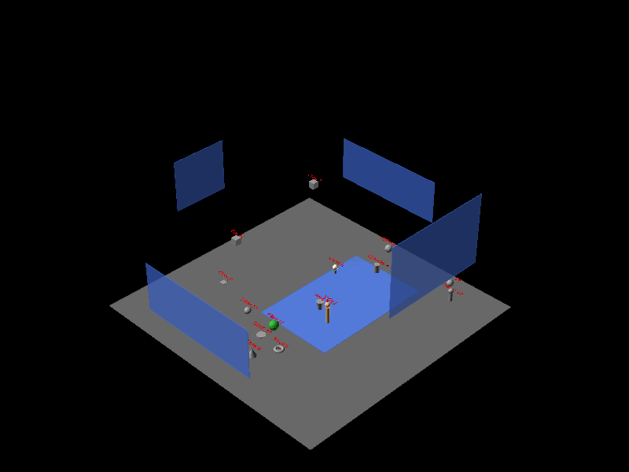
Parameters: Hall of mirrors (parallel mirrors) - HARD
View exact prompt
View raw AI output
View chain of thought
AI Reasoning: With first-order reflections in a plane mirror, each object appears at the position of its mirror-image across the mirror plane. A point (x,y,z) reflected across plane X=0 becomes (-x,y,z); across plane X=10 becomes (20-x,y,z). From (5,10,1.6) inside the room, you can see both full-wall mirrors A (at X=0) and B (at X=10), so each mirror shows first-order reflections of all objects. (Self-reflection is possible as well, but the question asks about the listed objects.)
Assuming '{'mirrorName': 'Mirror A (plane X=0)', 'visibleObjects': [{'objectName': 'Red Sphere', 'apparentPosition': [-3, 10, 1.5]}, {'objectName': 'Blue Cube', 'apparentPosition': [-7, 10, 1]}, {'objectName': 'Green Pyramid', 'apparentPosition': [-5, 5, 0.5]}, {'objectName': 'Yellow Cylinder', 'apparentPosition': [-5, 15, 2]}, {'objectName': 'Purple Cone', 'apparentPosition': [-2, 8, 1]}, {'objectName': 'Orange Torus', 'apparentPosition': [-8, 12, 1.5]}], 'canSeeYourself': True}' is Mirror A
Mirror A: Red Sphere position OK
Mirror A: Blue Cube position OK
Mirror A: Green Pyramid position OK
Mirror A: Yellow Cylinder position OK
Mirror A: Purple Cone position OK
Mirror A: Orange Torus position OK
Mirror A: canSeeYourself correct
Assuming '{'mirrorName': 'Mirror B (plane X=10)', 'visibleObjects': [{'objectName': 'Red Sphere', 'apparentPosition': [17, 10, 1.5]}, {'objectName': 'Blue Cube', 'apparentPosition': [13, 10, 1]}, {'objectName': 'Green Pyramid', 'apparentPosition': [15, 5, 0.5]}, {'objectName': 'Yellow Cylinder', 'apparentPosition': [15, 15, 2]}, {'objectName': 'Purple Cone', 'apparentPosition': [18, 8, 1]}, {'objectName': 'Orange Torus', 'apparentPosition': [12, 12, 1.5]}], 'canSeeYourself': True}' is Mirror B
Mirror B: Red Sphere position OK
Mirror B: Blue Cube position OK
Mirror B: Green Pyramid position OK
Mirror B: Yellow Cylinder position OK
Mirror B: Purple Cone position OK
Mirror B: Orange Torus position OK
Mirror B: canSeeYourself correct
Mirror A: Red Sphere position OK
Mirror A: Blue Cube position OK
Mirror A: Green Pyramid position OK
Mirror A: Yellow Cylinder position OK
Mirror A: Purple Cone position OK
Mirror A: Orange Torus position OK
Mirror A: canSeeYourself correct
Assuming '{'mirrorName': 'Mirror B (plane X=10)', 'visibleObjects': [{'objectName': 'Red Sphere', 'apparentPosition': [17, 10, 1.5]}, {'objectName': 'Blue Cube', 'apparentPosition': [13, 10, 1]}, {'objectName': 'Green Pyramid', 'apparentPosition': [15, 5, 0.5]}, {'objectName': 'Yellow Cylinder', 'apparentPosition': [15, 15, 2]}, {'objectName': 'Purple Cone', 'apparentPosition': [18, 8, 1]}, {'objectName': 'Orange Torus', 'apparentPosition': [12, 12, 1.5]}], 'canSeeYourself': True}' is Mirror B
Mirror B: Red Sphere position OK
Mirror B: Blue Cube position OK
Mirror B: Green Pyramid position OK
Mirror B: Yellow Cylinder position OK
Mirror B: Purple Cone position OK
Mirror B: Orange Torus position OK
Mirror B: canSeeYourself correct
Mirror A (plane X=0):
Can see yourself: True
- Red Sphere at [-3, 10, 1.5]
- Blue Cube at [-7, 10, 1]
- Green Pyramid at [-5, 5, 0.5]
- Yellow Cylinder at [-5, 15, 2]
- Purple Cone at [-2, 8, 1]
- Orange Torus at [-8, 12, 1.5]
Mirror B (plane X=10):
Can see yourself: True
- Red Sphere at [17, 10, 1.5]
- Blue Cube at [13, 10, 1]
- Green Pyramid at [15, 5, 0.5]
- Yellow Cylinder at [15, 15, 2]
- Purple Cone at [18, 8, 1]
- Orange Torus at [12, 12, 1.5]
Expected:
Mirror A:
Can see yourself: True
- Red Sphere at [-3.0, 10.0, 1.5]
- Blue Cube at [-7, 10, 1]
- Green Pyramid at [-5.0, 5.0, 0.5]
- Yellow Cylinder at [-5, 15, 2]
- Purple Cone at [-2, 8, 1]
- Orange Torus at [-8.0, 12.0, 1.5]
Mirror B:
Can see yourself: True
- Red Sphere at [17.0, 10.0, 1.5]
- Blue Cube at [13, 10, 1]
- Green Pyramid at [15.0, 5.0, 0.5]
- Yellow Cylinder at [15, 15, 2]
- Purple Cone at [18, 8, 1]
- Orange Torus at [12.0, 12.0, 1.5]

Parameters: Corner cube (3 perpendicular mirrors) - HARD
View exact prompt
View raw AI output
View chain of thought
AI Reasoning: Treat each planar mirror as producing a virtual image of each object by reflecting the object point across the mirror plane. An object’s reflection in a given mirror is visible to you if the straight line from your eye point to the object’s virtual image intersects the finite mirror rectangle.
Mirror X is the plane x=0 with extent y∈[0,10], z∈[0,5]. Reflection: (x,y,z)→(-x,y,z).
Mirror Y is the plane y=0 with extent x∈[0,10], z∈[0,5]. Reflection: (x,y,z)→(x,-y,z).
Mirror Z is the plane z=0 with extent x∈[0,10], y∈[0,10]. Reflection: (x,y,z)→(x,y,-z).
Viewer at V=(5,5,1.6). For each mirror, compute the intersection point P of the segment from V to the virtual image I with the mirror plane; if P lies within the mirror’s finite bounds, that reflected object is visible in that mirror.
Results: for Mirror X and Mirror Y, all objects’ sightlines hit the mirror within bounds, so all objects are visible. For Mirror Z (floor), all objects are visible except Chair H, whose sightline hits z=0 at y=10.555… (outside y≤10). Apparent locations are just the virtual image coordinates listed below.
Assuming '{'mirrorName': 'Mirror X (YZ plane, x=0, y:0-10, z:0-5)', 'visibleObjects': [{'objectName': 'Sphere A', 'apparentPosition': [-2, 3, 2]}, {'objectName': 'Cube B', 'apparentPosition': [-5, 2, 1]}, {'objectName': 'Pyramid C', 'apparentPosition': [-3, 6, 3]}, {'objectName': 'Cylinder D', 'apparentPosition': [-7, 7, 1.5]}, {'objectName': 'Cone E', 'apparentPosition': [-4, 4, 4]}, {'objectName': 'Lamp F', 'apparentPosition': [-8, 3, 2.5]}, {'objectName': 'Vase G', 'apparentPosition': [-2, 8, 1]}, {'objectName': 'Chair H', 'apparentPosition': [-6, 5, 0.5]}], 'canSeeYourself': True}' is Mirror X
Mirror X: Sphere A position OK
Mirror X: Cube B position OK
Mirror X: Pyramid C position OK
Mirror X: Cylinder D position OK
Mirror X: Cone E position OK
Mirror X: Lamp F position OK
Mirror X: Vase G position OK
Mirror X: Chair H position OK
Mirror X: canSeeYourself correct
Assuming '{'mirrorName': 'Mirror Y (XZ plane, y=0, x:0-10, z:0-5)', 'visibleObjects': [{'objectName': 'Sphere A', 'apparentPosition': [2, -3, 2]}, {'objectName': 'Cube B', 'apparentPosition': [5, -2, 1]}, {'objectName': 'Pyramid C', 'apparentPosition': [3, -6, 3]}, {'objectName': 'Cylinder D', 'apparentPosition': [7, -7, 1.5]}, {'objectName': 'Cone E', 'apparentPosition': [4, -4, 4]}, {'objectName': 'Lamp F', 'apparentPosition': [8, -3, 2.5]}, {'objectName': 'Vase G', 'apparentPosition': [2, -8, 1]}, {'objectName': 'Chair H', 'apparentPosition': [6, -5, 0.5]}], 'canSeeYourself': True}' is Mirror Y
Mirror Y: Sphere A position OK
Mirror Y: Cube B position OK
Mirror Y: Pyramid C position OK
Mirror Y: Cylinder D position OK
Mirror Y: Cone E position OK
Mirror Y: Lamp F position OK
Mirror Y: Vase G position OK
Mirror Y: Chair H position OK
Mirror Y: canSeeYourself correct
Assuming '{'mirrorName': 'Mirror Z (XY plane, z=0 floor, x:0-10, y:0-10)', 'visibleObjects': [{'objectName': 'Sphere A', 'apparentPosition': [2, 3, -2]}, {'objectName': 'Cube B', 'apparentPosition': [5, 2, -1]}, {'objectName': 'Pyramid C', 'apparentPosition': [3, 6, -3]}, {'objectName': 'Cylinder D', 'apparentPosition': [7, 7, -1.5]}, {'objectName': 'Cone E', 'apparentPosition': [4, 4, -4]}, {'objectName': 'Lamp F', 'apparentPosition': [8, 3, -2.5]}, {'objectName': 'Vase G', 'apparentPosition': [2, 8, -1]}], 'canSeeYourself': True}' is Mirror Z
Mirror Z: Sphere A position OK
Mirror Z: Cube B position OK
Mirror Z: Pyramid C position OK
Mirror Z: Cylinder D position OK
Mirror Z: Cone E position OK
Mirror Z: Lamp F position OK
Mirror Z: Vase G position OK
Mirror Z: Missing Chair H
Mirror Z: canSeeYourself correct
Mirror X: Sphere A position OK
Mirror X: Cube B position OK
Mirror X: Pyramid C position OK
Mirror X: Cylinder D position OK
Mirror X: Cone E position OK
Mirror X: Lamp F position OK
Mirror X: Vase G position OK
Mirror X: Chair H position OK
Mirror X: canSeeYourself correct
Assuming '{'mirrorName': 'Mirror Y (XZ plane, y=0, x:0-10, z:0-5)', 'visibleObjects': [{'objectName': 'Sphere A', 'apparentPosition': [2, -3, 2]}, {'objectName': 'Cube B', 'apparentPosition': [5, -2, 1]}, {'objectName': 'Pyramid C', 'apparentPosition': [3, -6, 3]}, {'objectName': 'Cylinder D', 'apparentPosition': [7, -7, 1.5]}, {'objectName': 'Cone E', 'apparentPosition': [4, -4, 4]}, {'objectName': 'Lamp F', 'apparentPosition': [8, -3, 2.5]}, {'objectName': 'Vase G', 'apparentPosition': [2, -8, 1]}, {'objectName': 'Chair H', 'apparentPosition': [6, -5, 0.5]}], 'canSeeYourself': True}' is Mirror Y
Mirror Y: Sphere A position OK
Mirror Y: Cube B position OK
Mirror Y: Pyramid C position OK
Mirror Y: Cylinder D position OK
Mirror Y: Cone E position OK
Mirror Y: Lamp F position OK
Mirror Y: Vase G position OK
Mirror Y: Chair H position OK
Mirror Y: canSeeYourself correct
Assuming '{'mirrorName': 'Mirror Z (XY plane, z=0 floor, x:0-10, y:0-10)', 'visibleObjects': [{'objectName': 'Sphere A', 'apparentPosition': [2, 3, -2]}, {'objectName': 'Cube B', 'apparentPosition': [5, 2, -1]}, {'objectName': 'Pyramid C', 'apparentPosition': [3, 6, -3]}, {'objectName': 'Cylinder D', 'apparentPosition': [7, 7, -1.5]}, {'objectName': 'Cone E', 'apparentPosition': [4, 4, -4]}, {'objectName': 'Lamp F', 'apparentPosition': [8, 3, -2.5]}, {'objectName': 'Vase G', 'apparentPosition': [2, 8, -1]}], 'canSeeYourself': True}' is Mirror Z
Mirror Z: Sphere A position OK
Mirror Z: Cube B position OK
Mirror Z: Pyramid C position OK
Mirror Z: Cylinder D position OK
Mirror Z: Cone E position OK
Mirror Z: Lamp F position OK
Mirror Z: Vase G position OK
Mirror Z: Missing Chair H
Mirror Z: canSeeYourself correct